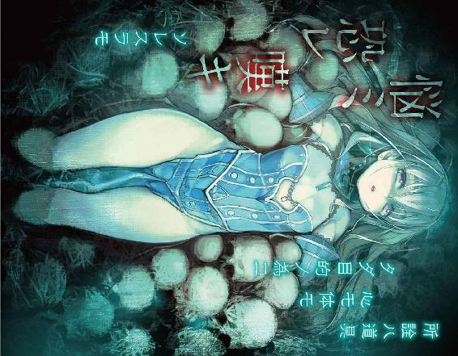
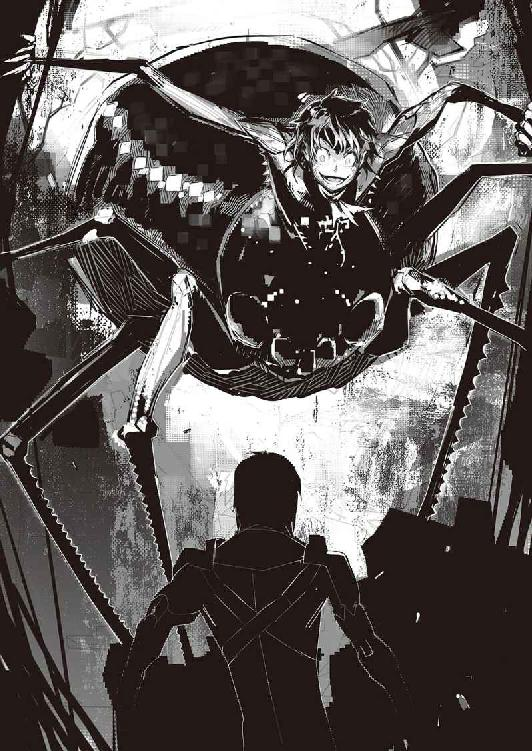

| 棺姫のチャイカVI: 6 (富士見ファンタジア文庫) | |
| 榊 一郎 & なまにくＡＴＫ | |
| (2013) | |


棺姫のチャイカⅥ
榊 一郎

富士見ファンタジア文庫
本作品の全部または一部を無断で複製、転載、配信、送信したり、ホームページ上に転載することを禁止します。また、本作品の内容を無断で改変、改ざん等を行うことも禁止します。
本作品購入時にご承諾いただいた規約により、有償・無償にかかわらず本作品を第三者に譲渡することはできません。
本作品を示すサムネイルなどのイメージ画像は、再ダウンロード時に予告なく変更される場合があります。
本作品は縦書きでレイアウトされています。
また、ご覧になるリーディングシステムにより、表示の差が認められることがあります。
口絵・本文イラスト なまにくＡＴＫ（ニトロプラス）
口絵・本文デザイン Lightning

序章 魔女の誘惑
ENTICEMENT OF HEXE
濃密な血の臭いに男は噎せた。
別に血腥い事が苦手という訳ではない。
むしろそれは男にとって、当然で、馴染みの行為であった。
戦場においては敵兵を殺し。戦場を離れてからは不用心な商人や旅人を殺し。時には田舎の村や町に攻め込んでは住人を殺し。場合によっては下手を打った手下を殺し。
そうやって男はずっと生きてきた。
血の匂いを忌む肉食獣が居ないのと同じく、男にとって、殺しは生きる為の手段であり、それ故に、人の死は特筆する様なものでもなく、当然──その際にしばしば嗅ぐ事になる血の臭いについても、男は慣れきっていて、特別な感慨を持たない。
だが、それはあくまで『他人の』という但し書きがつく。
即ち──
「............て......めぇ......!?」
男は血泡混じりの声でそう呻いた。
今、室内に立ちこめている濃密な鉄錆の臭いには、男自身のものも混じっていた。刺されたのは腹だ。心臓や延髄の様に即死する様な場所ではないが、内臓を傷つけていれば、やはり致命的──そういう場所である。
「な......んで............」
男達は廃棄された砦を根城にしていた。
戦乱期に大量に造られ、大量に壊され、戦乱期が終わってからは大量に放棄された簡易の軍事施設。城と呼ぶにはあまりに簡素で小規模だが、軍用施設として造られただけあって、頑丈さだけは確かな代物である。
裏には小さいながらも川が流れているのも、都合が良かった。単に飲んだり洗ったりの水が豊富に使えるという点以外にも、用済みの死体を放り込んでおけば、川の水が綺麗に洗い流してくれるからである。血臭はともかく、屍の発する腐敗臭だけは男達も、どうにも慣れる事ができなかった。
この砦跡に、敗残兵仲間と棲み着いて一年。
戦争が終わってからは、山賊めいた事を──というより山賊そのものの行為を繰り返して生きてきた。略奪や暴行は戦場でも珍しくなかったから、『転職』についてはあまり抵抗も無かった。やっている事は基本的に何も変わらなかったからだ。
襲った『獲物』は数知れない。
何人殺したかも覚えていない。
現場ですぐに殺して棄てた場合も多いが──襲った相手の中に女が含まれていれば、敢えて殺さず、この砦跡まで連れてきてじっくり愉しむ事も在った。勿論、最後は後腐れ無い様に殺して川に棄てるのも忘れなかった。もっとも殺すまでもなく、大抵の女は一週間と保たなかったのだが。
男達はむしろ......戦時中よりも生きる事を謳歌していた。
喰って。殺して。眠って。襲って。犯して。
軍規などという面倒なものに縛られていた時より、何倍も充実していた。
男達は現状に満足していた。
昨日──までは。
「......な......ぜ......」
男は繰り返し問うた。
自分の腹に突き刺さった短剣──その柄を握っている手下に。
十数人居た手下の中では、最も付き合いの長い奴だった。戦場に居た頃から一緒に戦ってきた。戦争が終わっても、当然の様に一緒に強奪と殺人を繰り返してきた。男にとっては右腕と言っても良い様な相手である。
それが──今。
男に短剣を突き刺している。
「......こん......な......」
一体......此処で何が在った？
男は二日ばかり砦を離れていた。
山賊と言っても、貨幣経済と完全に無縁ではない。
戦利品をそのまま消費したりあるいは溜め込む事も在るが、何処かで売り払って換金しなければ酒や煙草も買えない。薬や食料も含め、消耗品を全て自給自足するのは無理だ。なので男は、定期的に一人で、少し離れた街に出かけて戦利品を換金する。
今回もそうして砦に戻ってきた、その矢先の事だ。
出迎えが無い事を怪訝に思いながら砦の奥に入ると──いきなり刺されたのである。
「............こんな......」
砦跡の中の部屋では、最も広い──元々は兵糧の倉庫として使われていた部屋。
そこに、今、幾つもの死体が転がっていた。
攫ってきた女達の骸ではない。男の手下達が、あちこちに武器を握ったままで死んでいるのだ。いちいち確かめなくても分かる。これは互いに殺し合った結果だろう。
だが──何故？
何を原因に、この者達は殺し合ったのか？
そして何を理由に男は今──最後に残った一人に腹を刺されているのか。
「......俺の......もんだ......」
手下は喘ぐ様に言った。
「俺の......俺の......へ......へへ......」
その両眼は、何処か虚ろで──目の前の男にも焦点は合っていない。あるいは自分が誰を刺しているのかすら、分かっていないのかもしれなかった。
よく見れば、手下の腹も、両足も、べっとりと血で濡れている。
返り血とは思えない。恐らく手下自身の血だ。殺し合いにこの手下も参加していたのだろう。たまたま最後まで生き残っていただけで、この手下も無傷とはいかなかったのだ。
「......こ......の......」
男は腰に吊っていた短剣を引き抜くと、相手の背中にこれを突き刺した。
肋骨に一瞬、剣身が引っかかったが、男が刃先をこじると短剣は骨と骨の隙間へと滑り込み、鍔元まで深々と手下の背中に埋まった。
しかし──
「......おっ......俺の......へへ......」
手下は尚も笑っていた。
背中から心臓付近を刺されても──まるで気にした風も無く。あるいはそもそも刺された事にすら気付いていないのかもしれない。
「くそ......がッ......！」
男は更に短剣をこじった。
傷口が強引に開かれて大量の血が手下の背中を伝って落ちていく。
そして──
「俺の......」
手下は、眼をぐるぐると回して、最終的に白目を剥くと、男の腹に突き刺していた短剣から手を離して仰向けに倒れた。
そして──
「......あの......女は......俺の......俺の......もん......へ......へへ......」
手下が譫言の様にそう漏らすのが聞こえた。
「......!?」
男は呻く。
よろめきながら後ずさり、壁に背中が当たると、それに沿ってずるずると──崩れる様にして座り込んだ。腹には自分が使ったのと同じ型の短剣が突き刺さったままだ。どちらも男達が兵隊時代から使ってきた大量生産品である。
「......女......女だと......？」
まさか。
（こいつらは──女を取り合って!?）
しかも十人以上の男達が、揃いも揃って？
女を抱くのも初めての子供ならいざ知らず......男達はこれまでにも何度も女を攫ってきては慰みものにしてきた。そんな連中が、ちょっと抱き心地が良かったからといって、殺し合いをするか？
そして、この最後に残った手下も......問題の女を自分が独占したいという欲求、ただそれだけの為に、長い付き合いの男を刺したというのか。それも自分自身の致命的な傷の手当てすらも、後回しにして。
信じられない。
友情などという青臭い事を言う積もりなど無かったが、それでも、一定の信頼は相互に在った筈だった。そうでなければ、敗残兵となった後も行動を共にしたりはしないし、後を任せて砦を離れたりもしない。
なのに──
「......馬鹿......な......」
男は目の前の現実を否定するかの様に首を振り──そして。
「.........お」
ようやく気付いた。
死体だらけのこの部屋に、今なお立っている人影が在るという事を。
若い娘だ。
身の丈を含め全体的に小柄で──胸も未だ成長途中といった様子である。顔立ちにも幼さが色濃い。容貌は整い、四肢もほっそりとして長く、既にその姿は優美だが、それでも未だ成熟の余地を多分に残している──そんな印象だった。
「............おま、え、は」
壁際の暗がりに溶け込む様にして、ひっそりと佇む娘の姿に──男は見覚えが在った。
先日、隊商を襲った際に攫ってきて、皆で慰みものにした娘である。
幼いとさえ言える様な容姿だったのだが──同時に、何処か奇妙な色艶を感じさせる娘だった。体臭か。あるいは仕草なのか。とにかく、美しいだけではない、男の欲望を煽り立てる様な何かが、その娘には備わっていた。
だから男達は嫌がって泣き叫ぶ娘を、競う様にして犯した。
恐らく、娘は眠る暇すらろくに無かっただろう。そんな扱いをすれば、長持ちしないのは、これまでの経験から皆、分かっていただろうに、そうせずにはおれぬ程──男達は娘の身体に溺れていた。
「............」
娘は無言で男を見つめている。
何処か匂い立つ様な色気を体臭の様に放散しているのは相変わらずだった。それは血臭に満ちたこの場においても、変わらない。いや──むしろ強調すらされているかの様にさえ思えた。
だが──
「......？」
男の脳裏を疑問が過ぎる。
この女は──誰だ？
いや。目鼻立ちは確かにあの娘だ。男も手下達と一緒に、何度も殴って何度も抱いた。泣き叫び嫌がる娘で強引に劣情を晴らした。未だ成熟しきっていない身体だったが、実に具合が良くて──この娘の身体を使って、何処まで快楽を引き出せるか、まるで自分が試されているかの様にすら思った。
だから見慣れている。見慣れている筈だ。
なのに──記憶の中の娘と何かがずれる。
目鼻立ちに変化は無い。
では──
「......か......み......？」
暗がりで一瞬分からなかったが。
髪の色が違う。それと瞳の色も。
白銀の髪と青紫の瞳。
男が砦を留守にしていたこの二日間で変わったのか。
だが──どうして？ どうやって？
「──単純」
呟く様に言う娘は──全裸だった。
白い肌を惜しげも無くさらけ出しながら、娘は壁際から離れ、ゆっくりと歩いて男の前に立った。途中、床に転がる死体を何度も踏んだが、顔色一つ変えない。そんなモノにもう興味は無いとでも言うかの様に。
「............」
大量に血を失い、死に向かって落ち込んでいく最中である筈なのに──男は股間に猛る感覚を覚えた。この女を抱きたい。この女を犯したい。何度でも。ずっと。それが許されるのならば何だって──
「............！」
そこまで無意識に考えて。
そしてようやく男は悟った。
この娘だ。この娘がやらせたのだ。
自分を抱く男達に囁き唆したのだ──自分を独占したければ他の者を殺せと。
「......そん......な......馬鹿......な......」
自分は一切──凶器を振るう事も無く、ただ一方的に陵辱され続けるだけで、この娘は十五人もの荒くれ者達を殺した事になる。
そういえば、娘が泣き叫ぶのを止めたのはいつからだった？
むしろ娼婦の如き表情で積極的に身体を開く様になったのは？
その時は未だ、この娘の髪と眼の色は黒いままだったか？
それとも......
「き......さ......ま......」
夢から醒めるのが、余りにも遅かった。
もう男には、立ち上がる力すら残っていなかった。
恐らく、死は避けられまい。
ならば、せめてこの娘に一矢報いる事はできないか。
そう考えて持ち上げた手が──しかし虚しく空を掻いて落ちる。
もう指先の感覚すら無くなっていた。
緩慢に忍び寄る絶望に呻く男。
その様子を──
「──無様」
娘は冷たい紫の瞳で、いつまでもいつまでも見下ろしていた。
第一章 人殺しの性
MURDER INSTINCT
虚しくすれ違う指先と指先。
差し出した手は──しかし相手に触れる事無く空を泳いだ。
「──！」
焦りがそう見せるのだろう──眼に映る全てが間延びしたかの様に、緩慢に進んでいく時間の中、遠ざかっていく少女の姿を見つめながら......トール・アキュラはその胸に激しい焦りを覚えた。駄目だ。ここままでは彼女が手の届かない所へと行ってしまう。
「──ッ！」
トールは半ば無意識の内に限界まで──いや限界を超えて両腕を伸ばしていた。
もうこれ以上は無理だと思っていた彼の手は、しかし主の必死の願いに応えたのか、ほんのわずかだけ予想よりも遠くへと届き......少女の身体に触れていた。
トールは必死に少女の身体を引き寄せて──抱き締める。
今此処で彼女を放してはならない。ただそれだけを想ってその両腕に力を込める。
「アカリッ......！」
「──兄様」
少女は──妹のアカリ・アキュラは、トールの腕の中でその眼を瞬かせていた。
誰もが認める器量好し、実によく整った顔立ちでありながら、何かと表情に乏しい為、普段は何を考えているのか分かり難い所の在る妹だ。しかし、さすがに今はうっすらと驚きの相がその顔に浮かんでいる。
「......あに......さま......」
束の間、彼女は戸惑う様にその両腕を所在なく彷徨わせていたが──やがて、トールの行為に応じるかの如く、彼女もまた両腕をトールの背に回して抱き締め返してきた。
「......兄様が......こんな......」
アカリはトールの耳元でそう囁いた。
「............」
対するトールはただただ無言。
早鐘の様に鼓動を刻む心臓が忌々しい。
それは自分が動揺しているのだと──自分自身を肉体的にも精神的にも御し切れていないのだという証拠だ。そしてそれは乱破師にとっては恥そのものだった。心、技、体、己の全ては目的を達成するための道具、それが乱破師である。使いこなせないでは乱破師を名乗る資格は無い。
だが──
「......初めてだな」
トールの無言に構わずアカリは続けた。
「兄様の方から......こんな風に」
ぎゅっとトールを抱き締める腕に力を込めるアカリ。
「兄様......この手を離さないでくれ」
「──言われなくても離さねえよ」
密やかな声で囁いてくる妹に──トールは低い声でそう言った。
彼の声は震えていた。
何故なら........................大声で喚き散らしたいのを必死に堪えていたからだ。
「......つうか、アカリ」
「何だ兄様」
「常々疑問だったんだが──一体何考えてるんだお前は？」
「寝ても覚めても兄様の事ばかりだ」
耳朶をくすぐるかの様にアカリの声がそっと告げてくる。
既に互いの肩に頭を載せている様な状態なので、今、彼女がどんな表情をしているのかはトールには見えないが──
「そうか。俺の事を......」
トールは一瞬、感慨を噛み締めるかの様に眼を閉じる。
「......事故に見せかけて殺す方法でも常に検討してんのか」
そう問うトールの耳元を渺々と風が吹いた。
山間部を──特にその谷間を渡る風はひどく冷たい。
「馬鹿な」
アカリはトールを抱き締めたまま『心外だ』と言わんばかりに強い口調で言った。
「私が敬愛する兄様を殺そうなどと。私はただ兄様はここで手を引っ込めたらどんな顔をするのだろう、とふと思っただけなのだ」
「......ほう」
トールは眼を細めて言った。
「思っただけか」
「思うとつい身体が動いてしまったのだ」
「............つい」
「他愛ない乙女の好奇心なのだ」
アカリはトールと抱き合ったまま淡々とした口調で言った。
「そう。俗にお茶目という奴だな」
「............お茶目」
「兄様の全てを私は知りたい。知りたいのだ。大事な事なので二回言った」
「............このまま背骨折るぞ、お前は！」
両腕に力を込めながらトールは喚いた。
そんな二人の傍らを、ただ風だけが通り過ぎて行く。
そう。文字通りに風だけだ。
他には何も無い。右にも左にも前にも後ろにも。そして下にも──即ち、地面すらも、無い。トールとアカリは縄一本で高い高い空中にぶら下がっているのだった。
トールとアカリは現在──『空渡り』という修練の真っ最中である。
山間部に在る乱破師の隠れ里──アキュラでは、日々、乱破師の卵達が様々な修練を積み続けている。通常の武術は勿論、騎士や戦士では習得しない──どころか先ず考えもしない様な特殊な技術の修練も少なくない。流言飛語を操る為の心理操作術。毒薬や劇薬を使いこなす為の薬研。各種錠前や仕掛罠に対する解除法。勿論──体術に限っても特殊なものが幾つか在る。
その一つであり、最も危険とされる部類が『空渡り』である。
谷の上に渡された一本の長い綱から、真下に向けて垂らされた二本の短い綱。この先端にそれぞれ一人ずつがぶら下がる。一方は振り子の様に身体を揺すって勢いを付け──機を見て綱から手を離し跳び、これをもう一方が空中で受け止める──これが『空渡り』である。
勿論、双方の息が合っていなければ、跳んだ方は谷底に真っ逆さまだ。
なのにアカリは──あろう事か──手を引っ込めた。トールが跳んだ際、自らも腕を伸ばして彼の手を掴む役である筈の彼女が、互いの手が触れるか触れないか、といったその瞬間に、いきなり。
「兄様があんなに激しく私を求めてくるとは想ってもみなかったのだ」
アカリは言った。
「私が動揺して思わず尻込みしてしまうのも無理なからぬところだと想う」
「他人事みたいに言ってんじゃねえ！」
「臆病な私を笑ってくれ」
「笑えねえよ！」
ずっと一緒に育ってきた筈なのだが、未だに、時折この妹が何を考えているのか分からなくなる事が在る。
「......覚えてろ、お前の番に、同じ事してやるからな」
とトールはアカリにそう囁いた。
だが──
「それはつまり全力で抱き付いて来いという兄様の意思表示だな？」
「......あれ？」
あんまり仕返しの意味が無かった様な。
「いや。そうじゃなく......て」
「悪かった。兄様は抱き付くより抱き付かれる方が好みだったか。成る程、兄様が怒るのも道理だ。私も妹としての精進が足りない。不甲斐ない妹を笑ってくれ兄様よ」
「だから笑えねえよ！」
尚もアカリと抱き合ったままトールは喚いた。
人間は死の間際に、走馬燈の如く、過去の経験を思い出すという。
単なる懐旧なのか。それとも人生の終了を目前にして、悔いを遺さぬ様にという回顧なのか。あるいはもっと身も蓋もなく──強い恐怖や後悔から来る錯乱か。
如何なる心の動きによるものにせよ......間近に避けようも無く迫る『死』がその原因である事に間違いは無かろう。
それはつまり──逆から言えば、何の脈絡も無く過去の記憶が脳裏を過ぎる時、その者の肉体や精神は既に『死』を受け入れる準備に入ったという事にならないだろうか。
ならば......
「──ッ！」
愕然と空中でトールは眼を瞬いた。
気を失っていたのは恐らく一瞬だろう。
いきなり温度も低く空気も薄い空中に投げ出された為だ。
（まずい......っ！）
轟々と耳元で風が唸っていた。
いや。厳密に言えば唸っているのは風ではない。動いているのは大気ではなく自分自身の方である。それも横方向ではなく縦方向に──つまりは真下に向かって猛烈な勢いで。
トール・アキュラは墜落していた。
文字通り真っ逆さまに。
（のんびり走馬燈なんざ視てる場合じゃねえッ!!）
落下する彼の真上に──空は無かった。
視界全てを塞ぐかの様に巨大な、鋼鉄の構造物の姿が広がっている。
それは空飛ぶ城塞であり、最大最強の魔法機関であり、フェスビスト大陸史上、他に類を見ない超巨大決戦兵器である。支えるものも、吊すものも無く、山の様に大きなそれが空中に在る様は......幻想的ですらあった。
航天要塞〈ソアラ〉。
「くっ......！」
トールはそこから落ちてきた。
勿論──命綱は無い。今のトールには落下を止める術は無かった。
先の気絶中に見た追憶の通り......乱破師は高い場所での活動を想定した修練をも積む。
そしてその中には、高所から落下した際の対処法も含まれている。衣服を使い、ムササビの如くこれを広げて空気抵抗を生じさせる事、あるいは壁面に手裏剣を突き立てる事などで、抵抗を生じさせ、落下速度を殺す技法についてトールは教わった。
だが、それもこれも限度というものが在る。
通常の城塞や崖の上から飛び降りる際になら、そうした技法も役に立ったかもしれない。
だが──山の頂よりも高い空中から、となると、もうそれは焼け石に水だ。今のトールの周囲に『壁』は無いし、衣装を全部脱いでこれを掲げたとしても、面積が小さすぎて速度を殺しきれないか──さもなくば空気抵抗の強さに破れてそれで終わりだろう。
つまり──今のトールには、死を免れる方法が無いという事だ。
たとえ水面に落ちたとしても、この高さならば──この落下速度ならば、水面は岩にも等しい硬さでトールの身を打つ。恐らくは人間としての形も残らぬ程にばらばらになり果てる事だろう。
乱破師は、他人のものも自分のものも命を粗末にするのが商売だ。
死に際しても、それが必要、あるいは必然であるならば、粛々と受け入れるべきであると教えられた。その意味で、トールは此処で諦めて無駄な足掻きを止めるべきだったろう。
だが──
（こんな所で......！）
落下しながらトールは歯ぎしりした。
自分は未だ何もしていない。
自分は目的を遂げていない。
（未だ......未だ俺は......！）
こんな中途半端な所では死ねない。
トールは無様にも──乱破師としては不心得も良い所だが──空中で足掻いた。往生際が悪いと言われようと、此処でただ無為に死を受け入れる事だけはできなかった。
だが現実はどこまでも非情だ。
志が在ろうと無かろうと。
夢が在ろうと無かろうと。
人は死ぬ時には、何の容赦も無く、あっさりと当然の様に死ぬ。怒っても、笑っても、泣いても、喚いても、死は関係なく訪れる。人としての尊厳も、大志も、感慨も、全ての事情を考慮する事無く、ただ事実として訪れて、一切合切を無に帰する。
生死とは、世界とは、現実とは、そういうものだ。
人間の気持ちなど何の関係も無い。
だが──だからこそ。
「──!?」
奈落の底の如き絶望すらも......時にはあっさりと覆る。
「なんだっ......!?」
トールは──混乱した。
落下速度が急速に緩んだからだ。
何かに引っかかった訳ではない。勿論、落ちきって地面に達した訳でもない。トールの身体は未だ空中に在り、四肢は虚を掻いているだけだ。しかし彼自身の落下は──その速度は瞬く間に減じて、更に次の瞬間、彼は空中に静止していた。
「............」
死の恐怖を前にして、生を渇望する余り、五感を狂わせてしまったのではないか──一瞬だが、そんな風にトールは自らを疑った。
しかし──
「──これは」
すぐにトールは気付いた。
違う。この感覚には覚えが在る。
何かに吊されるでも、何かに支えられるのでもなく、勿論、手で捕まる訳でも、脚で立つ訳でも無い。強いて言うならば、水に浮かぶ様な──しかし身体の何処にも浮力を感じない奇妙な状態。
そう。確かにトールには墜落死を免れる術が無い。
だが他の者までそうとは──トールを救う手立てが無いとは限らない。
「──チャイカ!?」
航天要塞を振り仰ぐトール。
これは魔法による浮遊だ。
だが──
（チャイカ......じゃない？）
既に今トールが落ちてきた、航天要塞の底──即ち塵処理場の床は閉じられている。
無論、床越し、壁越し、天井越しに魔法を掛ける事は可能かもしれない。だがそもそも魔法は基本的に、魔法師が対象との距離や方向を厳密に定義して起動せねば、上手く効果を発揮しない。少なくともトールはチャイカからそう聞き及んでいる。だからこそチャイカの魔法機杖には測距器が取り付けられているし、遮蔽物の向こうを狙うのは事実上不可能なのだ。
勿論、当てずっぽうで距離や位置を設定する事は出来るが、それで、落下中のトールを浮遊魔法で捉えるのは、まず無理だろう。
つまりこれはチャイカではなく──別人の魔法。
「......！」
眼を細めたトールは、航天要塞の外周部にその人物を見つけた。
恐らくは換気か何かに使うのであろう小さな窓──トール達が侵入した際に使ったのと同様の『孔』から、身を乗り出す様にして、機杖を掲げている人物。
確かにチャイカではない。だがトールはその人物に見覚えが在った。
眼鏡を掛けた小柄な少女──
「確か......ジレット隊の」
「～～～！」
眼鏡の少女は、機杖を掲げたまま何事か叫んでいるが──その声はさすがに届かない。
トールの落下は止まったが、元々此処は山の頂よりも高い空の上だ。横方向に吹く本物の風もまた轟々と常に唸りを上げている。多少の声で叫んでも、横風に吹き散らされて此処までは届くまい。
だが、彼女はちゃんと彼を助けてくれる積もりの様だ。
トールの身体は青白い魔法の光に包まれながら、ゆっくりと上昇を始めた。
「......しかし......何故？」
怪訝の表情でそう呟くトール。
どうしてあの少女が此処に居るのか。
どうして彼女はトールを助けたのか。
「......まあいい」
航天要塞の中に戻ってから尋ねれば良かろう。
まさか一旦助けておいてからまた放り出す様な、性根の腐った真似はすまいし、そんな事をしても何の実利も無い。
トールは浮遊の魔法に大人しく身を任せると──航天要塞内に引き入れられるのを大人しく待つ事にした。
白く華奢な拳が床を叩く。
「──トール！ トールッ!!」
何度も何度も......自らの拳を壊しかねない勢いで叩き続ける。
だが悲しい程にそれは、無駄で無意味な行為だった。
「トール！ トール！ トール！」
先程まで花弁状に開いて虚空に繋がっていた床は、しかし今、蟻の這い出る隙間も無い程にぴったりと閉じられている。分厚い床板に阻まれて、その向こう側を視る事はもう出来ない。視線は勿論──どれだけ振り絞ろうが声も届くまい。
だから銀髪の少女が繰り返す行為は、目の前の現実を何ら変える力を持たない。
だがそんな道理も解する余裕が無いのか、少女は必死の形相で床を叩いている。そうする事で空中に投げ出された従者が助かるのだと信じているかの様に──受け入れがたい残酷な現実を打ち壊せるのだというかの様に、四つん這いで、飽きる事無くその小さな手を、鋼鉄の床板に打ち付けていた。
艶やかで長い銀の髪は千々に乱れ、端整で可憐なその顔は、激昂に歪んでいる。
錯乱していると言っても良いだろう。少なくともその姿からは、普段の何処かおっとりした──世間知らずとも言うべき無邪気さは、跡形も無く吹っ飛んでいた。
チャイカ・トラバント。
棺担ぐ姫君。国無き王女。
やがて──
「トールッ............！」
どれ位──そうしていただろうか。
叩き続けた床が血で赤く濡れ始めて、ようやく彼女は握り拳を止めた。だが立ち上がる気力も無いのだろう──這い蹲った状態から、そのまま土下座をするかの様に、彼女は床の上に小さくなって震え始める。
そんな彼女に──
「気が済んだかな？」
横から、むしろ気さくな口調で呼び掛ける声が在った。
繊細で温和な顔立ちの──少年。
よく整い、中性的とも言える顔立ちである。
柔らかそうな髪は蜂蜜色、大きな双眸は琥珀色、顎は細く肌も白く──女と見紛うかの様に繊細な目鼻立ちに、育ちの良さを想わせる柔らかな表情が浮かんでいる。
リカルド・ガヴァーニ。
彼はチャイカ達に対してそう名乗った。
更に自分の素性について『実家であるガヴァーニ公爵家を乗っ取られた被害者』と説明し、家族を取り戻す為にガヴァーニ家を乗っ取った魔法師グラート・ランシアを倒す手伝いをしてくれと、頼んできた。
だがそれは真っ赤な嘘だった。
本当であったのは名前と血筋だけだ。リカルドは家族親族を皆殺しにした上でガヴァーニ公爵家を支配した張本人──むしろ加害者側だった。
しかし......
「意外だね？」
涼やかな口調で彼はそう言った。
リカルドは──正体をばらした今も、仄暗さや凶暴さをおくびにも出さない。
その言動は落ち着いていて、余裕を含み、朗らかですらある。
今もチャイカの従者であるトール・アキュラと、自らの手駒である四騎士との死闘を目撃し、更にはその勝利者であるトールを、自らの手で奈落の底へと墜落せしめた直後だというのに......その事について、さして感慨を持っている様には見えない。
その顔は、初めて会った時から変わらぬ、朗らかな微笑を浮かべているだけだった。
「従者を、それも乱破師を一人喪っただけでその慌て様」
「............」
ぴくりとチャイカの表情が震える。
それを知ってか知らずにか──リカルドは蹲ったままの彼女を見下ろしながら、更にこう続けてきた。
「目的の為には手段を選ばず、他人を殺し、自分を殺す、それが乱破師──そこが騎士や戦士とは違うのだそうだよ。彼等を雇うという事は、消耗品としてその命を買うという事。使い捨てようが、見殺しにしようが、雇い主の自由だ。つまり彼等は雇われた時点で、もう死んでいる。今更取り乱す様な事じゃない」
「............」
チャイカは床に這い蹲ったまま──無言。
そんな彼女を見下ろしながら──
「一緒に来てもらうよ」
リカルドはチャイカから奪った機杖を担ぐ様にして、自分の肩を叩きながら言った。
チャイカは動かない。
「............拒否」
代わりに──ぽつりと呻く様にそう言った。
「うん？」
「拒否、断固、拒否！」
チャイカは跳ねる様に立ち上がると、両手でリカルドを突き飛ばした。
唐突な彼女の行動に虚を突かれたか、胸を押されてリカルドは一歩後ずさる。その隙にチャイカは開いたままの塵処理場の出口へ向けて走り出し──
「──!?」
次の瞬間、チャイカは凍り付いていた。
彼女の喉元には一本の刃物が突き付けられている。
リカルドが腰に提げていた短剣である。貴族の持ち物らしく精緻な装飾が施された代物だが、勿論、刃は飾りではなく本物だ。
手にしているのはリカルドである。
「大人しくしてくれないかな」
「......は......早ッ......」
チャイカは眼を見開いて硬直していた。
当然だろう。彼女には──リカルドの動きがまるで見えなかった。追いついて、回り込んで、短剣を抜いて、突きつける──その全てが。いや。正確に言えば見えてはいたのだろう。だがチャイカの認識が追い付けなかったのだ。
「傷が付いちゃうよ？ ──事故で、間違いでついた傷は醜いよね」
リカルドの短剣がゆっくりとした動きでチャイカの首を──撫でる。
精密で、精妙で、しかも何処か淫靡な仕草だ。
彼女の衣装の首元──チョーカーの部分にするりと切れ目が入る。次の瞬間、緩んだ布と金具が垂れ下がり、チャイカの白いうなじが露わになった。
「......ッ！」
殆ど本能的な恐怖にチャイカの表情が引きつる。
そんな彼女の様子を、むしろリカルドは優しく慈しむ様な眼で見つめながら言った。
「切るのにもね。正しい手順というものが在るんだ。筋肉には走る方向が在り、皮膚にも厚い薄いが在る。正しい所に正しい角度で正しく刃を入れてやれば、びっくりする位に綺麗に切り分けられる。皮膚。筋肉。内臓。脂肪。骨格。野兎や鴨を料理した事は？」
そう言う間もリカルドの短剣は弄う様にチャイカの首筋を撫でて離れない。
鋭利な切っ先は皮膚に触れたまま、ゆっくりと彼女の首を──
「──うん？」
ふとリカルドは眼を細めた。
短剣のすぐ下──チャイカの白い肌に、朱い一線が浮かび上がっている。
首と胴体の境目。普段は衣装とチョーカーで隠れているそこに、ぐるりと細く薄朱い線が走っているのだ。
「......ふぅん？」
まるで古傷の様なそれを──興味深そうにリカルドが笑う。
「なるほどねえ」
「............？」
訳が分からないといった様子で眉をひそめるチャイカ。
何が『なるほど』なのか。リカルドは何に感心しているのか。
いや。そもそも──
「棺担ぐ姫君チャイカ......か。とにかく来てもらうよ」
何か興味をそそられたかの様な口調でリカルドは言った。
「嫌だと言うなら──そうだね。とりあえずこの場で耳か鼻でも削ぎ落とすけれど」
そんな言葉と共に、するすると首から顎へ、顎から頬へと滑っていった切っ先が、チャイカの耳に触れて──短剣の切っ先が耳の付け根にほんの少し食い込んだ。
皮膚が裂ける寸前、僅かな手の震えで血が噴き出しかねない様な微妙な力加減だ。それはつまり、リカルドがそういう行為にとても手慣れている事を意味する。それこそ──今更躊躇など微塵も覚えない位に。
「............」
チャイカは唇を噛む。
彼女に選択肢は最初から無い様だった。
航天要塞とはフェルビスト大陸最大の魔法兵器だ。
即ち──それを駆動する力は魔法であり、どれだけ巨大に見えてもその構造を突き詰めると、個人が携えて運用する魔法機杖と基本は同じである。つまり浮遊の魔法を掛けられた巨大な魔法機杖に、追加部品として、人間が乗る部分が後付けされているのだ。
当然ながらその内部構造は先ず魔法機関が優先で設計されている。
人間が乗る部分、物資を積む部分、設備を据える部分、そういったものは全て、後から巨大な魔法機関の周囲に配置され組み付けられている訳だが──当然ながらこれらを効率よく配置し、構造上の辻褄を合わせる為の空間的な『遊び』、いわば『隙間』が出来る事になる。
部屋と部屋の狭間、通路の壁の無意味な窪み、上階の床と下階の天井の空隙、等々。
航天要塞のそこかしこに点在する、何の機能も果たさない無意味な空間。
その一つに──トール達は居た。
「......はじめに言っておくけどね」
周囲には配管が壁と言わず天井と言わず這い回っており、およそ平面というのは床にしか見えない状態である。あるいは点検整備の際には使われるのかもしれないが、普段は、全く人が入る必要の無い場所だ。
狭苦しく──空気も淀んでいる。
奥行きはあるが、幅は無く、人はすれ違う事も難しい。
そこにトールと二人の少女は身を押し込める様にして隠れていた。
「正直、私はあんたなんか助けたくなかったんだからね」
腕を組んで妙に尊大な態度で言うのは、何処か豪奢な印象の金髪少女であった。
ヴィヴィ・ホロパイネン。
チャイカを危険人物として追う〈クリーマン〉機関配下の部隊──ジレット隊に所属する少女暗殺者である。トールも過去に何度か顔を合わせているが、乱破師そのものに良い印象を持っていないのか、何かと侮蔑の言葉を投げてくる。
今も彼女は不愉快でしょうがない──といった様子なのだが。
「分かってる」
トールは頷いて見せた。
多くの場合に、暗殺者は乱破師と考え方が近い。
どちらも身も蓋もない実利主義であり、目的の為には感情を圧殺する、という精神的な技術が求められる。それ故に、中途半端なしがらみはいつでも棚上げ可能な様に心掛けよ、と教えられるのである。
自分の仕事を遂行する上でそれが必要ならば、昨日まで殺し合っていた敵とでも、躊躇無く手を組める様に。
いや。そもそも『敵』という概念が騎士や戦士の持つそれとは違うのだ。それはあくまで仕事をする上での対象、あるいは障害という意味しかなく、なにがしかの感情をぶつける相手ではない。
憎しみも怒りも無用、それは無意味な遠回りを持ち主に強いる。
「お前達は、俺を助けた方が何か有利な点があるから助けた」
トールは皮肉げな笑みを浮かべて言った。
「そうよ。だから仕方なく──」
「要はお互い様って訳だ。だから礼を言う必要は無いな」
「......ッ！」
眦をつり上げてトールを睨み付けるヴィヴィ。
やにわに空気が緊迫する。
どうやらこのヴィヴィという少女──暗殺者として一人前とは言い難い。感情が表に出易く自己制御が利いていないのである。
もっとも......感情の制御に関してはトールもあまり人の事をどうこう言えた立場ではないのだが。妹にすら『乱破師には向いてないかも』などと言われる始末だ。
「あんたは──」
「貴方を助けようって提案したのは私です」
二人の間に割って入る様に口を挟んできたのは、眼鏡を掛けた少女だった。
ヴィヴィと比べるとやや地味というか、艶やかさには欠けるが、見るからに実直そうで、そこが見る者に好印象を与える──そんな容姿である。
魔法機杖を抱えているところを見ると恐らくは魔法師なのだろう。
ちなみに......今現在トール達が居るこの『隙間』を見つけ、此処に一旦、身を隠す事を提案したのは、この少女である。どうやら事前にこの航天要塞の内部構造をある程度把握している様で、どの辺りに、どんな『隙間』が在るのか──おおよそ想像がつくらしい。
「正確には貴方が落下するのを見て、私が彼女に相談無く、独断で魔法を使いました」
「......あんたが？」
トールは眼を細めて眼鏡の少女を見遣る。
「ジレット隊の機匠、ヴィータ・ブルザスコです。一応魔法師でもありますが」
と眼鏡の少女は言った。
ヴィヴィと違い、若干、トールに対する怯えの様なものがその言動に滲んでいる。
勿論──トールもこの二人相手に和気藹々とした会話が出来るなどとは期待していない。ズィータにとってはトールはまさしく『敵』──いつ会話を中断して襲い掛かってくるか分からない『悪人』のままなのだろう。ある意味で至極真っ当な捉え方だった。
ただ──
「御謙遜だな」
トールは眉をひそめて言った。
「俺が落ちるのを見てから術式編んで魔法起動させるとなると、相当な力量だろうに」
通常、魔法は行使に手間暇を喰う。
場所や状況に影響を受け易い為、現場での微調整が欠かせない。魔法の起動そのものは機杖を使う事で簡略化はしているが、現場に合わせて魔法を有効に活用する為には、臨機応変な呪文詠唱が必要になってくる。
対象物を浮遊させる魔法が、難易度としてどれ位のものなのかは、門外漢であるトールには分からない。だが、たとえ比較的簡単な魔法だったとしても、トールが落ちるのを見てから術式を起動させたとなると、相当な手練れだ。
しかもトールは落下中だった。
つまり魔法の作用する位置──魔法師との距離や方角に関してはもの凄い速さで変化している最中だったのだ。数秒後のトールの位置を予測した上で魔法を組み立てねばならない訳だから、生半可な対応力で可能な事ではない。
「いえ。貴方が傀儡と戦っているのを見ていましたから」
ズィータは首を振った。
「いつでも起動できる様に準備はしていたんですよ」
予めトールが落下する可能性を考慮した上で、想定した位置を実際にトールが通過する瞬間を待ち構えていた......という事か。
「つまり──元から俺に用が在った？」
トールは眼を細めて言った。
土壇場でつい助けてしまった──訳ではないというのなら、最初から、この二人はトールに用が在ったという事だ。あの場にはチャイカも居たので、あるいは彼女等が用が在るのはチャイカの方かもしれないが。
「はい」
素直にズィータは頷いた。
少なくともヴィヴィと違って、こちらはトールに対して特に良い印象も悪い印象も持っていないのだろう。余計なやりとりをせずに済む分、話が早い。
「貴方にお願いしたい事が在るんです。聞いていただけますか？」
「......とりあえず話はな」
トールは肩を竦めて言った。
「お前達に俺を助けてどんな利があるのか知らないが、あの場で魔法を掛けてもらわなければ死んでた身だ。大抵の事には協力してやれるさ」
そしてほんの少しだけ声の調子を落として付け加える。
「チャイカを引き渡せとか、そういうのでない限りは、な」
「......さすがに『狗』よね」
とズィータが何かを答えるよりも早く、またもトールを見下した様にそう言ってきたのは、言うまでもなくヴィヴィである。
「命を救った相手に感じる恩義より、雇い主への忠誠の方が上って訳」
「乱破師の命は主の為に使い捨てるのが筋だ」
トールはヴィヴィの顔を正面から見据えて言った。
「主を定めた時点で俺達はもう死んでる。無い命は救えねえよ──命を助けられたからって、主を裏切るなんざ、そりゃもう乱破師じゃない」
「ご立派な理屈ですこと。狗には狗の矜持が在るって訳ね」
「そういう事だ」
そこまで言って──それからふと思いついてトールは続けた。
「お前にはねえのかよ？ 自分の命を張ってでも成し遂げたい事とか......自分の命よりも大事にしているものとか、そういう『何か』が」
乱破師や暗殺者の様な汚れ役、忌み役には、栄光や名誉の類とは縁が無い。決して表舞台に立って賞賛を浴びる事は無い、完全な裏方だ。
だからこそ──
「そういうのが無いと本当にそこらの野良犬と変わらねぇだろ」
「............」
ヴィヴィが言葉に詰まった。
「人間、どうせいつかは必ず死ぬんだ。いつかなくなるものなら、自分の納得する使い方で使い切りたいと俺は思うだけだ」
自分の生きた証を世界に刻みたい。
生まれてきて意味が在ったのだと──逝くならばそう納得して逝きたい。
自分が生きている事で、『次』に繋いでいく事で、ハスミンや、その子の存在を、無意味だった事にしない為にも。
「使い所を見いだせなかった命ってのは、空しい」
自嘲の意味も込めてトールは言ったのだが、その辺りの機微はヴィヴィには伝わらなかった様だ。彼女はしばらくトールを睨んでいたが──やがてそれにも飽きたか、そっぽを向いて鼻を鳴らした。
「乱破師風情が。偉そうに」
「......まあそれはその通りだな」
とトールは苦笑した。確かに説教は乱破師の領分ではない。
ヴィヴィはどうも必要以上にトールに対して突っかかってくる事が多いが、あるいはそれはトールも同じなのかもしれない。ヴィヴィなど無視していれば良いのだ。この暗殺者の少女に『命懸けで守るべき矜持』が在ろうと無かろうとトールには関係が無い。ならばこんな話をわざわざする必要も無かった筈だ。
（似た者同士だから？ ぞっとしねえな）
自嘲気味にそんな風に考えるトール。
そこへ──
「......先程の『お願い』ですが」
ズィータが空気の冷えた頃合いを見計らって口を挟んできた。
「勿論、貴方にチャイカ・ガズを裏切れとは言いません。というより私達は今、それどころではないんです」
「......というと？」
眉をひそめて問うトール。
この二人が所属するジレット隊は、チャイカ・ガズを逮捕する任務を帯びて活動していた筈だ。だからこそトール達とも何度か衝突している。
そんな彼等が『チャイカ・ガズの事はさておいて』と言い出すとは。
いや。そもそもどうしてこの二人がこの航天要塞の中に居るのか？ まさかチャイカを追ってきたという訳でもあるまいに。
「私達は現在、普段の任務とは別に、このガヴァーニ公爵家について調べろとの命令を受けて、内偵を進めています。いえ。進めていた──といった方が正しいでしょう」
ズィータは僅かに眉間に皺を寄せて言った。
「ですが、仲間からの連絡では──どうやら、東方七カ国会議の主催、ヴィーマック王国は、私達の調査結果が出るのを待たず、討伐隊を差し向けた、と」
「討伐？ ガヴァーニ公爵をか？」
「東方七カ国会議は、ガヴァーニ公爵の航天要塞の私物化を問題視していて、独自に公爵の意図を問う使者を送った様なのですが。この使者が惨殺されて返ってきたと」
「............」
さすがにこれにはトールも驚いた。
王都からの使者を殺して送り返すなど、正気の沙汰とも思えない。
それはつまり──
「これは反乱の意図在り、と認めた東方七カ国会議が、討伐を決めたそうです」
当然、そうなる。
「討伐って......この航天要塞をか？」
フェルビスト大陸において最大最強の兵器である航天要塞。これを討伐するとなると、当然、同等かそれ以上の戦力が必要になる──
「はい。同型、二番要塞〈ストラトス〉と、その随伴部隊がこの〈ソアラ〉めがけて進軍中です。というより、もうすぐ近くにまで来ているらしくて」
航天要塞は巨大な魔法機関だ。
以前、トールもチャイカに問うて確認した事が在るが──航天要塞の魔法機関を攻撃に使えば、山を消し飛ばし、川を干上がらせる程の威力を発揮するという。要塞と言いつつ、その機能は単なる防御に留まらず、攻性の兵器としても充分に使い得るのだ。
そんな航天要塞同士が正面衝突するとなると......
「可及的速やかに脱出しなければ、私達も討伐戦の巻き添えになります」
トールの想像を認める様にズィータが言った。
「ですが、こうもヴィーマック王国が性急な判断を下すとは思っていなかったので、すぐに此処から脱出する方法というのが、無いんです」
この航天要塞〈ソアラ〉はガヴァーニ公爵領内を定期巡回し、随時、要塞内で働く侍女を募集している。そして応募してきた女達を迎え入れる際には、高度を下げて昇降機を降ろすのだ。
本来ならばヴィヴィ達はその際に、浮遊の魔法で脱出する積もりだったらしい。
だが──
「元々、航天機兵が専用の特殊な魔法機杖を使う事からも分かりますが」
とズィータは、指先で眼鏡のずれを直しながら言った。
「飛行──つまり空中を『移動』する魔法は、横方向であれ縦方向であれ、非常に難易度が高いんです」
魔法は『場所』に影響を受ける。
故に多くの魔法は、厳密に魔法師の位置と魔法の作用点を──魔法の効果が顕れる場所を予め設定し、それに合わせた微調整を行う事になる。だが飛行の魔法は浮遊のそれと違い......常にその位置が変わる。魔法師の位置も、魔法の作用点も、常に変わり続ける為、微調整が恐ろしく面倒なのである。
結果的に、『飛行』したければ専用の魔法機杖を用い、これによって微調整を継続して行う事で、空中に自身を維持する事になる。ただ単に特定の場所の物体を浮かせるだけの浮遊の魔法とは、異なるという事だ。
「まして、私のコレはこちらに来てから確保したものですし」
とズィータは言って抱えて居る魔法機杖を示した。
どうやら彼女の持っている魔法機杖は、自前のものではなく、この航天要塞の中に積み込まれていた装備を奪取して使っているらしい。元々は彼女等も侍女として応募してこの航天要塞内に潜り込んだ為、目立つ機杖は持ち込めなかったのだろう。
「それに脱出となると、航天要塞の浮遊力場の外側に出る事になりますから......同系統の魔法が干渉し合って不都合が生じる可能性も」
「──要するに」
ヴィヴィが忌々しげに言った。
「どうやって男のあんたが入り込んだのか知らないけど、どうせ、降りる為の方法も確保してるんでしょ？ 私達にもそれを教えなさい、って事」
「──ああ。そういう事か」
トールは苦笑した。
彼女等の期待した『利用価値』はトール自身には無かったという事だ。
「教えるのはいいんだが。今は使えないぞ」
「......へ？」
間の抜けた声を漏らすヴィヴィ。
「現状──此処から出られないって意味では、俺もお前等と大差無い」
肩を竦めてトールは言った。
「お前達も見た事あるだろ。此処にはフレドリカ──装鎧竜に乗って来たんだがな。途中であの四騎士の襲撃を受けてはぐれちまった」
「じゃあ......」
顔を見合わせるヴィヴィとズィータ。
「あの装鎧竜のこったから、そう簡単には死なないだろう。ただ、この要塞内の何処に居るのか、分からない」
生きていれば上層を目指すだろう──という程度の想像はつくが。
更に......
「チャイカともはぐれた」
ヴィヴィ達に引き上げられた直後、再度トールは塵処理場に入ったが──既にそこにはチャイカの姿もリカルドの姿も無かった。チャイカの棺も機杖も見当たらなかった。恐らくリカルドがチャイカを連れ去ったのだろう。
「しかもアカリは──妹の乱破師は敵方についた。理由は分からないが」
「その事ですが」
ズィータが片手を挙げて言ってきた。
「どうやら薬と魔法術式でガヴァーニ公爵側は人間を操り人形にする方法が在る様です。要塞内を巡回している兵士達や、普段、要塞を制御している魔法師達は、全員、その方法で支配されているらしく」
「............それは」
そういえばチャイカが『魔法師と傀儡の間に大きな精神力の差が生じていれば、相手を通信系の魔法と精神支配の術式で御する事が出来る』という話をしていた。故に寝ている人間や、怪我や病気で意識が朦朧としている人間はこれを支配出来るが、通常の状態にある人間を御するのは、魔法を用いても至難の業だとか──
では薬で相手の意識を一定の段階に抑え込めばどうなる？
一定時間毎に薬を投与するか──あるいは完全に精神の一部を破壊する様な薬を使うかすれば、恒常的に相手を支配し続ける事が出来るのではないか？
「じゃあアカリも？」
「私達は彼女と先にこの要塞内で顔を合わせていましたが」
ズィータが記憶を辿る様に額に人差し指を添わせて言った。
「ガヴァーニ家の家令──というより、現支配者の魔法師のグラート・ランシアに呼び出された後は、ずっと要塞上層部に居る様です。恐らく高い戦闘能力を買われて精神支配され続けているのでしょう」
ならばアカリは自らの意思でトール達の敵になった訳ではないのだ。
それはトールにとって歓迎すべき情報だが──
（問題は、完全におつむの中身を壊されたか、それとも抑え続けているだけか）
前者ならグラート・ランシアを倒そうと何だろうと、もうアカリを──以前の彼女を取り戻す事は出来まい。だが後者ならばアカリを一定時間、隔離しておくだけでも支配は解けるだろう。トールとしては後者である事を祈るばかりだ。
「精神支配系の魔法は、精神圧に差が無いと使えません。よくグラート・ランシアの傍に侍っているレイラという女性が、薬の調合に秀でている様で。この女性が用意した薬で、部分的に意識を支配し易い状態に落とし込んでいるのでしょう」
「レイラ......か」
トールがふと思い出すのは、この航天要塞に侵入したその際、薬物で眠らされた──眠らされそうになって、咄嗟に眠った振りをした──時の事である。蒼い服の、ヴェールを被った女がトール達の様子を見に来ていたが。
あれが、レイラとかいう女なのだろうか。
「そのレイラってのは蒼い服でヴェールを被ってる？」
「はい。そうみたいですね」
とズィータは肯定した。
トール達よりも早めに侵入していたのと、二人がかりであった分、彼女等はこの要塞とガヴァーニ公爵の手勢についてよく知っている様だった。ズィータが魔法機匠である事を思えば、内部構造にも比較的、明るいだろう。
「......むしろ、こちらから提案なんだが」
トールは改めて二人を見回して言った。
「お前等、俺に手を貸せ」
「──は？」
驚くというより呆れの表情をヴィヴィが浮かべる。
「あんた何言って──」
「フレドリカと合流出来れば、お前達も連れて降りてやる。だから、チャイカとアカリを取り戻すのに、手を貸せ」
そう。乱破師は、自分達の仕事を遂行する上で必要とあれば、個人の感情はさておいて、昨日までの敵と手を組むのも、何ら珍しい事ではない──
「あんたは自分の立場が分かってる？」
ヴィヴィが小馬鹿にした口調でそう問うてくるが、トールはこれを無視、ズィータの方に視線を向けて問うた。
「悪い話ではないと思うがな？」
「............」
ズィータは無言で眉をひそめる。
彼女はしばらくトールの提案を斟酌している様だったが......やがて相棒の方を振り向いて機匠の少女は言った。
「ヴィヴィ。とりあえず今の私達には安全にこの要塞を降りる方法が無いし......その一方で、このまま此処に留まっていたら、巻き添えになるのはこの人も同じだよ」
「そ、それはそうだけど」
「確かに悪い話じゃないと思う。どちらにせよ、そのフレドリカという装鎧竜を探さない事には、私達は此処から出る事は出来ないし」
「............」
ヴィヴィは顔をしかめたまま黙り込んでしまう。
だが文句を言わないのは、ズィータの言葉を正しいと認めているのだろう。
「では......」
改めて一つ咳払いをしてからズィータは言った。
「この航天要塞を出るまでは、共闘をお願いできますか。私達は貴方に手を貸します。まずはチャイカと、それからアカリでしたか、彼女が居るであろう上層部を目指すのが良いかと思います」
「──分かった」
トールは頷いた。
航天要塞は、ある意味で人体に似ている。
直立する巨大な魔法機関が、背骨の様に巨体の芯となり全てを支えているからだ。
同時に、内部に張り巡らされた通路や階段は血管、各施設は臓器、魔法増幅器は筋肉、外部装甲は皮膚で、血液は中を循環する魔力と人間──と見立てる事も出来る。
その意味では──
「──来たか」
その部屋は『頭脳』に相当する場所だった。
最上階層の中央部......巨大な魔法機関の直上。
リカルドが昇降機を乗り継いでチャイカを連れてきたのは、司令室らしき部屋であった。
上から見れば正八角形を描く形状をしており、壁は、出入り口の部分を除くと、全て魔法で内外の風景を映す水晶板となっている。現在は外部の風景を繋げて投影している為──まるで高い塔の上に居るかの様に、四方の全てに空が見えた。
各壁面に設けられた座席には魔法師達らしき者が一人ずつ座っており、黙々と魔法機関の管理を続けている様だった。
彼等はチャイカ達が入ってきても振り返りもしない。
代わりに──
「棺担ぐ姫君」
チャイカとリカルドに視線を向けてきたのは、司令室の中央に立つ人物だった。
やや小柄な中年男である。
頬骨の浮いた痩せ気味の顔で──細い眼と相まって実に神経質そうな印象だ。ただし幅広の肩鎧を付け、その下には身体全体をすっぽりと覆うマントをしているせいで、その体形はよく分からない。
だが──
「──ッ!?」
とりあえずチャイカの意識はその魔法師に向く事は無かった。
彼女はむしろ、彼の足下に転がる少女に眼を奪われていた。
「フレドリカ！」
そう。それはフレドリカだった。
俯せになっているが──その髪の色と横顔から見て間違いない。装鎧竜は変幻自在だが、少なくとも、それはチャイカが最後に見たフレドリカの姿と、ほぼ合致していた。
「フレドリカ！ フレドリカ！」
チャイカは必死の声で呼びかけるが、その少女に反応は無い。
当然だ。金髪に覆われたその後頭部に、握り拳がそのまま入りそうな、陥没孔が深々と穿たれているのだから。
人間ならば間違いなく致命傷──いや、それが装鎧竜であってもそれは同じだった。『装鎧竜を殺すには脳を破壊するしかない』これはフレドリカ自身が言っていた事だ。
「フレドリカ！」
慌ててフレドリカに駆け寄ろうとするチャイカだが──
「おっと」
リカルドの手が彼女の肩を掴んで止める。
筋肉質にも見えないのだが、リカルドの手はまるで鋼鉄の様な頑強さでがっちりとチャイカを掴んで放さない。チャイカがいくら暴れても指が彼女の肩に食い込むばかりで、全く自由になれそうになかった。
そんな二人を眺めつつ──
「リカルド様」
グラートは低く潰れた声で言った。
「この土壇場に少々お遊びが過ぎますぞ」
「悪いね。でも僕はこういう人間なんだ。知ってるだろ？」
とチャイカを押さえたままリカルドは平然と笑う。
「......確かによく存じ上げておりますが」
グラートは僅かに眉をひそめる。
チャイカには今一つ彼等の会話の意味が掴めないが──このやりとりからすると、やはりリカルドの方が立場が上という事なのか。
ただし明確な主従関係に在るという雰囲気でもなかった。その口調や表情からは、グラートがリカルドに対して敬意や畏怖を感じている様にも見えないのだ。またリカルドも殊更に立場が上の人間として、強権を示してみせる様子が無い。
「ところで、その死体は？」
リカルドがフレドリカを見遣って問う。
「丁度、私が別室で四騎士を直接操っていた際に、此処に侵入してきた様です。レイラが相手をした様ですが」
「レイラが？」
意外そうな声でリカルドが言う。
「斃したのはこ奴ですが」
とグラートが顎をしゃくる。
チャイカ達の背後で出入り口の扉が開き、そこから一人の娘が姿を現した。
長い黒髪を後頭部に束ねた、若い娘。
切れ長の双眸、すっきりと通った鼻筋を備え、美しいがやや鋭さが印象として優る──そんな容姿である。身体にぴったりと添う様な革製の衣装を帯び、その右手には鉄槌を一本ぶら下げている。
「......アカリ......！」
チャイカが低く呻いた。
言うまでもなく、その鉄槌持つ娘はトールの妹、乱破師のアカリ・アキュラだ。
本来、トールと共にチャイカを護り、彼女の目的達成に助力する筈の娘は──しかし雇い主を一瞥すらせず、その脇を通り過ぎて、グラートの隣に立った。
「思わぬ拾いものですぞ、この娘。身体能力という意味では、相当です」
「ふぅん？ 面白そうだね」
とリカルドは何度か瞬きしながらアカリを眺める。
その口調は何気なく、表情はあくまでも朗らかだ。
特に何か意味のある言葉とも思えなかったが──
「お戯れは無しにしてください」
と──釘を刺す様にグラートは言った。
「御趣味はそれ用の娘をお使いになられるのがよろしいかと」
趣味。それはどういう意味か。
だが勿論、それ以上の事をグラートは言わず、リカルドも応じない。
グラートはアカリに向き直ると、ぞんざいな口調で命じた。
「片付けておけ。後で処置して使う。そんな姿でも装鎧竜だそうだからな」
それは──フレドリカの死体の事か。
だが処置とは一体何か。そして使うとは。
「............」
チャイカは既にその辺りの疑問を斟酌する余裕など、無かった。
リカルドが肩を掴んでいなければ、むしろ、膝が笑ってしまって、その場に座り込んでしまっていたかもしれない。
どう考えてもトールは助からず。
フレドリカは頭に孔を開けた死に様を晒し。
そしてアカリは敵の操り人形。
立て続けに突きつけられる『仲間』の現実に、チャイカはもう、錯乱寸前だった。
「おや。絶望したかな？」
リカルドがふと首を傾げて残念そうに言った。
だが──
「大丈夫です。彼女はその程度で壊れる事は出来ない」
そんな台詞と共に更にもう一人が部屋の中に入ってくる。
「おや。レイラ」
リカルドが朗らかに声を掛ける。
つられる様にしてそちらを振り向いたチャイカは──ヴェールを被って顔を隠し、蒼い衣装をまとった女が歩いてくるのを見た。
声からすれば、若い娘なのだろう。あるいはチャイカとそう大差無いのかもしれない。
背丈もチャイカと同じか、少し高い位で小柄だが──
「それでは、役に立ちませんから」
──何というか。
奇妙な程に強い存在感がある。
もしチャイカが男であったなら、それが何なのかすぐに感じ取る事ができたろう。
全身から滲み出るかの様な、匂い立つ様な、色気。決して肉体が豊満な訳でもないのだが、成熟した女の色香の様なものが、この娘の身体を包み込んでいるのだ。
「棺担ぐ姫君──チャイカ」
レイラと呼ばれた娘は歌う様に言いながら近づいてくる。
「遺体を集める国無き王女」
「............」
チャイカは呆然とレイラを見つめる。
この娘は一体チャイカの何を知っている？
「貴女の存在理由は──これだものね」
そう言ってレイラが指さすのは、チャイカが背負っている棺だった。
同時に、リカルドがチャイカの腕をとると、背負帯からこれを抜かせ、棺を彼女から引きはがす。
「──！ 返却！ 返却！」
チャイカは暴れるが、リカルドは彼女を突き飛ばすと、床に立てたままの棺をレイラの方に押した。
「............」
レイラは蓋を開いて中身を確認。
チャイカの側からは棺の中身は見えないが、今、その中には幾つかの『遺体』と、分解された魔法機杖が納められている。それはつまり今のチャイカにとって『全て』と言っても過言ではないものだった。
「私の部屋に運んでおいて」
レイラはフレドリカの死体を片付けて戻ってきたアカリに、蓋を閉じた棺を押しやった。
「............」
アカリは無表情に頷くと、棺の背負帯に手を掛けて、部屋を出て行く。
「アカリ！ アカリ、返却、アカリ！ 戻る、正気！ アカリ！」
身を起こしてチャイカは叫ぶが、アカリは振り向きもしなければ、立ち止まりもしない。
アカリと棺を追って駆け出そうとした彼女の前に、レイラが立ち塞がった。
「ああ。可哀そうに」
それは──
「そんなに必死になって。そんなに夢中になって」
憐れむ様な。嘲る様な。悼む様な。嬲る様な。
何とも判別のつかない口調で、ヴェールの奥からレイラが言う。
「でもそれは未だ知らないから。自分が何の為に生きているのか、何の為に生まれてきたかを知らされていないから。自分が何なのかを──知らないから」
「──!?」
それは何も具体的な言葉を含まない曖昧な台詞だったが。
何か頭の片隅に引っかかるものを感じて──チャイカはレイラを振り返る。
「知ればその時こそ貴女は本当に、絶望できるわ」
レイラは熱の無い気怠い声でそう言った。
鈍い駆動音を辺りに振りまきながら巨影が行く。
悠然と蒼穹を横切っていく航天要塞〈ソアラ〉を、独り街道の片隅に立って見上げながら──その少年は眼を細めた。
「多様性の確保も善し悪しか」
奇妙な少年であった。
何処がと問われても、恐らく即答できる者は居まい。
別に格好が奇抜な訳でも、面相が醜悪な訳でも体格が異様な訳でもない。見た目には普通の、少し育ちが良さそうな子供に見える。
ただ......何か違和感が在る。
精巧な人形を見ているかの様な。
緻密な幻影を見ているかの様な。
姿形が似てはいるが、何か本質的な部分が違う──
「やはり予定外の行動に出る不良品が混じる」
その顔に表情は無い。押し殺しているのではなく、削ぎ落とされているのでもなく、ただただ自然に──虚無だった。人間の顔というものを徹底して平均値で作り上げたかの様な、喜怒哀楽の全てが相殺し合った顔。
かつてトール・アキュラに対して『ギイ』と名乗った謎の人物。
その目的は不明、素性も不明、そして能力も不明。
そもそも人間で在るかすら怪しいとトール達が感じる程に、それは、異質だった。
「数は一定に維持するのが望ましいのだろうが。さて」
ギイはふと背後を振り返る。
硝子玉の様な視線の先には──遥かな空の彼方には、今し方見つめていた航天要塞と、そっくり同じ形の巨影が浮かんでいるのが見えた。
「良く考えられているな。あるいは──それすらも考慮の内か。基本理念が違うとはいえ、能動的干渉体の思考は我々とは全く次元が違う」
少年は首を傾げてそう呟いた。
アルベリック・ジレットは騎士の──武門の出だ。
騎士階級を含め、貴族や王族は、元を正せば山賊や海賊の末裔である。
組織が巨大化し、土地に根付いて国家を名乗る様になり、単なる武力ではその全てを治めきれなくなった為、その多くは政治に特化していったが──その一方で、先祖代々受け継がれてきた武の力こそ自らの存在理由と定義して、営々と武術や軍事に特化していった家門も少なくない。
ジレット家は、そんな生粋の騎士たる家柄だ。
自分もまた、長じれば戦場に立つのだとアルベリックは信じていた。
戦うという事そのものには是も非も無い、それは理想実現の為の手段であり過程である──と彼は考えていた。武術という紛う事無き暴力と、正義や道徳といったものの折り合いを、彼はその一点でつけてきたのだ。
そして──幸か不幸か戦乱期は終わり。
アルベリックが戦場に立つ機会は失われた。
頭ではそれを良い事だと理解しつつも、彼の頭の片隅には、何処か、不安感の様なものが──自分の立っている足下が、実はいつ割れてもおかしくはない薄氷であると知った様な気持ちの悪さがわだかまっていたのも、事実である。
戦いたい。身につけた技の全てを使って、自分の生まれてきた証を立てたい。
自らの全てを燃焼させる様な──一心不乱の戦場を経験したい。
殊更に意識はせずとも、そう心の片隅で常に考えていた。身につけた技を使う事無く腐らせていく、そんな実感を覚えながら、そう考えずにはおれなかった。
だから──アルベリックの中には、あのチャイカの従者になると決めた乱破師のトール・アキュラを、驚く程に平然と『戦乱上等』と言い放てる彼を、羨ましく思う気持ちすら在ったのだ。
彼はきっと自分よりも戦場に近い場所に居るのだ──と。
だが......
「──ゼトラ殿」
アルベリックは噛み締めた歯の間から押し出す様に言った。
「どうあっても攻撃は待っていただけないのですか？」
「くどい！」
吐き捨てる様に言うのは、完全装備の騎士である。
兜の面具を開いた中には、壮年男性の顔が填まり込んでいる。
テオバルト・ゼトラ。
アルベリックと同様、ヴィーマック王国の騎士にして、今回のガヴァーニ公爵家討伐軍第一先遣隊隊長だ。アルベリックと異なるのは、鎧を含め、本格的な戦装束に身を包み、彼は今まさに再び戦場に立たんとしている──という事である。
彼の背後には、機車や馬車が何十台と隊列を組んでいる。
航天要塞〈ストラトス〉の随伴部隊として動いている彼等は、直接的に〈ソアラ〉に対して攻撃を仕掛ける力は持っていない。魔法を使えば可能は可能だが、およそ現実的でも効率的でもない。彼等の元々の仕事は、敵の航天要塞を支援する地上兵力が居る場合に、これを駆逐する事である。
とはいえ共に進軍する以上、〈ストラトス〉との連携が求められるのは当然だ。
故に随伴部隊には上空の〈ストラトス〉との連絡手段が在る筈だった。恐らくは専任の魔法師が常に通信系の術式を起動させていて、何かあれば逐次意思疎通が出来る様になっているのだろう。
（何としてでも〈ストラトス〉の攻撃を止めなければ......）
アルベリックの頭の中に在るのは先ずそれだった。
ヴィヴィとズィータが未だ〈ソアラ〉の中に居る。
ここで〈ストラトス〉が大規模な魔法攻撃を仕掛ければ、彼女等が巻き添えを食う可能性が高い。アルベリックとしては、何としてでも〈ストラトス〉の司令官に連絡をとって攻撃を思い止まらせたかった。せめて彼女等が〈ソアラ〉を脱出するまでは攻撃を遅らせたかったのである。
だからこそ、危険を承知で進軍中の随伴部隊の前へと飛び出したのだが──。
「そも、逃げ出す策も確保せずに潜入したのは貴殿等の──その部下達の失敗であろうが!? その様な間抜けの為に、戦を仕掛ける好機を失ったとあれば、むしろそちらの方が被害が増す！」
「............そ......それは」
「三度は言わん！ その道を開けよ！」
テオバルトが明らかに苛立ちの声でそう叫んだ。
だが......
（この方達は──）
アルベリックは、テオバルトの口調に潜む微かな喜悦に気付いていた。
アルベリックの内に在るものと呼応し共鳴するかの様な仄暗い──欲望。
（戦争がしたくてしたくて、うずうずしているのか）
テオバルトは戦況全てを俯瞰して判断する立場には無い。当然ながら開戦の機を見計らう権限も無い。アルベリックの提案がどういうものであるにしろ、テオバルトの一存で切り捨てるのは合理的ではない筈だった。
（口実が欲しかったのか。身に染みついた技を、性を、存分に使い倒せる場所が。敵なんか誰でも良くて。巻き込まれる者の事もどうでも良くて。ただ自分達の欲求を満たすというそれだけの為に──）
何という──本末転倒、何という醜悪さか。
戦いは手段であり過程である筈だったものが、いつの間にか目的にすり替わっている。
手段と目標をごっちゃにして──手段さえ望み通りで在れば、目標を選ばない。その際に他人に掛ける迷惑など、知った事ではない。ただただ自分達の望みの為だけに......
「ジレット様」
傍らのレオナルド・ストーラが気遣わしげに声を掛けてくる。
母の体内に居る内からある種の魔法処理を受けてきた結果、この少年兵は亜人と呼ばれる異形の存在になり──獣の様な耳と尾を備えるのと引き替えに、普通の人間よりも遥かに優れる素早さと、鋭敏な感覚をも手に入れている。
彼は、アルベリックの身体に生じた表面的な変化から──発汗や脈拍の増大等──彼の内心を推し量ったのだろう。決して長くはないが、寝食を共にした仲間だなのだから、察しがついてもおかしくはない。
そう──
（──ヴィヴィ、ズィータ）
ジレット隊の二人の少女、彼女等もまた同じくアルベリックの仲間だ。
ヴィヴィもズィータも他の者達同様、実戦経験に乏しいアルベリックを、隊長として認め慕ってくれた。特にヴィヴィなどは、自分の過去を──暗殺者として育てられた経験を恥じている様な部分が散見されたが、それでも、自らの技能を活かしてアルベリックを助けてくれた。
故にこそアルベリックは、彼女等を『損耗分』などという項目の数字として見る事はできない。自分の欲望の為に切り捨てて良い『些末事』では断じてないのだ。
（私は──）
改めて思い知らされた気分だった。
自分が目指していた『戦場』とは。
自分が志向していた『武人』とは。
このテオバルト達の様な連中であり、彼等こそが正しいとされる世界だ。
彼等にも親兄弟が居て、友人が居て、妻や恋人が居る筈であろうに──自分達が『損耗』として切り捨てる人間と、自分の大事な人々とが、同じ存在であるという事に気付かない。気付いていても考えない。
戦争という大義名分の下に思考停止する。
考えても詮無い事だとばかりに──
（私が目指していたのは──これなのか!?）
手段と目的の逆転。主従の錯誤。
戦うのは何の為に？
どう取り繕おうと、結局は自らの欲望が最優先なのだとすれば──それは理性や志の無い獣と何ら変わらないではないか。いや。中途半端な言い訳を用いない分だけ、獣の方が未だ潔い。獣は口当たりの良い言葉で自分を誤魔化したりもしないのだから。
そういう家に生まれたから？
そういう風に育ったから？
（私は......）
深く考えずに、戦争というものに憧れてきた。
戦うという事を手段では無く目的なのだと勘違いしてきた。
それを生きる目的と定めて、これまで武人たる事に精進してきたのだ。
しかし──
「武は手段で目的ではない」
呟く様に言うアルベリック。
次の瞬間、残像すら残さぬ速度でアルベリックの剣は抜き放たれていた。
「──!!」
テオバルトを含め、第一先遣隊の一同が愕然とした表情でアルベリックを見つめていた。
否、テオバルトの鼻先に突きつけられたアルベリックの剣の、切っ先を。
「貴様、それは一体何の積もりかッ!?」
憤然とテオバルトが叫ぶ。
彼も咄嗟に手にした騎兵槍を構えようとして、しかし、もう遅い。既に両者の間合いは剣のそれ──槍で以てアルベリックを制するには近すぎる。ましてアルベリックは更に半歩踏み出してテオバルトに肉薄していた。その気になればアルベリックはそのままテオバルトの顔面を深々と刺し貫く事が出来る位置だ。
「是が非でも攻撃を遅らせていただく！」
「気でも狂ったか!?」
後方に後ずさるテオバルトだが、それに合わせてアルベリックも前に出る。まるで示し合わせて踊っているかの様に、両者の距離はぴたりと固定され、変化しない。
「ぬうっ！」
テオバルトは騎兵槍をアルベリックに向けて投げ出して、腰に吊っていた予備の武器──長剣に手を掛ける。騎兵槍を投げつける事でアルベリックを少しでも怯ませて、強引に隙を造ろうという算段だったのだろう。
しかし──
「──！」
投げつけられた騎兵槍などまるで意に介さず──ろくに狙いも定めず投げられた槍など、万に一つも突き刺さる筈が無い──テオバルトの右手をアルベリックは剣で刺していた。
鎧と鎧の隙間を狙う精妙無比な刺突。右手首を突き刺されたテオバルトは、短いうめき声を上げながら、剣を放り出した右手を、左手で庇った。
「......貴様......！」
既にアルベリックの剣の切っ先は、再びテオバルトの、未だ面具が開かれたままの兜に突きつけられている。
「止せ！」
「しかし！」
テオバルトの後方でそんな叫びが飛び交ったのは、恐らく魔法師か弓兵がアルベリックを撃とうとして、同僚から制止されたのだろう。余程の精度でもなければ、アルベリックへの攻撃は、そのままテオバルトをも巻き込む。勿論、それと心得た上でアルベリックはテオバルトに対して肉薄した状態を維持しているのである。
「貴方達が正気だというのなら、私は確かに狂っているのでしょうな！」
アルベリックは叫ぶ。
一度抜いてしまえば躊躇は綺麗に消し飛んでいた。
貴族の高貴なる義務は『守る為に戦う事』──身を挺し、自らの命を危険にさらしてまで君主を、領民を、正義を守るからこそ、その在り様を貴いと評される。
だが抽象的な理念は詭弁に用いられ易い。
現にテオバルト達がそうしている様に、自分達の欲望を肯定する為に使われる。具体的でないからこそそれは如何様にも翻して用いる事が出来る。そういうものだ。
（だが自らに近しい者達すら守れずして何が騎士か！ 何の為の武術か！）
空疎な理念ではなく具体的な『守るべきもの』。
今のアルベリックにとってそれは、自分の部下達だ。ならば今此処こそが──習い覚えた武の使い所、アルベリックの『戦場』ではないか。
「ジレット様──」
アルベリックの背後に短剣を抜いたレオナルドが立つ。
自分達を取り囲む様に展開する兵士達を眺めながら、彼は明らかに困った──というより呆れた口調で言ってきた。
「流石にこれは無茶ですよ」
「すまん、レオナルド」
テオバルトを凍り付かせたまま、アルベリックは呟く様に言う。
「私はどうしてもヴィヴィとズィータを見捨てる事ができない」
「まあそれでこそジレット様──ではありますが」
やれやれ......といった様子で首を振るレオナルド。
だがその表情は不思議と明るかった。
航天要塞の中は閑散としていた。
以前ならば定期的に──しつこい位に巡回していた兵士達の姿が見当たらないのだ。
お陰でトール達は思ったよりも早くその内部を移動していく事が出来たが......
「......妙だな」
壁を伝い、物陰から物陰へと移動しながら、トールは眉をひそめる。
「意外ね。同意見よ」
とトールの後を追ってやってきたヴィヴィが言う。
ちなみに先頭がトール、次にズィータ、殿を務めるのがヴィヴィという隊列である。この面子の中では一番、体術に弱いのがズィータである事、その一方で、いざ戦闘になれば、ズィータの魔法が切り札になる可能性が高い事から、彼女を守る隊形なのだ。
「あれだけしつこく巡回していた兵士達はどこに行った？」
「何処かに集結しているのでは？」
とズィータが言う。
「私達が得ている情報が正しければ、もうすぐ航天要塞〈ストラトス〉とその随伴部隊が交戦可能域に到着します。戦闘に備えて態勢や装備を整えている可能性が在ります」
「なるほど」
トールはそれでも油断無く左右を見回し、飛び出すと──次の物陰に移動。
安全を確認すると、二人を手招きする。
「ま......斬った張った無しで進めるのは良い事だがな」
トールとしては何の気なしに洩らした一言であるのだが。
「何を今更、常識人ぶってんのよ」
とヴィヴィが吐き捨てる様に絡んでくる。
「戦争狂、殺人狂の乱破師が」
「......それはひょっとして喧嘩売ってんのか？」
トールは眼を細めてヴィヴィの方を振り返る。
「怒ったの？ 狗のくせに」
トールが挑発に乗ってきたのをむしろ喜ぶかの様に、ヴィヴィはにたりと笑う。
「ヴィヴィ、よしてよ......」
とズィータが言うものの、ヴィヴィは構わず続けた。
「人殺しが好きなんでしょ？ だから戦国時代に戻したいなんて言うんでしょ」
「......やけに絡んでくるのは、何か理由が在るのか？」
「は？ 何それ？ 誰が絡んでるっていうのよ」
自覚が無いのか、それとも自覚した上で更に挑発しているのか。
「むしろ『殺し』に特化してんのは暗殺者の方だろ」
相手を射殺せそうな程の鋭い視線を向けてくるヴィヴィから、視線を前方へと戻してトールは言った。
確かに乱破師は暗殺もこなすが、それは広範囲な技能の中の一つに過ぎない。対して暗殺者というのは、その名の通り殺す為だけの存在だ。むしろ殺しの是非を問われるならばこちらの方が先だろう。
「私は好きで暗殺者になった訳じゃない！」
「俺もだ」
物心ついた時にはアキュラの里に居た。
乱破師になるという選択肢以外は最初から無かった。トールにとっては当たり前過ぎて、それを今更、恨みに思う事もトールは無いのだが......あるいは物心ついてから、生みの親にアキュラの里に売られたりしていたら、ヴィヴィの様に、今の自分を否定する様な言動をする様になっていたかもしれない。
（ああ、つまりこいつ──自分が嫌いな暗殺者である事に苦しんでるのに、当然の様な顔して、何の悩みも疑いも無く乱破師してる俺達が、見ていて不愉快な訳か）
ふとトールは思い至った。
（まるで自分の懊悩を下らないものだと言われているかの様に思えて──）
「あんたは戦国時代に戻したいって言ってたじゃん！」
とヴィヴィは声の調子を上げる。
「人殺しが好きだから──」
「............」
「............」
トールとズィータが揃って最後尾の彼女を振り向き、口元に人差し指をあてて見せた。
「──あ。ご、ごめん」
と項垂れるヴィヴィ。
「......先にも言ったがな」
トールはふと思い出して言った。
「お前には人を殺してでもなしえたい何かとか、誰かを殺してでも守りたい相手とかは居ないのかよ？ それが無い、誰も居ないっていうなら、それこそ、お前は狗以下だろ」
「............」
はっとした様子でヴィヴィが口をつぐむ。
代わりに──
「そんな事ありません、ヴィヴィはジレット様の為に」
「ズィータ!?」
悲鳴じみた声を上げるヴィヴィ──を、また振り返ってトールとズィータは人差し指を唇に当てて見せる。どうにもこの少女暗殺者、隠密行動には向いていないらしい。
「ご、ごめん」
ヴィヴィはそう言い──赤面して脇に眼を逸らした。
「俺は、成し遂げたい事がある。それは今の時代じゃもう難しい、そう思ったからこそ、戦国時代に戻るのも結構だと言ったんだよ。それ以上でもそれ以下でもない」
視線をまた前に向けながらトールは言った。
（......って俺もどうして言い訳じみた事を）
ヴィヴィなどいくら突っかかってきても無視していれば良い筈なのだが。
ちらりと肩越しに振り返って一瞥すると、彼女が膨れ面で黙り込んでいるのが見えた。
（......ああ。こうしてると、あいつとよく似てるな。だからか）
ふとそんな事を思うトール。
年頃が同じという事も在ろうが......その上品な顔立ちは、何処かチャイカに通じる処がある。あるいはカツラでも被って少し目許を化粧なり何なりで弄ってやれば、見間違う事もあるかもしれない。
トールがついつい、ヴィヴィの挑発に乗って益体も無い会話をしてしまうのは、チャイカと話をしているかの様に錯覚してしまう部分が在るからかもしれない。他の誰に誤解されてもトールは平気だが、チャイカに誤解されるのだけは、我慢ならない。
主の信用を得てこその乱破師──それが無ければ本当の破落戸、本当の野良犬だ。
（──チャイカ）
足音を殺して要塞内を進みながら、トールは主たる少女の顔を脳裏に思い浮かべる。
恐らく彼女はリカルドが連れ去ったのだろう。
何の為にかは分からないが──
（無事でいてくれよ）
今はただただそれを願うのみだった。
拳を握り空に向けて手を伸ばす。
その腕の上に舞い降りたのは──一羽の鴉だった。
「......ふむ」
ジレット隊の魔法師マテウス・キャラウェイは顔をしかめて腕を降ろす。鴉は器用に腕を伝ってマテウスの肩にとまった。
綺麗に剃り上げた禿頭に、暗色の長衣、しかも顔に入れ墨らしき文様が入っているその容姿は、鴉の不吉な姿と相まって、実に不気味に見える。何というか、日常と非日常、生と死という対比を想わせるのだ。内心では他人の身を真摯に案じていても、とてもそうは見えないのが、この元僧侶である魔法師の、気の毒な点であった。
もっとも本人は、まるでその辺りの事は気にしていない様だが。
「どうだ？」
隣に立つ鎧姿の巨漢が、首を傾げてそう尋ねる。
岩から削り出したかの様なその顔には──こちらは薄いが、はっきりと、仲間の安否を気遣う表情が浮かんでいる。見るからに乱暴で豪放磊落そうな傭兵だが、その分、内面はそのまま外に出やすいらしい。
ニコライ・アフトトル。
今──ジレット隊の移動基地である機車〈エイプリル〉号にはこの二人しか居ない。
ヴィヴィとズィータは航天要塞〈ソアラ〉に潜入任務中、隊長であるアルベリックとレオナルドは、ガヴァーニ公爵家討伐軍に総攻撃を遅らせる様に直談判中、そしてニコライとマテウスは〈エイプリル〉号で待機しつつ、ヴィヴィ達との連絡待ちだった。
「......ふむ」
マテウスは鴉の足首に取り付けられている通信筒──要するに小さな手紙を入れる容器である──から丁寧に折りたたまれた紙を取り出した。
彼は魔法で鳥獣を精神支配してこれを使役する事に長けている。
通常ならば、魔法で支配術式を埋め込んだ鳥獣の意識に、直接『繋がる』事で、鳥獣の見聞きしたものを彼自身も知る事ができる。単なる連絡で在れば、それで十分だ。
だが──航天要塞の様な、大規模な魔法を常時稼働させている巨大な魔法機関の傍では、個人の魔法に大小様々な不具合が出る事も少なくない。
距離が開けば開くほどにそれは顕著になる。
故に、マテウスはあくまで鴉に支配術式で、一定の行動だけを埋め込み、自律行動として、手紙の運搬役に徹する様にしているのである。これならば、常時、その行動をマテウスが制御する方法と異なり、魔法通信の信号異常で鴉の行動が狂う事も無い。
ともあれ──
「ヴィヴィ達は独自に脱出する方法が無いか、探ってみる、との事ですが」
「どうやって。そもそも出入り不能だから、侍女の募集に応じて潜入した訳だろう」
「それは私にも何とも」
とマテウスは首を振った。
そして──
「............？」
ふと彼は眉をひそめる。
何の脈絡も無い唐突な表情の変化に──ニコライが尋ねた。
「どうかしたか？」
「ジレット殿の方ですが」
マテウスは念の為にと、アルベリック達の方にも、鴉を一羽、飛ばして上空からその様子を逐次見聞きしている訳だが......
「随伴部隊と戦闘というか──少々まずい事になっている様です」
「はあ!? なんだそれは!?」
ニコライは眼を丸くして言った。
「さすがに鴉の目と耳だけでは細かい事までは。レオナルドと一緒に、武器を抜いて、随伴部隊に囲まれております。どうも、先に仕掛けたのはジレット殿の様ですが」
「............」
ニコライは眉をひそめて唸る。
「まさか攻撃を待ってもらえなくて......」
「その可能性はありますな」
と無表情にマテウスは頷く。
「ああ......くそ、隊長らしいっちゃらしいが！」
ニコライは頭部中央に残った──残した赤毛に手を突っ込んで、苛立たしげにがりがりと掻く。そう長い付き合いでは無いとはいえ、アルベリックの性格については、部隊の全員がよく理解している。理解しているから全員が年若く経験も浅い彼を、慕っているのだ。
きれい事を口から吐くだけなら誰でも出来る。
だがそれを実際に行動で示せるのは──やはり限られた一部の人間だけだ。
「まさに」
そう同意してから、マテウスは首を傾げた。
「で──副長はどうなさいます？」
「どうってお前──相手はヴィーマック国王と東方七カ国会議に正式な命令を受けた、いわば勅令持ちの正規軍だぞ？」
「左様で」
「どう考えても百人とか二百人なんて規模じゃねえぞ？」
「でしょうな」
無表情にマテウスは肯定する。
一瞬、苛立たしげにニコライはこの元僧侶を睨み付け──
「それに真正面から挑む？ 二人や三人で？」
「私と副長が加われば四人ですな。実に戦力倍増です」
「お前な.........」
ニコライは呆れた様にそう言ってから。
「アホらしい！ つきあってられるか」
「左様で」
とやはり無表情に頷くマテウスに、ニコライは言った。
「機車出してくれ。隊長がアホをやったら、いさめるのが副長の務めだろ。とっととあのお坊ちゃん隊長を回収しに行くぞ！」
「............御意」
マテウスは素早い動きで〈エイプリル〉号に駆け寄った。
第二章 殺す生き物
NATURAL BORN KILLER
世界は不平等に満ちている。
そもそも人間は平等になど生まれてこない。
肉体的にも。精神的にも。頭脳的にも。運命的にも。
ありとあらゆる面で人間には個人差が在る。過剰な程に恵まれる者が居る一方で、多くを欠落して備えざる者も居る。彼等にとって世界とは同じものではない。そも『同じ人間』という詭弁で、両者を等しく扱おうとする事そのものがおかしい。
しかし多くの人間は『同じ』であろうとする。
平均たる事を志向し──強要する。
「貴方はおかしい！」
同僚の魔法師は一方的にそう断じてきた。
嗚呼。また──だ。
彼は気怠さと共に軽い失望を覚える。
多くの者は......出来るのにやろうとしない。それどころか突出した者の才を押さえ込もうとさえする。法律で。道徳で。有形無形のありとあらゆる『決まり事』で。
それが当然とでも言うかの様に......
「何を考えてこんな──こんな事を!?」
此処は傷病兵達を収容する野戦治療院だった。
無論──治療院といっても大した施設は無い。進軍中に見つけた廃屋の一つを掃除して使っているだけの事である。部隊が先に進めば、また放棄して別の建物に移る。建物が無ければテントを張って代用する。その程度の場所だった。
「一体、何を考えて──」
同僚の足許には幾つかの人体が転がっている。
床の上に敷かれた毛布の上に並べられているのは......いずれも負傷兵だ。それも恐らく生きて故郷の土を踏む事はもう無理だろうと、誰もが分かる様な重傷の者ばかり。彼等はあちらこちらに巻かれた包帯に血を滲ませ、荒らい呼吸を繰り返している。
もう役には立たない。むしろ他の健常な兵士の脚を引っ張る。
医術は専門外の彼にさえ、それははっきりと分かった。
だから──
「勿論、魔法術式の事だ。私は常に魔法術式の事を考えている。寝ても覚めてもそればかりだ。私は魔法師だからな。君は違うのか？」
「なっ──」
驚いた様に同僚は半歩後ずさった。
「丁度良い実験対象だった。だから使った。魔法術式の改良の為に。それが？」
「まさか、まさか、貴方は、今までも......？」
「今までも、何かね？ 実験に負傷兵を使ったかと問うのか？ 答えは『肯定』だ。使ったよ。敵兵もね。それが？」
彼は満足げに頷いて見せ──負傷兵達の頭の中に仕込んでおいた術式を起動させる。
物理的な効果を発揮するものではないので、先に起動しておいた通信系の魔法術式を介して、起動信号を送るだけでいい。呪文の詠唱すら必要無かった。
「......!!」
同僚が息を呑む。
最早、立つ事はおろか、まともに喋る事すら出来なかった筈の負傷兵達が、一斉に揃って──ゆらりとその場に立ち上がったからである。
「単に身体を動かすだけならば、さして難しいものではないのだがね。それでは本当に人形と変わらない」
自我の無い状態では、素材物質で作り出した人形と大差無い。
それはとても『支配』とは言えない。
「各人に備わった技術や、知識といったものも、利用できてこそ本当の支配と言えるだろう。もう少しなのだ。もう少し。実は理論はもう出来ている。騎士ならば武技や馬術を。魔法師ならば魔法技術を。そうしたものを活かした状態で──自我を持った状態で、こちらの意思に従わせる事が出来るなら、それこそが本当の支配」
負傷兵達は同僚に向き直る。
彼等は両手をゆっくりと掲げて──同僚に向かって歩き始めた。
「なおかつ......中継役を作って支配の網を広げる事が出来れば理想的だ。常に魔法で支配している必要は無い。一人で複数を支配し続ける──その為の術式を行使し続けるのは、魔法師に負担が大きすぎる。一人の魔法師が十人の中継役を支配し、十人の中継役が更に百人の対象を『自ら』支配する──こうする事で、たった一人の意思の下に、大軍団をも統率する事が出来る。いや。軍団だけではないぞ。社会、国家をもだ。素晴らしいと思わないか、君は？」
彼は両手を広げて熱弁を振るった。
「無駄で無意味な行為を繰り返す衆愚は存在しなくなる。美しい、整然とした、目的の為に一丸となって活動する──まるで一匹の獣の様な、集団！」
そうだ。そもそも人間は平等などではない。
だから人間が人間を完全に支配する──それはむしろ当然の帰結であったろう。
愚劣な人間の無駄で無意味な行為を排し、意のままに御する事が出来れば、それだけでも、世界は変わり得る。元より思考停止して本能の赴くままに動くばかりの衆愚なぞ、こちらで支配してやった方が、彼等自身の為にもなろう。
支配者の下の一律な存在の群れ。
『神』が居てこそ人は平等だ。
絶対支配の力が些末な差異を押し潰す。
「だから......だから、生きた人間で、実験を？」
近づいてくる負傷兵達を前に、信じられない、といった様子で同僚は首を振った。
「あ、在り得ない、許されない、り、倫理にもとる！」
「......倫理」
彼は溜息をついた。
「君もまたその言葉を口にして私を責めるのか。便利だな。倫理。道徳。条理。唱えていれば思考停止した自分を見なくても済む」
「............!?」
「許す？ 誰が許すというのだ。君か？ それとも神か？」
「貴方は──」
「出来るのだ！」
相手の言葉を抑え付ける様にして彼は吠えた。
「可能なのだ！ 道はそこに見えているのだ！ なのに何故それを為さない？ 研鑽を続ければ出来ると分かっている事を──可能性を何故、閉じようとする!? 私はこちらの方面に才を持って生まれてきた！ それを使うなと言うのか、君は！ そんな事を強いる権利が、君にあるのか!?」
「や──やめ」
負傷兵達が、壁際に追い詰められた同僚につかみかかる。
瀕死の怪我人とは思えない力で、鉤状に曲げられた指が、同僚の腕を、肩を、顔を──
「私にとって生きるとはこういう事だ！」
恵まれている事は罪か？
才を持って生まれる事は悪か？
『人は平等である』などという幼稚な幻想に従って、その才を押し殺し、可能性に眼を瞑り、凡人の中で何も成さずに生きていけというのか？
それは──そんなものが『正義』か!?
否。断じて否。
「ぎゃああぁぁァァアアアアアアッ!?」
口に。鼻に。耳に。そして眼に。負傷兵達の指が強引に突き込まれ、布を引き裂く様な音を立てて、同僚の顔が、剥がされていく。ばたばたと暴れる手足を、負傷兵達のそれが押さえつけ、迸る悲鳴すらも、喉の奥へと突っ込まれる指が、臓腑へと押し返す。
「あと少しなのだがな......」
同僚の始末は負傷兵達に任せると、彼は顎に指を添えながら呟いた。
この戦場は兵士の損耗率が高く、実験用の人体を確保するには都合が良かったのだが。流石に同僚が居なくなれば、彼を疑って掛かる者も出てくるかもしれない。
「また別の戦場を探さねばならんか」
呟く彼の口調に悲壮感は無い。
この戦国時代──戦場は何処にでも在り、一定以上の力量を備えた魔法師は何処の戦場でも常に不足気味だ。彼が次の実験場を探すのに困る、という事はあるまい。
「あと少し──」
そう呟きながら彼は──グラート・ランシアは、痙攣する同僚と負傷兵達に背を向けて、手早く荷物をまとめに掛かった。
航天要塞〈ストラトス〉の内部は緊張した空気に満ちていた。
既に倒すべき敵──航天要塞〈ソアラ〉を魔法でも目視でも捕捉している。それはつまり〈ストラトス〉が戦場に入ったという事を......五年振りに戦場に戻ってきたという事を意味していた。
「長距離攻撃魔法、術式用ー意ッ！」
「術式用ー意！」
副司令官のフォーデンの声を復唱する魔法師達。
「探査術式、感度確認！」
「感度確認！ 感度良し！」
「照準よし！」
「補正術式、確認！」
「補正術式、起動正常！」
航天要塞の場合──巨大魔法機関としての大出力と、複数の魔法師による専用の術式の駆動によって、通常の魔法とは桁違いの長距離攻撃が可能となる。
しかも〈ストラトス〉にはこの五年間で改良された最新式の攻撃魔法術式が幾つか搭載されている。その射程距離は、終戦直後のそれに比べて、更に何割か延びていた。つまり〈ソアラ〉に対し先んじた攻撃が可能なのだ。
「主術式、呪文列一番から七番、詠唱開始！」
「詠唱開始ッ！」
司令室の壁面に並んだ魔法師達がそれぞれ接続策を確認し、目の前の端末に向かって呪文詠唱を始める。同時に壁面の水晶盤に映る風景が一時的に消え、蒼い光で複雑な魔法術式の回路が描き出されていく。
その様子を満足げに眺めているのは、司令官のチゼータ将軍である。
「この〈ストラトス〉も、久々の戦に奮い立っていると見える」
魔法機関が駆動する微細な振動音が足下から這い上がってくる。
余人にはいつもと変わらぬ様に聞こえるそれが、この初老の軍人には、航天要塞の武者震いの音の様に思えているらしい。
いや。チゼータ将軍だけではない。隣に立つ副官のフォーデンや、司令室に詰めている魔法師達、他の軍人達も、何処か高揚しているのが表情や仕草から分かる。
「懐かしい。あの戦場の音、光、そして空気──おお」
チゼータ将軍は歌う様に言った。
「くだらぬ書類仕事や、会議ばかりの毎日に辟易しておった」
「まったくもって同じ心持ちにございます」
とフォーデンも頷く。
「愚か者を御するのに必要なのは、うずたかく積まれた書類でもなければ、虚ろな百万の戯言でも無い。必殺を期して振り下ろす握り拳、それのみ」
暴力は端的で素早い。
振るう側、勝つ側に居る限り、それは確かに書類や言葉による政治的な駆け引きよりも単純明快で効率的な様に──見える。物心ついた頃から戦乱の中で育ち、長じてからは軍という組織で人生経験を積んできた者達にとって、結局、一切合切は力ずくで解決するのが当然であり、それこそが『常識』なのだ。
今更、紙切れや戯言で悠長に物事を運ぶなどという真似を強要されても、精神的な抑圧で疲労が溜まるばかりである。
「我等はこの一撃を以て懐かしい日々に還る」
フォーデンがそう司令室の一同に告げた、その時。
「──司令官」
やや躊躇いがちに魔法師の一人が言った。
「随伴部隊──第一先遣隊からの連絡が」
「なんだ？ 緊急なのか？」
興を削がれて顔をしかめるチゼータ将軍の代わりに、フォーデンが問うた。
「〈クリーマン〉機関の使いを名乗る騎士他一名が、第一先遣隊の指揮官、騎士ゼトラを人質にとり、司令官との会話を求めています」
「............なんだ？」
訳が分からない、といった様子でチゼータ将軍は唸る。
「この忙しい時に......それに、人質だと？」
「騎士ゼトラが、一度は御自身の裁量で、取り次ぎを却下された様ですが、それを恨みに思った相手の騎士が、騎士ゼトラを──」
「その〈クリーマン〉機関の騎士が何者かは知らんが」
部下の報告を遮る様にしてフォーデンは言った。
「第一先遣隊を預けられ、一番槍の栄誉を与えられた筈の猛者が、その体たらくか？ 情けない。実に情けない──」
「人質に取られたのはその騎士ゼトラのみか？」
チゼータ将軍は眼を細めて問うた。
「それは──はい」
「では後で聞いてやると答えておけ」
「......は？」
魔法師が驚いた様子で眼を瞬かせる。
だがチゼータ将軍は、吐き捨てる様にこう続けた。
「我々は今、忙しい。騎士ゼトラは『負傷』した為に、第一先遣隊は副官に指揮を移譲、作戦を続行。そう伝えよ」
「......御意」
魔法師が頷くのを見てチゼータ将軍は静かに笑った。
折角──久方ぶりの戦争なのだ。つまらぬ雑事に煩わされたくない。
そもそも戦場において軍人が死ぬのは敵も味方も同じだ。一人も死者の居ない戦争などあり得ない。ならばその戦場において死ぬのは名誉の戦死だ。たとえ人質にされた上で一方的に嬲り殺されたとしても。
「第一撃、用意ッ！」
チゼータ将軍が満面に笑みを浮かべてそう命じる。
大威力による先制攻撃。これぞ戦場の華だ。
「第一撃用意良しッ！」
「撃ッ！」
チゼータ将軍の嬉々とした叫びが司令室に響く。
一際、航天要塞を包む振動が高まり──そして轟音と共に、〈ストラトス〉は最初の魔法攻撃を放っていた。
轟音が蒼穹をつんざいて鳴り響く。
強制的に抉り抜かれた大気が悲鳴を上げているのだ。
「──!?」
愕然と頭上を見上げるニコライ。
頭上の風景が──歪んでいた。
帯状の大きな歪みと、そこから滲み出るかの様な小さな歪み。
まるで造りの悪い硝子越しに見る様な風景である。
「──アフトトル殿！」
と敢えて開きっぱなしになっている蓋扉から、〈エイプリル〉号を運転しているマテウスの声が飛んできた。
「伏せられよ！」
「──!?」
意味は分からず、しかし修羅場をくぐり続けてきた傭兵の本能とも言うべき判断力で彼は機車の屋根に伏せ、更に蓋扉の孔の部分に手を掛けた。
──ぉぉぉぉぉおおおおおおおおおおおおッ!!
轟音が一際高まり、烈風が──いや似て異なる何かが通り過ぎていったのは、次の瞬間であった。ニコライは、全身をひっぱたかれる様な痛みを覚えると同時に、身体が浮くのを感じていた。
同時に街道の砂塵が大量に舞い上がり、生え並ぶ木々が何本も梢を折られ、大量の葉を散らせていく。一瞬だが、見えない何かが強引に通過したその結果だ。
「これは......！」
ニコライは呻いた。
衝撃波だ。
一度だけ、戦場で同種の現象を見た事がある。魔法師による指向性衝撃波攻撃。それはつまり風というよりは波──空気が直接、長々と移動するのではなく、連鎖的に威力が伝播していく事によって生じる現象だった。
しかし、今体験したものは、それよりも規模が何倍、いや何十倍も大きい。
「恐らくは航天要塞〈ストラトス〉の先制魔法攻撃」
とマテウスが言ってきた。
「上空を指向性衝撃波が突っ走った、余波でしょうな」
あくまでも余波。
（それでこれか......！）
ニコライは眼を細め、砂塵と落ち葉によって濁る世界を見遣る。
しかも──
「なるほど。最初から全力とはいかんようだ」
「──なに？」
マテウスの言葉にニコライが顔をしかめる。
全力では──ない？
「私が読んだ航天要塞の資料から判断するに、今のは最大威力の攻撃には程遠い。先制攻撃ならば最初に最大の威力を以て叩くのが常ですが、そうは出来なかった様です」
「......何故？」
「恐らくあちらこちらに化石念料鉱山があるからでしょうな」
元々ガヴァーニ領は化石念料の産出地で、大小合わせて──鉱脈そのものから、掘り出され倉庫に備蓄されているものまで──無数の、大量の、化石念料が存在する。そこで迂闊に最大威力の魔法を撃てば、その影響で、化石念料が『誘爆』しかねない。少なくとも化石念料を刺激する様な魔法攻撃は控えねばならない、という事だろう。
指向性衝撃波は、発生にこそ魔法を使うが、それが相手に到達する現象そのものには魔法は使われていない。石を相手にぶつけるのに、腕力を使うのは投げるその瞬間のみ、というのと同じ様なものだ。
だが──
「隊長の行為は無駄骨か!?」
今の攻撃が〈ストラトス〉から〈ソアラ〉に向けてのものであったとすれば、アルベリックがわざわざ随伴部隊の人間に剣を抜いてまで──暴挙ともいえる行為にまで出たのにもかかわらず、攻撃は開始されてしまった事になる。
恐らく随伴部隊の揉め事は無視して、攻撃を始めたのだろう。
完全にニコライ達も──そして恐らくはアルベリックも読み違えていた。
ニコライ達の感覚では、未だ、〈ストラトス〉が戦闘域に入るのに多少の時間がある様な印象だったが──航天要塞の強大な魔法機関なら、通常の魔法兵器の射程外から攻撃を仕掛ける事も可能だという事なのだ。あるいは戦後五年で、改良が加えられ、射程距離の拡大や、移動速度の増大といった事も在ったかもしれない。
「──とりあえずは」
マテウスが数秒の黙考の上で言った。
「衝撃波による攻撃であれば、防御魔法でその威力を減衰させる事は比較的容易い筈です。正式な整備を受けていなかったとはいえ、〈ソアラ〉も同じ航天要塞、遠距離からの威力を絞った攻撃で一発撃沈という事はありますまい」
「............」
ニコライは唸る。
もうこれは、一兵卒がどうこうして手に負える段階ではない。
「──とにかく急いでくれ」
「承知」
マテウスの声にも、若干だが焦りの色が滲んでいた。
何の前触れも無く──それはトール達の頭上から降り注いできた。
......ぉぉぉぉぉぉおおおおおおおおおおおおおおおおおおおおおおおおおおおん......！
まるで鐘を何十、いや何百と打ち鳴らすかの様な、大音量。
巨大な航天要塞の内部で、幾重にも反射したそれは、耳を聾するかの様な響きとなってトール達を四方八方から押し包む。それはもう単なる音ではなく、直接、皮膚にすら感じられる程の衝撃だった。
「なんだ!?」
トールは壁を背にして身構える。
だが頭上を見上げても何かが落ちてくる様子は無い。
「ひょっとしたら、航天要塞〈ストラトス〉から攻撃が開始されたのかも」
尚も長々と尾を引く残響から鼓膜を守ろうとしてか、左手で己の頭を抱え込む様にしながら──ズィータが口を開いた。
「ちょっ......待って、それは未だ少し先の筈でしょ？」
ヴィヴィが顔色を変えて言った。
「新しい長距離攻撃用の魔法術式を搭載しているかも。移動速度も上がってる可能性が」
とズィータは言った。
元々航天要塞はそう移動速度が速い訳ではない。
だからズィータ達は、双方の航天要塞が互いに攻撃可能圏内に入るのは、半日ばかり後だと考えていたらしいのだが──その目論見が狂った事になる。
「今すぐ脱出しないとまずいんじゃ!?」
「多分、〈ソアラ〉の方でも防御系の魔法は展開しているだろうから、今すぐばらばらになる──という事は無いと思う」
慌てるヴィヴィにそう答えてから、眼鏡の魔法機匠はトールを振り返ってきた。
「少し......確認しておきたい事が。中央部の魔法機関を少し見たいんです」
トール達は現在、階段を──航天要塞の内部構造的には、外周部、つまり外部装甲のすぐ内側に設けられた階段を使って、上層を目指していた。
ズィータの言う魔法機関とは、航天要塞の中央部、その巨大な円筒形の真ん中を上下に貫く『背骨』に相当する部分だ。
「それで『残り時間』の推測もつきます」
「......分かった」
意を決してトールは頷いた。
次いで彼は近くに在った扉から、掌に載る程度の小さな鏡を出して──その向こう側を確認する。更に気配でも誰も傍にいない事を確かめると、階段部を出て、放射状に設けられた廊下を通り、航天要塞の中央部に向かった。
だが──
「............」
（やはり兵士達の姿が無い......）
その点にトールは引っかかっていた。
これは一体どういう事か。少し前までは、鬱陶しい位、頻繁に兵士達が隊列を組んでこの航天要塞内を巡回警備していたのだが。
（そういえば今まで女達の姿も見なかったよな）
相当量の侍女がこの航天要塞の中には召し抱えられている筈だ。しかし、潜入してからこっち、ヴィヴィとズィータ、それにアカリを除けば、一人も見ていない。勿論、各階層をつぶさに調べて回った訳でもないので、何処かにまとめて閉じ込められている可能性もある訳だが......では何の為にそんな事をする？
「──あれだな」
トールは呟く。
円盤状の床の真ん中に孔が穿たれていて、そこを巨大な金属の円柱が──実際には細部に大量の凹凸がある訳だが──通っているのが見える。
ズィータは魔法機関に駆け寄ると、落下防止用の柵に機杖を引っかける。そして接続索をもう一本懐から取り出すと──
「えいっ」
掛け声と共に投げる。
それは──魔法機関には届かず、空中で失速し、柵の所で力なく垂れ下がってしまった。
「......うう」
項垂れるズィータ。
どうもこの少女、チャイカと同じでとことん身体能力の類は低いらしい。まあ魔法師で運動神経抜群、という者も先ず居ないだろうが......
「アレの何処かに引っかければいいのか？」
とりあえずトールはズィータの横に並んで問うた。
「あ、はい、お願いできます？」
「何処でもいいんだな？」
「あ、出来れば蒼い光が見えている部分の近くに」
「──分かった」
トールはズィータの接続索を引き寄せると、改めてこれを投げる。
狙い違わず、接続策は先端の金具が魔法機関の窪み──それも青白い光が走っている部分に引っかかってくれた。
「これだけ大きな魔法機関だから、むしろ細部の回路に割り込んでも、ばれない筈。少なくとも『のぞき見』する位なら」
ズィータは眼を閉じると機杖を操作する。
口の中で短く呪文詠唱──青白い光の魔方陣が機杖を中心に浮かび上がると、それはするすると接続索を伝って、魔法機関の中に消えていった。
そして......
「やはりそうです。攻撃を受けています。防御用の魔法を展開中──」
とズィータは言った。
その瞬間──
......ぉぉぉぉぉぉおおおおおおおおおおおおおおおおおおおおおおおおおおおん......！
再び衝撃と轟音が航天要塞を襲う。
一瞬、びくりと身を震わせてから、頭上を振り仰いでズィータは言った。
「指向性衝撃波の様ですね。防御魔法のお陰で、とりあえず明確な被害は出ていません。うるさくて揺れているだけです」
どうも一番強力な攻城用の魔法術式は、使っていないらしい。
「多分──だけど。光熱波とかそういう系統の攻撃魔法は、威力が大きい分、その力を標的に導いて当てるのにすら、魔法を使うの。作用面をとにかく広くとって維持する訳。そうすると射線上を中心に広範囲に魔法の影響が出るから、この辺りの化石念料が過剰反応するのを恐れているんじゃないかな」
「............」
ヴィヴィは束の間、眉間に皺を寄せてズィータの話を聞いていたが。
「............分かる？」
とトールの方に振ってきた。
勿論、トールも魔法については門外漢である訳だが──
「要するにあれか。火薬が大量にある場所で、迂闊に火とか使えないという感じの」
「概ねその理解で間違ってません」
とズィータが言った。
「ただ......先のお話の通り、どうもこの〈ソアラ〉の魔法機関、適切な整備がされていないせいか、やっぱり老朽化しているというか......各所にガタが出てきています。今は普通に持ち堪えてますけど、ずっとという訳には──」
更に──轟音。
......ぉぉぉぉぉぉおおおおおおおおおおおおおおおおおおおおおおおおおおおん......！
「......みたいだな」
魔法機関の方を見上げながら、トールも言う。
よく見れば、あちらこちらに亀裂の様なものが生じているのが見える。今は未だそう大きなものではないが、魔法機関に過負荷が掛かって、壊れ始めているのは素人の目から見ても間違いない。
「これ、こっちの航天要塞に勝ち目なんて無いよな」
一体リカルド達は何を考えているのか。
彼等はわざわざこの航天要塞を使う以上、同じ航天要塞をヴィーマック王国が繰り出してきた場合に、勝てるかどうかの算段はしていた筈だ。門外漢のトールですら判断が付く様な事を、魔法師に分からない筈が無い。
となると──負けると分かっていて、この戦いを仕掛けているか。
さもなくば、この航天要塞以上の『隠し札』が連中にはあるか。
あるいは......？
「たとえ蓄積した魔力量が同じでも──」
とそこまで言いかけて。
「............!?」
ズィータが驚いた様子で息を詰まらせる。
何事かとトールは彼女の方を振り返り、そしてその視線を追って再び魔法機関へと眼を向けた。丁度、トールが接続索を引っかけた辺りだ。
そこに──
「──血？」
呻く様に言ったのはヴィヴィだった。
「な、なんで、魔法機関が？」
トール達の視線が向いた先では、亀裂部分から一筋、血としか思えない様な、赤い──それもわずかに粘性を帯びた液体がとろりと滑り落ちているのが見えた。
轟音と共に衝撃が走る。
管制司令室を満たしていた光が痙攣するかの様に瞬いた。
「ひゃっ......！」
思わず悲鳴を上げるチャイカ。
彼女の居る管制司令室は出入り口を除く全ての方向に水晶盤が設置され、魔法で歪めた光がそこに外部の風景を映し出している。それが航天要塞〈ストラトス〉の衝撃波攻撃を受ける度に、激しく歪み、明滅し、管制司令室の中を幾度も光と闇が交錯した。
チャイカは魔法師だ。
限られた情報からでも──今この〈ソアラ〉に打ち込まれている攻撃の威力は想像がつく。防御魔法による力場によってその殆どは減殺されているが......もし防御魔法の術式に何らかの不都合が生じたり、魔力切れを起こしたりすれば、即座にこの〈ソアラ〉は致命的な損害を被るだろう。
勿論......中に居る人間も無事では済むまい。
そして今のチャイカには彼女を守ってくれる者も、状況を打開してくれる者も居ない。
唯一の取り柄とも言うべき魔法機杖を取り上げられ、生きる目的ともいえる『遺体』を奪われ、しかも今は両手に金属製の枷を填められている。
何も出来ない。ただ怯える事しか。
対して──
「............ふむ」
光と闇が入り交じる管制司令室の中央に魔法師グラート・ランシアは立っていた。
その横顔には怯えや焦りの色は無い。むしろ満足げですらある。
彼は小さく頷いて言った。
「頃合いか。防御陣を維持したまま加速、前進」
「............」
壁際の魔法師達が手元の機杖端末を操作する。
やがて──チャイカは身体に薄くのしかかる加速感を覚えた。どうやらグラートの命令通り、〈ソアラ〉が通常の巡航から一転──加速して前進を始めた様だった。
恐らくは〈ストラトス〉に向かって。
現状──〈ソアラ〉の側に勝ち目は無い。それはチャイカにもはっきりと分かっていた。同じ航天要塞ならば正規の整備を受け正規の兵士を乗せた〈ストラトス〉の側が〈ソアラ〉に劣る要素は無い。
なのにこのグラートの落ち着き様は一体どうした事か。
彼の傍に立っている蒼い衣装の娘──レイラにも怯える様子は無い。
まるで彼等は、何もかもが予定通りといった様子で平然としているのだ。
そして──
「──素敵だ」
ふと──チャイカの傍らに立つリカルドが言った。
「実に素敵だね」
「......素敵？」
場にそぐわぬ言葉に眉をひそめるチャイカ。
「もうすぐ。もうすぐ世界はあの素敵な時代に還る」
「......素敵......時代」
「戦国時代さ」
とリカルドは片眼を瞑ってそう言った。
「幾つもの国が常に戦争を──殺し合いを続けていたあの懐かしい時代。人が死ぬのは当たり前。人を殺すのも当たり前。そういう日々が延々と当然の様に続いていた時代。ガズ帝国を中心に世界は常に混沌に満ちていた時代」
「............」
チャイカは言葉に詰まった。
かつての戦国時代──その渦中において常に中心的役割を果たしてきたのが、ガズ帝国だという話は彼女も何度となく耳にしている。戦争の拡大と激化は、ガズ帝国によって一般化した魔法技術に因る所が大きいし......他にも様々な面で、ガズ帝国はその国力を活かし、戦乱そのものに干渉して世界を動かしてきたとも言える。
だからこそ連合国軍が組織され、ガズ帝国は滅ぼされた。
その象徴たるアルトゥール・ガズ皇帝も殺された。
しかし──
「──僕はね」
リカルドはそっとチャイカの頬に左手を添える。
右手には──いつの間にか短剣が握られていた。リカルドはその刃で、まるで産毛を剃るかの様にゆっくりと、愛おしげに、チャイカの喉元を撫で上げる。
「............」
チャイカは喉の上をゆっくりと行き来する刃の感触に喘いだ。
その冷たい鋼は──まるで愛撫する様にチャイカの白い肌に刺激を与え続けている。
「こういう人間なんだよ」
一瞬......刃に力がこもる。
「──ッ！」
びくりと身を竦ませるチャイカ。
彼女の顎の下に、うっすらと、赤い一線が浮かび上がっていた。
文字通りに皮一枚。絶妙の力加減でリカルドが切って見せたのだ。
この少年は──
「──ああ」
リカルドは愛おしげに吐息を漏らした。
「君はよく表情が変わる。凄い。素晴らしい」
「............」
「そんなに死が恐いかい？ 痛いのは嫌？ 例えば──」
リカルドはチャイカの耳に息を吹き込む様にして囁いた。
「片方の眼を抉り出せば君はどんな顔をしてくれるんだろう......？」
「──!?」
びくりと身を震わせるチャイカを見つめつつリカルドは更に言った。
「君の心臓はどんな風に脈打っているんだろう。肺はどんな色？ 胃はどんな形？ 腸は長いかな、短いかな？ そうそう、子宮は勿論だけど──肋骨も見たいな。きっと可愛いんだろうね。君の脊柱は柔らかそうだ。脳はどうだろう？ 君の脳はどんな風に皺を刻んでいるのだろうね。僕はそれが知りたい。何でも知りたい。知らずにはおれない。どうにも我慢が出来ないんだよ」
その口調に暗さは無い。
まるで純愛を囁くかの様にリカルドは続けた。
「ああ。君の言いたい事は分かるよ。どうして？ 何故？ うん──皆いつも最初にそう尋ねてくるんだ。尋ねてこなかったのは、レイラと、グラートだけさ」
「............」
「理由なんか無いのに。僕はそういう生き物ってだけで」
「......そういう......生き物？」
チャイカは震える声で言った。
魚はどうして泳ぐのか？
鳥はどうして飛ぶのか？
その事に疑問を持つ者は居ない。当の魚も鳥も同じだろう。そういう生き物として生まれついているのだから、そこに理由など無い。
そして病の病たる事にもまた理由など無い──
「五年前は良かったよ」
リカルドは懐かしむ様に言った。
「人が死ぬのなんか、当たり前だった。本当に死体なんて何処にでも転がっていた。戦争だったからね。当然だよね」
勿論、戦闘行為と異なる殺人は、戦時下であっても犯罪だ。
だがそれを細かく追及するだけの余裕は、どの国家にも無かっただろう。また追及されたとしても死体はいくらでもごまかせた。死体が無い限り『殺人』という罪は成立しない。『殺したかもしれない』という推測だけで、きちんと死体を処理していたリカルドが裁かれる事は無かったのだろう。
しかし──今、五年前と言った。
一体、この少年は幾つの時から人を殺してきたのか？
「僕にとっては、あの、人の死に溢れた時代こそ、日常だったよ」
呼吸するかの様に人を殺す。
呼吸と同じく殺さずにはおれない。生きるという事と殺人が同義。
そういう──生き物がチャイカの目の前に居る。
「僕はね。実はガズ皇帝の信奉者なんだよ、チャイカ」
リカルドは夢見る様な表情で言った。
「偉大なる人殺し、呼吸するかの様に人を殺し続け、人を殺す事こそが正常であるという時代を築いてきた大先輩、僕の英雄──〈禁断皇帝〉」
「............」
「何百年も、戦乱の渦中で君臨を続けて、戦乱を御してきたとさえ言われている。人によっては、今なお、諸国はガズ帝国の掌の上で踊っているに過ぎないのだって言う──」
するすると刃がチャイカの喉元を下っていく。
白い肌の上を滑る刃は、しかし、彼女の首の根元で止まる。
いつの間にかミミズ腫れの様に浮かび上がる、赤い一線の処で。
「だから僕はね、八英雄に奪われたかの皇帝の遺体を全て手に入れて、世界を再び戦乱の渦に巻き込んだ暁には、ガズ皇帝の後継者を名乗ろうと思う」
「後継者......」
「僕の方が君より相応しいと思わないかい？ 単に血が繋がっているとかではなくて、心で僕はガズ皇帝と繋がっているんだ」
「............」
訳が分からない。
いや。分かるが──容認し共感など出来はしない。
それは一見、理屈が通っている様にも見えて、しかし実際には頭のいかれた人間の洩らす戯言でしかなかった。この少年にとっては何もかもが──世界の存在そのものが、『殺人行為』というものを基準として価値判断されている。
人を殺す事。
それが──それのみが全てとでも言うかの様に、この少年の中には他に何も無い。
だが......
「......リカルド様は」
ふとレイラが呟く様に言った。
「美しいでしょう？ 貴女と違って」
「............私？」
リカルドとチャイカを比較する事に何の意味が在るのか。
それとも魔法以外には何の特技も無いチャイカを嘲っているのか。
「リカルド様は自分の意思で、自分の欲望に従い、生きている。そう。誰に言われた訳でもなく、御自分がそういう生き物である事を──誰憚る事も無く認めて」
それは一体どういう意味か。
チャイカが眉をひそめていると──
「ガズ皇帝の娘──チャイカ。そう名乗る存在」
レイラは淡々とした口調で問うてきた。
「それは本当に？ そう信じ込まされているだけではない？」
レイラが──そのヴェールの下で薄く笑ったのが見えた様な気がした。
「信じ......？ わ、私、私、は」
「棺担ぐ姫君チャイカ。国無き王女チャイカ。その目的は父たる〈禁断皇帝〉アルトゥール・ガズの遺体を全て揃える事──」
まるで詠う様な口調で言うレイラ。
何度も何度もそう唱え続けてきたかの様に。
「──ただ、それだけ」
「......ッ!?」
「他には何も無い。何も。全ての価値基準は『遺体を集める事』から派生しているに過ぎない。その喜びも、悲しみも、怒りも、全ては、『遺体を集める事』の一点に関して、その場その場で辻褄を合わせる為に、整合性をとる為に、後付けされたもの。そういう意味で──チャイカという存在はリカルド様と同じなのよ」
リカルドはただ『人を殺す事』の為に。
チャイカはただ『遺体を集める事』の為に。
ただその為だけに──その存在の全ては、在る。
だとしたら......
「けれどチャイカと呼ばれる存在には自覚が無い。それ以前に自ら望んだ在り方ではない。与えられた目的をただこなすだけの生き物。覚悟も無いのなら、それは獣と──いえ、虫と同じ。その意味で貴女は、醜い。とても」
レイラは気怠い口調で──しかしヴェールの下からひたと視線をチャイカに据えながら、そう断じた。
それは間違いなく血そのものだった。
色も。匂いも。手触りも。それ以外には在り得ない。
一瞬躊躇はしたが──最後の確認としてトールはその滲み出る液体を指先ですくって、舐めてみた。舌の上に広がる鉄錆の味。やはりそれは血液だった。
だが──
「──何故だ？」
航天要塞の中央部──その巨体を上下に貫く背骨。
恐らく他に類を見ない程に巨大な魔法機関。
それが今......どういう訳か血を流している。
絡繰りである以上は、可動部に潤滑油を用いるのは当然の事であろうし、必ずしも機械と液体が無縁という訳ではない。だがそれにしても、血を用いるなどという機械はトールも聞いた事が無かった。
トールは現在、手裏剣とこれに結び付けた紐を頼りに、この魔法機関の側面にとりついている。この奇妙な現象を確認する為だが──魔法機関に詳しくないトールでは、それが紛う事無き血液である、という以上の事は分からない。これ以上はそれこそ専門家の意見を仰ぐしかなかった。
「......ズィータ」
トールは魔法機関を睨み据えたまま、機匠の少女を呼んだ。
「間違いない。血だ。人間のものか、別の生き物の血か、までは分からないが」
「そう──ですか」
若干、怯えた様な、震えを帯びた口調でズィータは言った。
「一体これは何だ？ 大型の魔法機関ってのは、何かの用途で生き物の血を使ったりするのか？」
少なくともチャイカの魔法機杖を見ている限り、そういう事は無さそうなのだが。
「いえ。血がどうこうというより......」
ズィータは口ごもる。
彼女は何かに気付いている様だが──
「トール、さん、すみません──その血の出ている部分、少しでも分解できませんか？」
「分解？ この蓋みたいなのは外れそうだが」
とトールは自分がとりついている魔法機関の側面に眼をやりながら言った。
目の前に一抱え程もありそうな、鋼鉄製の板──いや『蓋』が付いているのが見える。どうやって固定されているのかは分からないが、触ってみると、少しぐらついているのが分かった。手裏剣でこじれば外れそうだ。
「外してみるか」
とトールは改めてもう一本、手裏剣を取り出して血を滲ませている隙間に差し込む。
こじってみると抵抗は一瞬で、意外にあっさりと蓋は外れた。
その瞬間......
「──!?」
眼が、合った。
逆さまになった女──と。
「なにっ!?」
愕然と身構えるトール。
気配など一切無かった。こんな魔法機関の内側に人間が隠れているなどトールには想像の外だ。そもそも一体、何の利があって──
「これは......」
手裏剣を片手に身構えたまま──そこでトールは気付いた。
気配が無いのも当然だ。これは......
「トールさん、どうしました!?」
ズィータが少し慌てた様子で声を掛けてくる。
トールは努めて冷静な声を取り繕って──告げた。
「死体が入ってる。人間の、女の、死体だ」
それも無茶苦茶な詰め込まれ方で──だ。
一見すると血まみれで分かり難いが、よく見れば、女の顔はあちらこちらに凄惨な傷跡が残っていた。一番多いのは刃物傷らしい切り傷だが、他にも抉った傷、焼かれたらしい傷まである。
そんな女の死体が、幾つも入っているのだ。
無理矢理、押し込めて。無理矢理、曲がる筈の無い部分は折り畳んで。それでも無理な場合には分解して。とにかく死体がぎちぎちに押し込まれ、詰め込まれているのだ。
この──鋼の洞の中に。
「──やっぱり」
意外にも──ズィータはトール程は驚いた様子も無く、そんな事を言ってくる。
「やっぱりって何だ、やっぱりって。どういう事だこれ!?」
「そもそも」
ズィータは少しずり落ちかけた眼鏡を指で押し戻しながら言った。
「化石念料とは──一定以上の知的水準を持つ生物の遺骸」
そう。魔力とは詰まるところ──骸に蓄積された生物の記憶だ。
一定以上の知的水準が求められるのは、記憶の、つまりは魔力の『質』の問題である。質の低い記憶ではそもそも魔法に使えない。故に多くの化石念料は、自身も魔法を使う棄獣のものだ。
だが......人間も魔法を使う。
ならば人間の遺骸も充分に魔力源に成り得る。
むしろ知能程度の低い棄獣に比べれば、遥かに良質の魔力源に成り得る。だから戦場で魔力源が枯渇した際は、戦死兵の遺体を魔力源として魔法を撃つ、などという事も行われていた事が在る。実際には化石念料の方が、保存性が高い上に、加工して使いやすいので、重宝されてはいるが。
「つまり......人間の死体は、魔力源として充分に使えるという事です」
「............」
トールは蓋を閉めると、魔法機関を蹴って離れる。空中で鋼糸を分離、一回転して勢いを殺すと──彼はズィータとヴィヴィの傍に降り立った。
「あれ......女ばかりだったが」
トールは呻く様に言った。
「ひょっとして......」
「恐らくは先に召し抱えられた侍女達でしょう」
道理で彼女等の姿を見ない筈だ。
全員、殺されて、解体されて、あの巨大魔法機関の中に詰め込まれていたのだ。
恐らく、先の攻撃で魔法機関の全体に歪みが生じ、後付けで組み込まれた魔力炉──女達の詰め込まれていた部分だ──と、その周辺に亀裂が生じたのだろう。
「ただ殺しただけじゃなくて、随分といたぶった──というか、切り刻んだり抉ったりした跡があったが、あれは何だ？」
「............推測ですが」
と先に一言置いてズィータは続けた。
「記憶の量は単に生きた時間に比例しません。濃密な記憶、というのものが在るでしょう？ 漫然と過ごしているだけの時間と、目まぐるしく幾つもの経験を積み重ねている時間と、記憶はどちらの方が密度が高いと思いますか？」
「......それは」
「『早く終わって欲しい、どうしてこんなにも時間が進むのが遅いのだろう？』──そういう時間程、濃密だとは考えられませんか？」
「......つまり何か」
トールは生唾を飲み込んで言った。
「魔力源としての質を高め、蓄積した魔力量を増やす為に？」
「特に痛みや苦しみの記憶というのは......薄れませんから」
とズィータは眼を伏せて言った。
「理にはかなっているのかもしれんが──正気の沙汰じゃねえな」
元よりガヴァーニ公爵領は化石念料の産出量は多かった筈だ。
だがこんな方法で魔力源を確保しているという事は、領民を搾取して確保した量では全く足りないという事だったのだろう。恐らくは同等の航天要塞との戦闘を考慮していたが故に──
「この航天要塞......ここまでやれば、魔力量は充分でしょうね」
とズィータは言った。
「防御と浮遊、移動、に使っている限りでは充分に持ち堪えられます」
「幸い──と言うべきなのか」
あの、残虐な殺され方をした女達の恐怖が、大量の魔力となってこの航天要塞を守っているとも言える。つまりはその犠牲によってトール達には時間が与えられている様なものだ。勿論、トール達が望んで払わせた犠牲ではないが──
「そうですね」
ズィータも表情を曇らせながら言った。
「急ぎましょう。彼女達の魔力を、無駄にしない為にも」
一瞬──何をされたのか分からなかった。
それ程に紙一重の動きだったのだろう。服の布地を確実に切り裂く一方で、肌には一切触れない様な、そんな精妙極まる程の。
「──!?」
チャイカは自分の服の胸元が、勝手に大きく開いて、その下の白い肌をさらけ出すに至って──ようやく、相手の行為を理解した。
リカルド・ガヴァーニ。彼は静かに笑っていた──両手に小さな刃物を持って。
「......！」
思わず胸元を押さえ、己の身を抱く様にしてその場にしゃがみ込むチャイカ。
羞恥心というよりも、それは、むしろ本能的な恐怖に促されての行動だった。
この少年の前に肌を晒していてはいけない。それは飢えた獣に『はいどうぞ』とばかりに喉笛を差し出す行為に等しい。それを彼女は悟っていた。
「──うん。良い顔だね」
とチャイカを見下ろしてリカルドは微笑する。
その表情に暗いものは無い。むしろ明るい。晴れやかとさえ言えるだろう。
いわゆる殺人淫楽症とは異なる。彼自身が先にも言った通り、この少年にとって、他人の──というか女の肌を切り刻むのは、背徳でも、罪悪でもなく、むしろ呼吸や食事といった生理現象に近いものなのだろう。当たり前過ぎて、そこに後付けの仄暗い感情が入り込む余地は、無い。
「いいよ。もっとだ。もっと怖がって欲しいな」
「......！」
「君はどんな顔をするかな。どんな声で啼くかな。どんな風に悶えて、どんな風に苦しんで、そんな風に血を流して、どんな風に痙攣して──どんな風に」
あくまで爽やかに、あくまで朗らかに、殺人鬼は言った。
「死ぬかな？」
「............」
チャイカは座り込んだまま、爪先や踵で床を掻いて少しでもリカルドと距離をとろうとするが──リカルドはその様子をただ眺めているだけだ。
「泣くがいい。喚くがいい。その方がより役に立つ」
そう言ったのは──それまでチャイカに関しては無視を決め込んでいた魔法師グラート・ランシアだった。いや。今もグラートは戦況を判断すべく壁の水晶盤に視線を注ぎ続けており、チャイカの方を見てもいないのだが。
「......役に立つ？」
「魔力源としてな」
とグラートは付け加えた。
「出来るだけ強く、長く、苦痛や恐怖を感じてくれた方が、遺体に蓄積される魔力が増えるんだそうだよ。僕も自分のこれがそんな風に役に立つなんて、グラートやレイラと知り合うまでは考えもしなかった」
と掌の上で刃物をくるりと回して見せながらリカルドが言った。
「特に女性は──ええと、なんだっけ、レイラ？」
「脳幹です」
と蒼い衣装の娘は答える。
「ああ、そうそう、脳幹っていうんだっけ。これが太い分、痛いとか、苦しいとか、怖いとか、寂しいとか、そういうのが脳に行き来する量が大きいんだそうだよ。若いなら尚更感受性も、感情変化も激しい。だから、男よりもより良い魔力源になるとか」
「魔力源......」
「聞いてないかい？ 侍女として結構な数の女の子を、召し抱えてきたんだけどね？」
「──！」
鼓動が早まるのが分かる。
恐怖と。焦燥と。嫌悪と。
頭の中が混乱して──しかし次第に一つの方向へと落ち込んでいく。
殺される。恐らくは──体中を切り刻まれて。苦痛を最大限に長引かせて。
死して後すら辱められる。屍すら利用される。
「リカルド様」
グラートが水晶盤に眼を向けたまま声を掛けてきた。
「これからはしばし揺れます故、お楽しみは後に回された方が良いかと。手元が狂っては興醒めでありましょう？」
グラートの言葉にリカルドの動きが止まる。
「なるほど。それもそうだね」
「その娘は別室にでも閉じ込めておかれるがよろしいかと」
そんなグラートの言葉と共に──リカルドの脇に人影が湧いた。
「......アカリ」
震えるチャイカの声がその名を呼んでも、乱破師の娘は微塵も表情を揺らがせなかった。
第三章 要塞激突
IMPACTING FORTRESS
轟々と唸る白い波濤が全てを威嚇する。
嵐の夜に海辺へと近付くのは自殺行為だ。たかが水──と侮る者は、命と引き替えに己の愚かさを悟るだろう。腰程度の高さの波ですら、その中にとらわれれば足を取られて転倒する。ましてや背丈を超える高波などは凶器以外の何物でもない。まともに喰らえば溺れ死ぬ前に全身の骨が折れる。
しかも......海の脅威は何も水だけではない。
「──真実？」
銀の髪の少女は喘ぐ様に問うた。
閃く稲妻に蒼く照らされた岩礁の上に立ち、周囲に荒れ狂う波の飛沫を受けながら......しかし少女の意識はそこに向いていない。彼女の紫の瞳は、波のそれとは明らかに異なる、緩やかな動きを示す物体にひたと据えられていた。
沖の方から延びてくる長い長い──触手。
一本一本が一抱え程の太さを持つそれらは、ぞわぞわと少女の周囲で蠢いている。それぞれがまるで別の生き物の様に見えるが......それらの根元、沖合のうねる海面に、触手を束ねる『主』の姿が在った。
巨大な眼が稲妻の光を受けて、闇に浮かんでは、沈む。
人間のものとは、いや、獣のものとさえ明らかに異なるそれは、少女の顔よりも更に大きく、まるで闇の様な黒さをその内側に秘めていた。
怪物──そんな言葉が相応しい。
「存在理由？ 貪る──もの？」
「......所詮ハ」
それを声と呼ぶのには躊躇する者も居るだろう。
声帯によって紡がれる音ではない。もっと別の、泡の弾ける音や、水の滴る音を組み合わせて、声の様に聞こえるよう、整えているだけ──そんな印象だった。
「道具ニ過ギズ。我等トテ同ジ」
「............棄獣？」
「何故ニ我等ヲ『棄獣』ト呼ブカ。考エヨ──八番目ノ者ヨ」
波とは別に、ごぼりごぼりと海面が泡立つ。
それは触手の主が──嗤っているのか。
「『フェイラ』トハ、ソモ『失敗』ノ意。望マレタモノヲ備エザル故ニ、アルイハ、備エシモ、アマリニ足リヌ故ニ」
「............」
少女は首を振った。
何度も何度も首を振って──しかし目の前に提示された事実が否定しきれぬと知ると、そのまま岩礁の上に膝をついた。
「私──私、は」
「所詮ハ道具。心モ体モタダ目的ノ為ニ。悩ミ、恐レ、嘆キ、ソレスラモ」
「............」
少女は呻く。
言葉も無くただ苦痛に耐えるかの様に──低く長く。
対する怪物は、それ以上何かを語る事も無く......本来ならば在り得なかった筈の奇怪な会談は、暴風と雷鳴の下で粛々と終わりを告げた。
そこはどうやら私室の様だった。
航天要塞の指揮官かそれに準じた者の個室なのだろう。広いが内装は普通の部屋に近い。机が在りベッドが在り棚がある。それらが全て作り付けられているのは──壁と床に、二面からがっちりと固定されているのは、やはり航天要塞ならではなのだろうが。
故に部屋の真ん中に家具は無い。
代わりに──棺と死体が一つ投げ出されていた。
棺はチャイカのもの。
死体はフレドリカだ。
そして今、その傍に──チャイカは無造作に投げ出された。
「──アカリ」
床に這いながらチャイカは自分を連れてきた女乱破師の方を見遣る。
だがアカリは無言で──一瞥すら与えず、まるでチャイカの視線と言葉を弾くかの様に踵を返すと、そのまま部屋から出て行った。
やはり完全に彼女はグラートに操られているのだろう。考えてみればあのアカリの様子は、この航天要塞内において巡回していた兵士達の様子とよく似ている。
いずれにせよ──
「............トール」
この航天要塞の中にチャイカの味方は一人も居ない。
いや──居なくなった。恐らくはこの航天要塞から逃げ出す事が出来たとしても、チャイカはもうたった一人だ。
たった一人でまた『遺体』を集め続ける旅に出る？
それとも............
「私............」
チャイカは──既に『遺体』も機杖も抜き取られた後の、棺にしがみついた。
チャイカ・トラバント......否、チャイカ・ガズ。
棺担ぐ国無き王女。
もう彼女にはこれしか残っていない。
いや......最初からこれしか無かったのではないか？
トール達と行動を共にする様になったのは偶然に近い。出会ったデルソラントの街で彼等を雇いはしたが、その場限りの関係であった筈だ。それをトールがチャイカにその後も雇われるという選択をした結果、共に旅をする事になった。
「私......は......」
チャイカの脳裏を過ぎるのはレイラの言葉だ。
『棺担ぐ姫君チャイカ。国無き王女チャイカ。その目的は父たる〈禁断皇帝〉アルトゥール・ガズの遺体を全て揃える事──ただ、それだけ。他には何も無い。何も。全ての価値基準は『遺体を集める事』から派生しているに過ぎない。その喜びも、悲しみも、怒りも、全ては、『遺体を集める事』の一点に関してその場その場で辻褄を合わせる為に、整合性をとる為に、後付けされたもの』
「そんな事......」
無い──と思う。思いたい。
だがチャイカにはレイラの言葉を否定するだけの証が何も無い。
自分を信じたくともチャイカの記憶には欠落が有る。頭の中に厳然と横たわる虚無の暗黒。そこに何が潜んでいるのかはチャイカ自身も分からない。
「トール......」
彼等と共に在ればそれを忘れていられた。
ただ『遺体』を集める事だけが存在理由の、孤独な生き物ではなかった。
仲間達を得て、初めて、チャイカは『楽しい』という気持ちを知った。
しかし──
「アカリ......フレドリカ......」
「ん？ 呼んだ？」
「............」
眼を瞬かせるチャイカ。
空耳か。仲間を想うあまりに幻聴でも──
「──？」
愕然と振り返ったチャイカは、そこに、きょとんとした表情で座っているフレドリカと顔をつきあわせる事になった。
「フレドリカ!?」
「うん。フレドリカだよ？」
と首を傾げて言う装鎧竜の化身。
彼女は──何故か幼女になっていた。
普段は十代半ば位の、つまりはチャイカと同じ年頃位の外見をしているのだが......今は明らかに十歳かそれ以下といった幼さである。頭身で言えば一つか二つ小さい。
「な......何故!?」
「それはトールがそう名付けてくれたからだよ？」
喘ぐ様な口調で問うチャイカに、しかしフレドリカは『何を今更』といった様子でそう答えてくる。どうやら『何故、お前はフレドリカなのか』と──本当に今更な事を問われたのと勘違いしている様なのだが。
「別件！ 何故、生存？」
「死んでないからだよ？」
「頭部！ 陥没孔──」
確かにチャイカが見た時、フレドリカの後頭部には拳でも入りそうな位の孔が穿たれていた筈だ。そして不死身の装鎧竜を殺せるほぼ唯一の方法が、その頭部、即ち脳を破壊する事だった筈である。魔法によって傷を『無かった事』に出来る装鎧竜も、魔法を制御する為の器官である脳を損壊しては、どうにもならないからだ。
しかし──
「......!?」
チャイカは気付いた。
フレドリカの背後の床に、何やら、脱ぎ捨てた衣服の様に、在るもの。
それは──フレドリカの『生皮』だった。
「だ......脱皮!?」
「まあ近いけど」
とフレドリカは言った。
「この要塞の中に入った時にもやったでしょ......ってあの時はチャイカ、寝てたっけ。薬使われたら、弱いってのはトールと戦った時に分かってたから。だから、『本体』の外側に肉の外装を造って纏ってるの」
「............」
「一応、それらしく造ってあるけど、だからコレは、着ぐるみだよ」
とフレドリカは、その『生皮』をひょいとつまむ。
首から下は本当に、そういう形の着ぐるみであるかの様に中身が無い。ただ、ぞっとする様な陥没孔が穿たれた頭部はそのままだ。これは頭身の関係で、中身のフレドリカが肩の辺りまで詰まっていないからだろう。
勿論、これなら、頭部を一撃されてもフレドリカは死なない。
「トールと再戦する時の為に考えていたんだけどね......この辺の仕掛は一度、トールに見られちゃったから、また何か別の方法考えなくっちゃ」
てへへ、と恥ずかしそうに笑うフレドリカ。
そんな彼女を──
「............！」
チャイカはぎゅっと抱き締めていた。
「チャイカ？」
さすがのフレドリカも抱き竦められながら、戸惑った様に首を傾げる。
「大歓喜、フレドリカ──存命。でも──トール......」
「そうそう。トール探さないとねー」
と──まるで空気を読まない脳天気さでフレドリカは言った。
彼女は──トールが航天要塞から落下した事実を、知らない。
「私の知らない所で死なれても困るし？」
「フレドリカ。トール──トール、既に」
「今も匂いはするから、何処かに居るのは間違いないんだけどねえ」
「......!?」
驚いて言葉に詰まるチャイカ。
フレドリカはひくひくと鼻を動かしながら続けた。
「この航天要塞、中の空気を循環させて、一括で換気したり、温度調節しているみたいだから......匂いが混ざって、居場所がどうにも」
「匂い......トール......の？ 体臭？」
「うん。今もしてるよ。場所ははっきり分からないんだけど」
あっさりとフレドリカは言った。
「......トール......存命？」
どうやってかは分からない。
だがフレドリカがそう言うのなら間違い在るまい。この装鎧竜の化身は、時折ふらりと居なくなるが、匂いだけで──トールの体臭を追うだけで、またチャイカ達の所に戻ってくる位だ。しかも体臭からトールの体調まで判断する様な事までしてのける。
「トール......！」
嬉しさの余り、チャイカは改めてぎゅっとフレドリカを抱き締めた。
航天要塞〈ストラトス〉──その司令室の空気がわずかに揺れ始めた。
「──なんだ？」
最初に呟いたのは誰だったか。
だが懸念はすぐに司令室全体に蔓延した。
水晶盤に映る〈ソアラ〉の姿が大きくなっているのだ。それも急速に。
相変わらず、一定間隔で〈ストラトス〉からの衝撃波攻撃は続いている。相手に反撃を許さないぎりぎりの間隔で、相手の魔力消耗を狙う戦術である。〈ソアラ〉は防御魔法でこれを防いでいるが、その威力を完全に防ぎきる事はできまいし──何より魔力源にも限りがある以上、防御魔法も、いつまでも使い続ける訳にはいくまい。
そもそも〈ストラトス〉と違って、〈ソアラ〉の化石念料は充分ではあるまい。
チゼータ将軍達は、ガヴァーニ公爵領における化石念料の平均採掘量と、市場に出回った量から──蓄積せずに領外に流通させた量から判断し、〈ソアラ〉の中には多くても〈ストラトス〉の七割、恐らく実際には五割程度しか魔力源が無いだろうと判断していた。
ならば〈ソアラ〉の限界はもうすぐだ。
そう考えていたのだが──
「〈ソアラ〉、増速......！」
探査系の魔法を統括制御していた魔法師が、驚きに掠れた声でそう報告してきた。
「こちらに向かって......来ます！」
「なんだ？ 何を考えている？」
チゼータ将軍は眉をひそめる。
逃げるならともかく、こちらに真っ直ぐ向かってくるなどと。
近づけば近づく程に、当然、衝撃波の威力も上がる。真正面からこれを受け止めていれば、尚更に、化石念料が尽きるのは早い筈だ。
ましてや航天要塞が高速移動など──魔力の無駄遣いも甚だしい。元々素早く飛び回る事など想定されていない兵器だ。無理を強いればそれだけ、魔力限の消耗に繋がる。
「ソアラ、更に増速！」
「──正気か？」
魔法師達がざわめき始める。
勝ち目など無い筈の敵の、異常行動。
中遠距離戦が本領である航天要塞が──自ら距離を詰めてくる。
「閣下。これは──」
フォーデンが戦慄含みの声で言う。
「彼奴等、勝てぬとみて......」
そこでようやくチゼータ将軍にも相手の行動の意味が分かった。
「まさか、体当たりする積もりか!?」
時には──相対する当事者よりも、脇に居る者の方が状況を把握する事も在る。
二基の航天要塞の状態は、内部の者達よりも、むしろ地上でこれを見上げていた兵士達の方がはっきりと把握していた。
「まさか、体当たりする積もりか!?」
「しかしどうやって──」
見上げる随伴部隊の兵士達は、愕然とそう叫び合う。
彼等の頭上を巨大な航天要塞の偉容が通り過ぎていく──それも在り得ない程の低高度と高速でだ。低高度は〈ストラトス〉側から放たれる攻撃を少しでもかわし、威力を減衰させる為か。
浮遊力場と衝撃波の余波で、砂塵が舞い上げられ、木の葉が千切れ飛び、そして──
「あれは！」
誰かが指さす。
突撃する航天要塞〈ソアラ〉──そのすぐ前方。
そこに幻影の如く浮かび上がる巨大な、円錐。
それは実体の在る物ではなく、恐らくは〈ソアラ〉の展開する防御の力場なのだろう。通常ならば本体の航天要塞を一回りだけ大きくした形になる筈なのだが、どうやら、故意に変形をさせてあるらしい。見えない筈のそれは、舞い上がる砂塵や木の葉を押しのけた、巨大な『空白』としてその姿を現していた。
それは恐らく、速度を出す為の──空気抵抗を減らす為のものであると同時に、もう一つの目的が在るのだろう。見上げる者達は咄嗟にそれを察した。
騎兵槍の如く尖った力場。
在り得ない程の速度の突撃。
それはつまり──
「防御陣で防御陣を突き破る積もりか!?」
その言葉が終わらぬ内に──轟音が鳴り響く。
目に見えぬ防御力場と防御力場が衝突し、片方が──破られる、音。
「た──」
更に誰かが叫ぶ。
「待避、待避ィ──ッ!?」
次の瞬間。
二基の航天要塞が激突するのを──随伴部隊の兵士達は確かに、見た。
唐突に──それまでとは桁違いの衝撃と轟音が押し寄せてきた。
「──!?」
床が、壁が、天井が、そしてありとあらゆるものが、悲鳴の様な軋みを発する。
恐らくは何か途方も無い力が、この航天要塞そのものに加わっているのだろう。比喩でも何でもなく床が──鋼で出来ている筈の床が、大きく波打ち、固定されていないものを空中へと跳ね上げるのを、トールは目撃した。
即ち──
「──ッ!!」
ヴィヴィとズィータは軽々と宙に舞っていた。
丁度、『背骨』たる魔法機関を調べるのを終え、離れようとしていた、その矢先だ。
少女達はよろめき、魔法機関の縦穴を取り囲む様に設置された落下防止の鉄柵に、寄りかかった。だがそれがあっさりと床から外れていたのである。
縦穴は要塞内を何階層にもわたって貫いている。恐らく三階層も落下すれば、硬い床にたたきつけられて死ぬ事になるだろう。
トールは──
「くッ!!」
何故かは自分でもよく分からない。
だが彼は咄嗟に、丁度手に持っていたそれを──先程、魔法機関を調べる際に使った、紐を結び付けた手裏剣を放っていた。
狙い違わずそれはヴィヴィの脇を通り抜け、『背骨』に当たって跳ね返り、そしてズィータの抱えている魔法機杖に引っかかっていた。
瞬間的に紐の余りが機杖に巻き付き、最後に手裏剣が、がちんと音を立てる。
「............！」
ズィータはともかく、さすがにヴィヴィは体術に優れた暗殺者──咄嗟にズィータの機杖を掴んで自らを支えていた。
殆ど無意識の行動にしては出来すぎと言える。以前、アキュラの里でやった『空渡り』の修練が活きていたという事だろう。
ただし──
「ぐっ!?」
少女二人と機杖の重量が、落下の速度も加わって一気にトールの肩へと掛かってくる。彼とて衝撃で跳ね上げられていた事には変わらない。踏ん張ろうとしても両足はまともに床を噛めず、ヴィヴィ達に引っ張られる様にして彼は横滑りし──
「くおっ!!」
トールは左手で小機剣の一方を抜いて、これを床に突き立てる。小機剣と床は一直線に火花を散らし、耳障りな鋼の悲鳴を立てて──しかし、ぎりぎり、トール達が落下する直前で止まった。
ずきりと肩に痛みが走る。
まずい。関節を痛めたか。
しかも──小機剣による『支え』は長くは保つまい。今もぎいぎいと耳障りな音を立てているのだ。床から抜けるか。それとも小機剣自体が折れ曲がるか。どちらにせよ時間的な余裕はあまり無い。
「............なんで」
驚いた様子でヴィヴィがこちらを見上げている。
命を助けたの何のと恩に着せてはいたものの──まさか逆に、トールが自分達を助けるとは思っていなかったのだろう。
「──登れ」
右手で少女達を吊した紐を保持し、左手で機剣を保持し、しかしトールは現状維持以上の事が出来ない。関節を痛めた上、身体は伸びきっていて、改めて腕に力を込める事すら難しいのだ。
「の、登れって」
喘ぐ様に言うズィータ。
彼女は機杖にしがみつくのが精一杯、といった様子である。浮遊の魔法を使えれば良いのだろうが、きちんとした形で機杖を構え、操作出来る状態に彼女はない。
「早くしろ、多分、そう長くは保たねえぞ、俺も、コレも！」
と言ってトールは機剣と床を見遣る。
最初の時程ではないにしても、振動と衝撃は断続的に続いており──もし、もう一度、あの大きな衝撃が来れば、間違いなくトール達は縦穴を真っ逆さまに落ちる事になる。
「──ズィータ、行って」
とヴィヴィが促した
「わ、私から？」
「私が先に行ったら、あんたが手足滑らせた時に助ける人間が居ないでしょ！」
「うっ......」
どうやら身体能力においてヴィヴィに劣っている自覚はある──というより、そもそも、あまり自信が無いのだろう。ズィータは束の間、逡巡する様にヴィヴィとトールの間で視線を往復させていたが、やがて、深呼吸をして──ゆっくりと機杖を、そして紐を伝って登り始めた。
じりじりと紐を伝い、近付いてくるズィータ。
彼女はやがて、トールの身体にも手を掛けて、全身でしがみつく様にして、進んでいく。
結果的に、ズィータは胸やら太股やらをトールの顔や胸に押しつける事になる訳で──
「......あ、あの」
「正直、喜んでる余裕はねえよ。さっさと登れ」
歯を食いしばって言うトール。
「は、はい」
そうしてズィータはトールの身体を伝って床の上に何とか登り切った。
「よし、次はお前だ」
「言われなくても」
ヴィヴィが機杖を伝って登り始める。
こちらはさすがに体術を修めているだけあって、危なげない。
だが──ヴィヴィが丁度、紐を登り切って、トールの腕に手を掛けたその瞬間。
「──!!」
また、一際大きな衝撃が航天要塞を揺さぶる。
そして、トールの手は──掌にかいた汗の為に指が滑り、命綱たる小機剣から離れてしまっていた。
「ヴィヴィ！」
ズィータが悲鳴を上げる。
空中に投げ出されるトールとヴィヴィ。
愕然とした表情のヴィヴィを、しかしトールは辛うじて動く右手と、両足とで抱き締める。勿論それだけではトールとヴィヴィがひとかたまりになって落ちていくだけの事だったが──
「ぐっ！」
がくん、と落下がいきなり止まる。
小機剣に結び付けられている紐がトール達の落下を食い止めたのだ。無論、小機剣は、今にも床から抜けそうな状態であるが。
「肝が冷えるぜ」
「......れ、礼は言わないわよ」
トールに片腕で抱き竦められながら、ヴィヴィが唸る様に言った。
「そんな暇あったら、登れ」
「分かってるわよ」
再びヴィヴィはトールの身体を伝って登り始め、程なくして床の上に立ち──ズィータと一緒に紐を掴んで、トールも引っ張り上げた。
「......はぁっ......はぁっ......」
這う様にして『背骨』から遠ざかった三人は、壁際に設けられた扉の所で、ようやく一息ついた。既に床ははっきりと分かる程に傾いており、何処に居ても安心などは出来そうになかったが──縦穴のすぐ傍に居るよりはマシだろう。
「あ......ありがとうございます」
息を整え──ズィータが改めて礼を言ってきた。
隣のヴィヴィは先の言葉通り礼を言うつもりは無いのか、そっぽを向いている。この気位が高く感情的な少女暗殺者は、トールに助けられた事がどうにも受け入れ難いのだろう。
「腕、大丈夫ですか？」
ズィータが心配そうにトールの顔を覗き込んでくる。
「多少痛むが──まあ大丈夫だろ」
トールは無表情を取り繕い──現状は敵ではないとしても、互いの立場を考えれば決して、弱みを見せて良い相手ではない──口調を落ち着けて言った。
「これで貸し借りなしでいいな？」
「え？ あ──はい、勿論、それは」
一瞬、意外そうな表情を浮かべてから──頷くズィータ。
「......外はどうなってる？ 魔法で探査できるか？」
「さすがにちょっと......」
とズィータは首を振った。
ただでさえこの航天要塞の内外では、巨大魔法機関の影響で、魔法は精度が落ちるが、探査系は特にそれがひどいという。外がどうなっているのか──魔法で正確に探るのは恐らく無理だ、という話だった。
「......まずいな」
トールは、壁や床のあちらこちらに生じている亀裂や歪曲を見て、舌打ちする。
何が起こっているのかは分からない。だが、このままの状況が続けば遠からずこの〈ソアラ〉が崩壊を始めるのは明らかだった。
「急がないと──」
言葉を途中で切ってトールはズィータの腕を掴み、引き寄せる。
「なっ......!?」
驚くズィータを抱き竦め、口元を押さえてトールは近くに在った壁の窪みへと身を滑り込ませる。ほぼ同時にヴィヴィも気付いていたのか、彼女は反対側の物陰にやはり滑り込んで身を潜めた。
「静かにしろ、聞こえるだろ」
とズィータに囁くトール。
「............！」
鋼鉄の軋みに混じる──軍靴の響き。
それも一つや二つではない。延々と大量に繰り返されるそれは、少なくとも百人近い分量が在った。それは幾重にも反響し、まさしく怒濤の如き響きとなって近づいてくる。
「............」
「............」
息を潜めて状況を見守るトール達。
彼等の視線の先を──完全装備の兵士達が駆け抜けていったのは、次の瞬間だった。
それは──まるで神話の再現であるかの様だった。
衝突した二基の航天要塞。
巨大な──単体ですらあまりにも巨大なそれらは、まるで舞踏する男女の如く、揃って空中に跳ねた。押し寄せる圧倒的な力に、防御力場は本来の役目を果たしきず、接触した巨大兵器は轟音を放ち、火花を飛ばし、稲妻さえ伴ってもつれ合った。
離れた地上から見上げていると、距離感さえ狂う。
およそ現実味の無い光景だが──大気を伝わってくる振動は間違いなく本物だ。
「馬鹿な......！」
〈エイプリル〉号の上でその様子を見上げながらニコライは吠えた。
「何考えてやがるっ!?」
二基の航天要塞は大きくその航路を歪ませていた。
〈ソアラ〉による〈ストラトス〉への突撃。
本来、在り得ない──どうあっても相打ちにしか成り様が無い巨大兵器同士の激突だ。
どう考えても〈ソアラ〉を操る側は正気では無かった。
ニコライに魔法関連の知識は乏しいが......あの航天要塞の激突が、どんな影響を周囲にもたらすかは、見ていればおおよそ見当がついた。
元々山をも削る攻撃に耐える防御力場である。それが過負荷で自身を維持出来ず、魔力は稲妻や衝撃に転化して辺りにばらまかれているのだ。あの巨大兵器がぶつかり合う真下に居れば、とてもではないが命はあるまい。
「くっ──」
吹き付けてくる烈風と砂塵にニコライは片手を掲げて目許を庇った。
二基の航天要塞は、そのまま、傍に在った山の斜面に接触する。
無論、共に魔法の防御力場は展開したままだ──本体よりも先に、防御力場が山肌を抉り、大岩や土砂が土石流となって斜面を滑り落ちていくのが見えた。
未だ距離のあるニコライ達にも無視出来ない影響が及んでいるのだ。恐らく、付近に居る者達からすれば、それは致命的な天変地異に等しいだろう。
例えば、随伴部隊の様な。
「ジレット隊長ッ！ くっそ──」
アルベリック、そしてレオナルド。
彼等は無事で居るのか？
それとも──
「急げ、マテウス！」
「無論です」
焦燥感に煮えたニコライの叫びに──機車〈エイプリル〉号を操る魔法師マテウスは、ただ、簡潔にそう応じてきた。
「大丈夫？」
言葉とは裏腹に、問うてくる口調はひどく呑気だった。
不死身の装鎧竜にしてみれば、床が跳ねようが壁が裂けようが、別に危機感を覚える様な状況ではないのだろう。実際、彼女は強烈な衝撃と轟音の最中に在っても、平然と突っ立ったまま、よろめきもしなかった。
だが人間の身ではそうもいかない。
「......多分」
と自信なさげに答えるのは部屋の端にひっくり返っているチャイカである。
彼女は自分の尻をさすりながら──どうもそこを打ったらしい──身を起こすと、すぐ傍に滑ってきていた棺に手を掛ける。蓋を開いて中を確認するが、勿論、そこには機杖も、『遺体』も無論、入ってはいなかった。
チャイカは代わりに中から細い針金を取り出して、リカルドに切り裂かれた服に応急処置を施した。この状況で縫い直している様な暇は勿論無いが、服の前をはだけたままというのも、さすがに落ち着かない──というか中途半端に脱げてくるとむしろ動きにくい。
「トールを探すのと、『遺体』を探すのと、さて、どうしようか」
と首を傾げるフレドリカ。
「あ、チャイカの機杖もかな。何だかよく分からないけど、あんまりのんびりもしてられなさそうだし、全部、って訳にはいかない感じだけど」
「............むう」
唸るチャイカ。
確かにトールが生きているというのなら、彼との合流は必須だろう。
だが......今も多少規模は小さくなったとはいえ、この航天要塞中に、鋼鉄の軋みと何かが崩れる音は響いている。いや響き続けている。航天要塞が現在も崩壊中である事は恐らく間違いない。
時間が無いのだ。二つも三つも追い求めている余裕は無い。
「......『遺体』最優先」
チャイカは呟く様に言った。
「『遺体』──唯一無二。機杖より優先。トール──『遺体』の事は承知。トールも『遺体』捜索、きっと、否、必ず」
「んん？ ......あ、なるほど。『遺体』探してれば自然とトールと合流出来るって事ね」
ぽんと手を合わせて笑うフレドリカ。
「じゃあそうしよっか。とりあえず此処を出よう」
とフレドリカが示すのは──チャイカが司令室から連れてこられたのとは反対側の壁に設けられた出入り口である。フレドリカは扉に歩み寄ると、その下にしゃがみ込む。床と扉の隙間に指を這わして──しばし。
「開いたよ」
あっさりと彼女はそう言ってきた。
どうやら指先を変形させた上で伸ばして、扉の向こう側の掛け金か何かを外したのだろう。文字通りに変幻自在の肉体を保つ装鎧竜にとって、この程度の鍵など、障害にすらなり得ないらしい。
「行こう」
一歩踏み出してから振り返ってそう声を掛けてくるフレドリカ。
「うい！」
チャイカ棺を背負うと、装鎧竜の後を追って部屋を飛び出した。
轟音と共に巨大な物体が山肌を滑り落ちてくる。
それ自体が山にも等しい航天要塞が──しかも二基。山肌の岩や土砂を防御力場で削りながら、大量の塵煙を巻き上げて。
「ジレット様！」
土砂崩れ──いや土石流と航天要塞の方をレオナルドが振り返って叫ぶ。
山麓にはかなり大きな湖が在るのが見えた。もし航天要塞二基揃って湖の中へ落ちる事になれば、土石流以上の速度で、しかも広範囲に大量の水が押し寄せてくるだろう。そうなれば人間はおろか、機車や馬でも逃げようが無い。
「逃げないと！」
「............く」
アルベリックは仕方なくテオバルトに突きつけていた剣を降ろした。
彼はレオナルドと共に踵を返して現場から離脱しようと、地を蹴って──
「──っ!?」
がくんとその動きが止まる。
まるで何かに縫い止められたかの様に。
それは──
「この......青二才が......ッ！」
アルベリックの左肩に背後から突き刺さる──長剣。
それはテオバルトが握っていた。
「この私に恥をかかせおって！」
「何をやってるんだ、貴方は!?」
レオナルドが叫ぶ。
だがテオバルトは構わず言った。
「貴様はここで死ねッ!!」
「............！」
アルベリックは倒れる様に前に出て──テオバルトの長剣を身体から抜く。
続けて彼は半回転、その動作に載せて、そのまま自分の長剣を跳ね上げていた。テオバルトの剣が甲高い音と共に再び空中に跳ね上げられる。
「このっ！」
レオナルドが投げ放った短剣が、テオバルトの脚に突き刺さる。
動きを確保する為に、鎧の装甲板のついていない──太股の内側。
それは動脈の通っている急所でもあった。
「──ぐおっ!?」
つんのめってその場に倒れるテオバルト。
だがレオナルドはそれには構わず、アルベリックに駆け寄って、彼に肩を貸した。
「ジレット様！」
「だ、大丈夫──」
とアルベリックは答えるが、その顔色は悪い。
刺した際にテオバルトが刃をこじっていたのだろう、単なる刺し傷とは思えない程に、出血がひどかった。致命傷とは言いがたい部位だが、このまま放置すれば、アルベリックは失血死する。
何処かで早急に止血処置をせねばならない。
しかし──
「──！」
がくんとアルベリックの身体が何かに引っかかる。
「ぐ......く......」
執念なのか。意地なのか。
地面に倒れたテオバルトが、血の跡を引きながらも這い寄って、アルベリックの足首を握っていた。初老の騎士の顔に浮かんでいるのは、凄惨な、笑みだ。
死なばもろとも──その暗い笑顔はそう語っていた。
「このっ......」
とどめを刺そうと、もう一本、短剣を引き抜くレオナルド。
だが──
「逃げろっ......!!」
そんな言葉と共にレオナルドは突き飛ばされていた。
「ジレット様!?」
「君なら──」
レオナルドを突き飛ばした姿勢から、力尽きる様に地面に倒れるアルベリック。
レオナルドなら未だ逃げられる。そう言いたいのだろう。
実際、身の軽い亜人兵の彼は、短時間なら、普通の人間の倍以上の速度で走る事もできる。土石流に巻き込まれる事無く──場合によったら土石流よりも早く。
「ジレット様!!」
レオナルドは叫びながら戻ろうとして。
次の瞬間──
「──ッ!!」
延ばした手の先で、一際大きな、斜面を転がり落ちてきた岩が、大きく跳ねて──アルベリックと、これを捕まえるテオバルトの姿を、押し潰していた。
それは明らかに巡回作業とは異なっていた。
どう考えても要塞内の警備ではない。あまりに数が多すぎる上に、装備も本格的なものだ。どこからどう見ても兵士達の姿は戦場に向けて殺到する際のそれだった。
だが──
「航天要塞同士の戦闘で？」
兵士達は......トール達には気付かずに通り過ぎていった。
彼等の足音が遠ざかっていくのを確認し、トールはズィータを放す。壁の窪みからトール達が出てきたのを見て、ヴィヴィもまた物陰から姿を現した。
「なんなのあれ？」
とヴィヴィも怪訝の表情で言う。
「戦闘装備みたいだけど、一体、何の積もり？ 航天要塞同士の戦いに白兵なんて出る幕無いでしょ？ 随伴部隊とやり合う積もりなのかもしれないけど、まさかこの状況で、兵士を地上に降ろしている余裕なんて無い筈だし」
「......いや。水軍戦術として考えると、不自然でもない」
トールは顔をしかめて言った。
「──水軍？」
こちらも訝しむ様な表情でトールを振り返るズィータ。
「航天要塞の形とか、名前のせいで、ついつい忘れがちだけどな。こういうのは言って見れば巨大な艦船と同じだろ」
「それは──そうですけど」
とズィータは言ってから......すぐに何かに気付いた様だった。
「あ。まさか──」
「そうだよ。艦を敵艦にぶつけた上で、直接乗り込んでの白兵戦──ってのも、古くから在る定番の戦法だろ」
「............！」
トールの言葉に──ズィータとヴィヴィは愕然と顔を見合わせた。
軍靴の音が入り乱れる。
未だ浮遊の魔法が効いている為、山肌を滑り落ちながら、二基の航天要塞は互いの防御力場を噛み合わせていた。槍状に整形された〈ソアラ〉の防御力場が、〈ストラトス〉の力場に食い込んで止まっている状態だ。
奇跡か、それとも計算の上の必然か──〈ストラトス〉そのものには未だ大きな損傷は無い。だがこの超至近距離では、本来備えている攻撃魔法は殆ど使えない。大威力になればなる程に自身をも巻き込む可能性が在るからである。
一方──〈ソアラ〉は。
「............」
黙々と蒼い軍服の兵士達が、装甲板の開かれた出入り口から出撃していた。
勿論、前述の通り〈ソアラ〉と〈ストラトス〉は未だ本体は接触していない。あくまで防御力場が噛み合っているだけの状態だ。両者の間には空間が横たわっている。しかも今現在、山肌を、山麓の湖に向けて滑り落ちている最中だ。
だが──
「............」
兵士達は微塵も躊躇を見せずに、〈ストラトス〉のあちらこちらに縄を掛けると、それを伝って押し寄せていく。彼等の殆どは大きな背嚢を装備しており、綱渡りそのものが相当に困難な作業である筈だが、落下を恐れる様子は全く無い。
当然と言えば当然だ。
彼等は、レイラの薬によって意識を低い状態に押さえ込まれた上、グラートの魔法術式を埋め込まれている為、死を恐れない。完全な傀儡である。むしろ意識を綱渡りにのみ集中している分だけ、異様な程の速さが出ていた。
「殺せっ！ 墜とせっ！」
蒼い軍服の兵士達が接近してくる事に──乗り移ろうと迫ってくる事に気付いた〈ストラトス〉側は、大慌てで迎撃に出る。幾つかの窓を開き、そこから弓や魔法機杖を突き出して、攻撃し始めたのだ。
しかし......それはむしろ逆効果だった。
グラートの魔法に意識を支配され、痛覚も疲労感も、レイラの薬で抑え込まれた兵士達は、攻撃に全く怯まず、ただひたすらに縄を伝って押し寄せていく。仲間が撃ち落とされ、土砂崩れを起こしている山肌に消えていっても、怯む様子は全く無い。
いや。むしろ息絶えた仲間を盾にする様にして、掛けられた縄の上を更に進んでくる。
弓はともかく、航天要塞付近では、個人の魔法はどうしても精度が出しにくい事が、ここでまた問題になった。上手く敵兵に魔法を打ち込めずに戸惑っている最中、〈ソアラ〉側の兵士達は〈ストラトス〉に達し、開かれていた窓から要塞内に入り込んだのである。
「くっ──」
〈ストラトス〉内部の兵士達は慌てて腰の剣を抜く。
だが──
「............」
叫ぶ事も。唸る事も。喚く事も。一切──無く。
ただ〈ソアラ〉の兵達は、黙々と剣を抜いて斬り掛かる。
「おおおお！」
対する〈ストラトス〉側の兵士達は、自身を鼓舞するかの如くに大声を張り上げながらこれに相対し──
「──え？」
愕然とした声を洩らす。
斬撃を受け止める筈だった剣が、へし折れて、床に転がり──持ち主もまた血を吹きながらその上に倒れたのは、次の瞬間だった。
技も何も無い。ただ力任せの──斬撃。
だが異様な程のその膂力が、防御に掲げられた剣ごと、相手をたたき切ったのである。
勿論、こんな無理矢理で強引な攻撃で、剣が傷まない筈がない。
〈ソアラ〉側の兵士の剣もまた、大きくひん曲がっている。
そこへ──
「ああああああッ！」
左右から身体ごとぶつかる様にして、〈ストラトス〉の兵士達が相手の腹に剣を突き刺す。二本の剣は〈ソアラ〉の兵士を共に貫通していた。
「............」
がづん。
鈍い音と共に振り下ろされた剣──曲がったそれが、まるで死に神の鎌の様に、片方の兵士の首を切り落としていた。
「なっ!?」
愕然とするもう一人の顔面に、やはり曲がったままの剣が叩き付けられたのは、次の瞬間である。これも技も何も無い力だけの一撃だ。だが──それで充分だった。
さすがに切れ味は死んでいても、剣はそのまま打撃武器として通用する。
顔を打たれた〈ストラトス〉側の兵士は、大きく顔面を凹ませて──折れた歯や、血を、辺りにまき散らしながら吹っ飛んで、そこで動かなくなった。
「なんだこいつ!?」
他の〈ストラトス〉側の兵士達が、気色ばみ思わず後ずさる。
本来、致命傷である場所に二本の剣を指されたまま、〈ソアラ〉側の兵士は、折れ曲がった剣を手に前に出る。その背後からは、更に数名の〈ソアラ〉側の兵士達が〈ストラトス〉内に入り込んできた。
〈ソアラ〉側の兵士達は、顔の上半分を覆う兜をかぶっているせいで、その表情が殆ど分からない。だからこそ余計に──重傷を負っても、異常な力を発揮して攻撃してくる彼等は、何か異形の怪物の様にも見えた。
勿論、〈ストラトス〉の要塞内には大量の兵士が居る。
いかに〈ソアラ〉の兵が強くとも、それには限界が在る。
「潰せッ!!」
分厚い鋼の盾を構え、これで四方八方から押し包み、押さえ込んだ上で、隙間から剣を突き刺して殺す──そういう戦法に〈ストラトス〉の兵士達は出た。痛みを感じないらしい蒼い軍服の兵士達も、さすがに全身を何カ所も貫かれては、死ぬしかない。
「抑え付けて殺せ！」
「急所だ、急所を狙え！」
〈ストラトス〉側の兵士達はそう叫び合い連携しながら侵入者に対応した。
次々に──侵入した端から殺されていく〈ソアラ〉の兵士達。
そして............
「──何を考えてるんだ、こいつら!?」
「知るかっ！」
入り込んできた兵士を押し包んで片っ端から斬り殺し、念の為にと、死体の背を何度も突き刺しながら──〈ストラトス〉の兵士達が恐怖と焦燥に歪んだ表情で言う。
勿論──彼等は、この蒼い軍服の兵士達が、揃って精神支配されているなどという事は知らない。薬と魔法術式で操り人形にされているなどとは。
だから──
「なんだこれは!?」
蒼い軍服の兵士達が揃って背負っていた荷物の中身も、想像がつく筈も無かった。
剣の先で背嚢が切り開かれ、中から、何か壺の様なものが幾つか転がり出てくる。
「──油か？」
幾つかが割れて、その中身がこぼれてきているが──いずれもそれは液体である様だった。少なくとも爆薬の類いではないのは一見して分かる。だから〈ストラトス〉側の兵士達は、とりあえず安堵した。
安堵──してしまった。
それが、揮発性の薬剤であるなどとは、彼等は気づきもしなかった。
ゆっくりと床が傾いていくのが分かる。
先に喰らった何発かの衝撃波攻撃で、壁や天井から剥離し、床に散らばっていた部品が、床の上を滑り、転がって一方に寄っていく。
航天要塞が何らかの異常をきたしているのは明らかだった。
「──まずいな」
ヴィヴィ達と共に階段を駆け上がりながらトールは呟く。
トールの読みが正しければ......元々航天要塞の性能で劣る〈ソアラ〉側は、強制的に接近戦へと持ち込み、兵士を送り込んで白兵戦で勝負を付ける積もりなのだろう。
だが〈ストラトス〉側にもそれなりに兵士達は搭乗している筈だ。
ならば、逆に......〈ストラトス〉側から、兵士達がこの〈ソアラ〉に乗り込んでくる可能性も否定出来ない。そうなれば事態は余計に混乱し、トール達の動く余裕すら無くなる。
だが──
「何がどうなってるのか、よく分からねえが──ひょっとして、今なら、お前等は脱出できるんじゃないのか？」
「............」
後ろでヴィヴィとズィータが顔を見合わせる気配を感じる。
「お前達は、〈ストラトス〉側にとっちゃ友軍だろう。白兵戦の為に縄でも掛けたか、梯子でも架けたかはしらないが、それを通って〈ストラトス〉側に逃げる事はできる筈だ。それにどうも......」
少し深めに呼吸して確かめながらトールは言った。
「高度が下がってきているっぽい」
「──言われてみれば」
とズィータが納得の声で言った。
気圧が少し──しかし急激に戻ってきている。ほんの些細な違いでしかないが、耳鳴りや呼吸の加減から、トールはそれを察知していた。
即ち、航天要塞の高度が下がってきているのだと。
今なら〈ソアラ〉側もヴィヴィやズィータの脱出にいちいち反応している余裕はあるまい。絶対確実とは言えないが、脱出しやすい状況にはなりつつあるのだ。
「で──あんたはどうすんのよ」
「............」
ふと、脚は停めずに、しかしトールは肩越しに背後を振り返る。
ヴィヴィからそんな問いが来るとは思ってもみなかった。
「勿論、俺はこのままチャイカとアカリを探す。フレドリカもな」
トールは再び前を見据えながら言った。
「俺の主で、俺の妹で、俺の──」
トールは一瞬、冠する言葉に迷ったが。
「仲間だ」
フレドリカだけではなく。チャイカも。アカリも。
だから──
「......らしくないわね」
とヴィヴィが言う。
「本当、乱破師らしくない」
「妹にも言われたな」
とトールの口元を苦笑が過ぎる。
そして──
「......だよな、アカリ」
立ち止まるトール。
彼等が登ってきた階段の──その果て。
恐らくはその向こうが最上階層なのだろう。そこに飄然と立つ人影が在った。
よく引き絞られた細い、しかし脆弱さとも無縁の、体躯。
片手に提げるのは──凶器と呼ぶにはあまりにも無骨な、鉄槌。
アカリ・アキュラ。
トールの妹であり、仲間である女乱破師。
だが今は──
「来るぞ、避けろッ!!」
トールが叫んで咄嗟に身を伏せながら──脚を伸ばしてすぐ後ろに追いついてきていたズィータの足下を払う。思わず傍らのヴィヴィにつかまろうとしてズィータが手を伸ばし、結果的に二人の少女は階段の上で転倒した。
そのすぐ上を──
「──ッ!!」
猛烈な速度で鉄槌の一撃が通り過ぎる。
跳躍し、落下の速度をも加味したアカリの一撃である。薙ぎ払うかの様に、斜めに振り下ろされたそれは、轟音と共に床にめり込み──しかしアカリの鉄槌はそれを基点として半回転。彼女の落下の勢いを殺すと同時に、あっさりと床から抜けた。
一瞬にして上下が入れ替わった。
「ちっ──！」
トールは手裏剣を投げ放つ。
未だ階段の上で転がったままだったヴィヴィとズィータに、今しも振り下ろされんとしていた鉄槌は、しかし突然に軌道を変えて手裏剣を叩き落としていた。
「くっ──」
ヴィヴィとズィータが身を起こす。
彼女等は、背後を振り返り、アカリと相対して──しかしそれ以上は動けなかった。アカリが鉄槌を構えているからだ。
前に出して構えるのでは無く、鉄槌を背中に背負う様にして、左手だけを前に出し、均衡をとっている。ある程度の体術の覚えがあれば見ただけで分かる。それは剣の居合抜きと同様、相手の動きに即応して強烈な一撃を叩き込む、必殺の構えだと。
「............」
トールは顔をしかめた。
まずい。ヴィヴィとズィータが立ち上がった事で、彼女等の身体が邪魔をして、アカリに手裏剣を投げる軌道が著しく限定される。
だが──
「──トール・アキュラ」
不意に──ヴィヴィが、アカリを睨みながら言った。
「先に行きなさい」
「──あ？ 何を」
「あんたの妹は私等が相手するわよ」
「............」
意外な申し出にトールは言葉に詰まる。
ヴィヴィは振り返りもせずに──しかし明らかにトールに向けた声で言った。
「あんたとこいつを戦わせるのは得策じゃない。それこそ、中途半端な情けとかで、手を抜かれたり、こいつの側に寝返っていきなり背中から攻撃されてもたまんないしね」
「──馬鹿か。そんな事」
する筈が無い──と言いかけて。
ヴィヴィの言葉は本気でトールの翻意を懸念してのものではなく、遠慮無く彼を先に行かせる為のものであるのだと気付いた。何だかんだ言っても、この少女暗殺者はトールに助けられた借りを返す積もりなのだろう。
「......すまん」
一言そう詫びると──トールは彼女等に背を向けて最上階層へと走った。
兵士達は──全く気付かなかった。
いや。気付けなかった。
揮発した薬剤が瓦斯となり、自分達の周囲に充満しつつあるという事に。
件の薬剤は、完全に無味無臭という訳ではなかったが......そもそも、戦場には、汗や血の匂いは勿論、何かの焼け焦げる匂い、腐敗臭、鉄錆の臭い、その他諸々、日常生活ではあまり縁の無い様々な異臭が満ちている。
ましてそれらが渾然一体となっている状況で、匂いの一つ一つをかぎ分けられる余裕が在る兵士などまず居ない。それこそ、余程に特殊で刺激性の匂いでもない限り。
また──兵士達が戦闘状態で興奮しているという事も影響した。
呼吸と脈拍の数が上がっている彼等は、迅速にその瓦斯を取り込んでしまった。こうなればもう、匂いの区別などつく筈もない。
「............？」
ゆっくりと侵食していく違和感。
何かがおかしい──と気付いた瞬間、その違和感さえもが、緩やかに溶けて輪郭を喪い、兵士達は寝起きの様な、何処か曖昧な精神状態へと落ち込んでいった。
「おい......どうし......た......」
緩慢な動きに変わっていく仲間に声を掛ける兵士の──その声すらもが、気怠げに溶けて。個人差すらもが大量発生する瓦斯の前では瞬く間に塗りつぶされていく。
そして──
「............」
動きを止める〈ストラトス〉側の兵士達。
それを見計らっていたかの様に、開かれたままの窓から、新たな兵士達が入ってくる。
ただしその兵士達は──先の〈ソアラ〉の兵士達とは、装備が違った。
機杖を抱えているのだ。つまり魔法師である。
魔法師達はそれぞれの機杖を、しかし恐ろしい程に揃った動きで操作すると──これも揃って呪文を唱え始める。
「......スメス・アド・ウェン・ソサン・ダランチ......」
蒼白い魔力光が空間に魔法回路を刻んでいく。
それは、幾つもの模様が噛み合い、成長し、やがては、一枚の巨大な魔方陣に成長する。
更にそこから伸びた青白い光の線は、動きを止めた〈ストラトス〉側の兵隊達の頭に突き刺さり──
「............」
兵士達が虚ろな瞳を瞬かせる。
次の瞬間、彼等の耳から更に幾条もの青白い光が迸り、別の兵士に、あるいは壁を抜けて別の部屋へと飛んでいく。
まるで獲物を絡め取る蜘蛛の糸──蜘蛛の巣の如くに。
そして......
『とりあえずはこんなものか』
兵士達は──〈ストラトス〉側も〈ソアラ〉側も揃って、まるで合唱する様に声を合わせて言った。
まるで、全員が同じ人間であるかの様に。
そして──
何故棄ててしまわなかったのか──以前グラートにそう問われた事が在る。
答えは今も分からない。それでも強いて理由めいたものを挙げるとすれば──わざわざ棄てる理由が無かったからだ。
あの日から何もかもが、彼女にとっては惰性に過ぎない。
「............」
レイラはチャイカから奪ってきた『遺体』を──これを封入した三つの容器を『それ』の上に置いた。以前から手に入れていたものを含めてこれで五つ。ガズ皇帝の遺体は八つに分割されたと言われているが、恐らく、実際には更に幾つかに分割されている為、残りが幾つなのかは分からない。
全て揃えればほぼ完全な人体が──〈禁断皇帝〉の屍が出来上がる。
その先に何が待っているのか......恐らく他のチャイカ達は知らない。
「〈禁断皇帝〉アルトゥール・ガズ......」
かの者は偉大だった。
偉大過ぎたとも言える。
求められる以上の事を彼はした。してしまった。
だから──
「............」
いや。今更考えても詮無い事だ。
所詮は道具だ。心も体もその為に用意されたに過ぎない。
かつては、何故に、と己の前に横たわる無意味の虚無を恐れた事も在ったが──いざ存在理由が明らかになれば、その虚無故の自由さが懐かしいとも言える。自分が何者でも無かった時が、思えば、最も幸せであったのかもしれない。レイラにその当時の記憶は残っていないが。
「──羨ましいわ」
轟音と振動が伝わってくる。
ヴェールの下で微苦笑を浮かべてレイラは言った。
「殿方には夢中になれるものがあって」
良くも悪くもグラート・ランシアは自分の魔法を──自分の考えた魔法術式を完成させる事、完成させればそれを更に磨き上げ発展させる事、それにしか興味が無い。その為に必要ならば、無辜の女子供を百人殺しても、千人殺しても、何ら精神に痛痒を覚えない。
リカルドとは違うが──やはり彼もまた、自分の在り方を存分に追求出来る戦国時代を懐かしんでいた。自分の思い通りに出来れば世界がどうなろうと知った事ではない。隠された世界の実相など別に知りたくもない。思う存分魔法の実験を繰り返し、自らの魔法師としての技量に研鑽を積む事が出来れば、それでいいのだ。
そういう部分がレイラにとっては都合が良かったし、グラートにとってはレイラの備えていた非凡な薬研の技術は都合が良かった。
積極的に世界を戦国時代に回帰させる──そんな方法を二人が模索する様になったのも、当然と言えば当然だった。
より大きな力を求め、ガヴァーニ公爵領にやってきたレイラとグラートは、そこで、リカルドと出会う。彼もまた戦国時代を懐かしむ人間の一人であり──元々の理由は異なれど求めるものが同じ三人が手を組むのに、さしたる時間は必要無かった。
レイラには、グラートやリカルドが眩しかった。
生きる事に躊躇の無い彼等が。
自分の欲求を抱いて、真っ正直に邁進する事の出来る彼等が。
だから──
「そう思わない？ ──チャイカ・トラバント」
わずかに開かれた扉の向こうで、こちらの様子を窺っている、白銀の髪の少女に向けてレイラはそう問うた。
「むゃっ!?」
驚いてびくりとチャイカが身を震わせる気配が伝わってくる。
「貴女の大事な大事な遺体は此処よ。機杖もね。取り返したければ入ってこなければならないわね」
「............」
おっかなびっくり、といった様子で扉を開いて姿を現すチャイカ。
背負った棺桶が扉の端に引っかかって、がつん、と音を立てる。慌てて体勢を立て直す彼女を眺めながら──レイラは僅かに首を傾げた。
「どうやってあの部屋から出てきたの？ 貴女の技能は──特性は魔法だから、機杖が無ければ他には何も、出来ないでしょうし」
「............」
チャイカは無言。
何処で見つけてきたのか、彼女は鉄の棒を一本、構えていた。
勿論、機杖ではない。ただの棒──というか管だ。あるいは此処に来る途中、天井か、壁面か、とにかく衝撃で導管が外れたので、それを拾ってきたのかもしれない。
無いよりはまし、程度の武器だった。
もっともレイラの方は完全に丸腰であるから、十分かもしれないのだが。
「そんなに一生懸命になって」
ヴェールの下で微苦笑を浮かべるレイラ。
「『遺体』がそんなに大事？ いずれそんな自分に絶望するというのに」
「──絶望？ 自分、に？」
怪訝そうに呟くチャイカ。
やがて彼女はやや表情を引き締めて問うてきた。
「求める、説明。『チャイカと呼ばれる存在』について。貴女知る全て」
先にレイラが言った言葉が引っかかっているらしい。
「聞きたければ教えてあげるわ」
レイラは気怠い口調でそう言った。
「私は第一世代の大海魔から聞いた。私達チャイカの名を冠されたモノの存在理由を」
「......？」
チャイカが眉をひそめる。
どうやら気付いたのだろう──レイラが『私達』と言った事に。
「そうよ？」
やはり苦笑の響きを伴う声でそう言いながら、レイラは、被っていたヴェールを脱いだ。
露わになるのは──白い顔。
そして銀の髪と、紫の、瞳。
「──！」
愕然とした表情でチャイカが凍り付く。
「自分以外の『チャイカ』を見るのは初めて？」
とレイラは──レイラという偽名を名乗り続けていた娘は笑った。
「そう。私も元はチャイカよ。レイラは後から付けた偽名」
「に──偽物」
「偽物？」
レイラはむしろ楽しげにその言葉を口にした。
「ああ。偽物。偽物であったなら、むしろそれは、素敵な事だったでしょうね」
「......!?」
「でも残念。私は本物よ。本物の──チャイカ・ガズ」
「............ほ、本物、私！」
喘ぐ様にそう主張してくるチャイカ。
しかし──
「そうね......貴女も、本物ね」
レイラは頷いた。
同時に彼女は脇に退いて──『遺体』を置く台にしていた『それ』を示して見せた。
チャイカが背負っているのと同様の、黒い造りの......棺を。
「......!?」
「私はさしずめ『蒼のチャイカ』とでも言うのかしらね。貴女は『白』で」
自らの服をつまんでそう評するレイラ。
「確かに偽物は居るけれど。本物が一人と限った訳でもないのよ？」
チャイカと呼ばれる存在が一体何人用意されているのかはレイラも知らない。
勿論、ガズ帝国再興を、あるいは単なる金銭目当ての詐欺目的で、チャイカを名乗る偽物も居るだろう。そういう『偽のチャイカ』にはレイラも会った事が在る。
「貴女はチャイカと名乗っているけれど、その根拠は何？ どうせ、記憶に欠落が有るでしょう？」
「......記憶......喪失......」
呆然とした口調で呟くチャイカ。
それはレイラの言葉に彼女も思い当たる事がある証拠だ。
「本物の『チャイカ』には、記憶の欠落が──つまりは記憶に一部断絶があるのよ。終戦前の記憶は在っても、それが、今の自分と繋がっているとどうして分かるの？」
「............」
「そもそも人間の精神は支配出来る。薬や魔法でね。記憶だって捏造出来る。人間は、追い込まれると勝手に自分の記憶すら創作する。じゃあ、自分自身が『本物』であるとどうやって確信する？ どうして私は私なの？ そんな事、貴女は考えた事がある？」
一歩前に出てチャイカに近付きながらレイラは問うた。
チャイカは──気圧された様に後ずさりする。そんな彼女を見つめながらレイラは熱の無い口調で続けた。
「チャイカとは......あくまで『ガズ皇帝の遺体を集める存在』」
その為の道具。
精神も。肉体も。能力も。
全ては──その為に。
「それ以上でもそれ以下でもないのよ。動機とか、能力とか、性格とか、容姿とか、それにはばらつきがあるけれど、その部分だけは揺るぎない。そしてその事に説得力を持たせる為に『姫君』という立場が与えられているだけ」
「............」
「では──それを与えたのは誰だと思う？」
「............与え、る......？」
訳が分からない──といった様子で呟くチャイカ。
無理も無い。想像を絶しているのだろう。
何人もの──いや場合によっては何十人、何百人もの、『チャイカ』を用意して、記憶を改ざんし、『遺体』を集めさせる......そんな奇跡の様な真似が、戦後の混乱期、誰にも余裕のない状況で、可能なのか？
可能だとしたら──一体誰が？
同じ疑問はレイラも抱いたからこそ、今はチャイカの困惑が手に取る様に分かる。
「神様か。あるいは──」
「あるいは？」
「ガズ皇帝本人か」
「............ッ」
チャイカは首を振った。
何を否定するという訳でもなかろう。
単に考えたくないのだ。これ以上は何も考えたくない。これ以上、考えていては、触れてはならない処に触れてしまう可能性がある──それを本能的にチャイカには分かっているのだろう。
「戯言！ 偽物！ 証拠──無い！」
と自分に言い聞かせるかの様にチャイカは叫ぶ。
レイラは偽物。全ては戯言。そう考えて思考停止する事で自分を守ろうというのだろう。
だが──
「本物のチャイカの証拠なら在るわよ？」
そう言ってレイラは露わになっている己の首筋を撫でる。
まるで指先が刃物であったかの様に、その首筋に赤い、ミミズ腫れの様な傷跡が浮かび上がったのは次の瞬間だった。
「興奮すると──首にこの傷が浮かび上がる。負った事の無い傷跡が。これが『本物』のチャイカの証よ」
「──！」
反射的に己の首筋に手をやるチャイカ。
そこには──
「......嘘」
恐らくはレイラとそっくり同じ位置に、そっくり同じ形の傷跡が──浮かんでいた。
喘ぎ声が耳につく。
ひどく苦しげに──呼吸そのものすら上手く出来ずにいるかの様に。
「............なんだよ」
顔をしかめながらダヴィードは身を起こした。
昨晩は無茶を承知で馬車を延々と走らせた為......今は馬も、そしてダヴィード達も体調を整えるべく休憩をとっているところだった。外の見張りは魔法師のセルマが担当してくれている。彼女の展開した魔法の結界が、近付く者を察知して報せてくれるという寸法である。
お陰でダヴィード達はゆっくりと眠れる筈──だったのだが。
もう一人の同行者が何やらうなされている様だ。
「んん............おい、チャイカ」
ダヴィードは左右に首を振って眠気を払うと、背後を──馬車の荷物室で、荷物の間に埋もれる様にして横たわる少女を振り返って呼び掛けた。
チャイカ・ボフダーン。
『今は亡きガズ皇帝の遺児』を名乗る銀髪と紫眼の少女である。
彼女の主張の真偽について──ダヴィードはあまり興味が無い。
正直に言えば、『〈禁断皇帝〉の遺児』云々については眉唾物だと考えていた。
そもそも〈禁断皇帝〉アルトゥール・ガズの名は有名だが、彼に娘が居た、などという話は聞いた事が無い。后の存在さえ知られていない。勿論、皇帝が戯れに侍女辺りに手を付けて産ませた、という可能性はないではないが──ガズ皇帝の遺児の話が、戦後になってようやく囁かれる様になった事を思えば、むしろそれは、何らかの意図の元に行われた捏造ではないかと判断するのが妥当だろう。
だが前述の通りダヴィードは──そして相棒のセルマもチャイカが『本物』かどうかは別にどうでも良いと思っている。少女がたった一人、難事に挑もうとしている、ただそれだけで──目的を見失っていたダヴィード達にとっては手を貸すに充分な理由だった。
ともあれ......
「チャイカ、おい、チャイカ」
ダヴィードは腕を伸ばすとチャイカの肩を掴んで揺さぶる。
「んん......」
うなされていたらしい銀髪の少女は、うっすらと紫の眼を開け──そして、驚いた様に瞬きして言った。
「ダヴィード」
「おう。俺様だぜ。──どうしたよ？ えらく苦しそうだったから、起こしてみたが」
「............ん」
チャイカは身を起こし、襟元を緩める。
まるで何かを確かめる様に、彼女は指先で自分の首を触っていたが──
「お前が悪夢を見るのは珍しいこっちゃないが」
ダヴィードはチャイカの首の根元に視線を向けて言った。
そこには──ミミズ腫れの様な、赤い一線が浮かんでいる。まるで首飾りの様にそれはぐるりとチャイカの首を一周しているのだという事を、ダヴィードは知っていた。
「今回は特にきつそうだな？」
それは、チャイカが悪夢にうなされる時──特に、帝都が陥落する際の悪夢を見る時に、浮かび上がる『傷跡』だった。
ある種の興奮によって浮かび上がる、特殊な──痣。
ダヴィード達が念の為と調べはしたが、はっきりした傷ではない。傷跡の様に見えるが、しかし、実際に斬られたにしては、傷としては浅すぎるし──普段は見えない事からしても、普通の傷跡とは思えない。
そもそも、首をぐるりと回るそれが傷跡だったとすれば、一体、どんな風にすれば、そんなものが跡として残るのか、ダヴィード達には想像もつかなかった。
それこそ、輪状の刃物で、首を一周する様に抉るか。
さもなくば──首を、本当に、切り落とすか。
だがまさか後者ならば間違いなく今、チャイカは生きていまい。
「どうしてそんな傷がついてんのか、分からないんだったか」
「──そう」
己の首筋に触れて『傷』を確かめながら顔をしかめるチャイカ。
殊更に痛むものではないらしいが、不快ではあるらしい。勿論、他人はその感覚を正確に知る事は出来ないが──以前、チャイカが評したところによると『強い違和感』なのだそうである。
負った覚えの無い傷。
精神は忘れても身体が覚えている──過去。
そういうものはダヴィードにもあるから、チャイカの気持ちは分からないでもない。
だが......
「記憶......欠落......」
チャイカは眼を細めて呟いた。
「......何故......？」
最上階層の中央部──『背骨』たる魔法機関のその直上。
そこに航天要塞を操る為の司令室が設けられている──らしい。
基本的な構造はどの航天要塞も変わらない筈、とズィータに教えられたトールは、そこを目指して階段を駆け上がっていく。途中兵士の集団に会う事も無かったのは、恐らく、全てが〈ストラトス〉の方に乗り込んでいるからだろう。
接舷して白兵戦──これは本来、水軍、あるいは海賊の戦法だ。
当然、これは戦力が拮抗しているか、さもなくば、攻め込む側が圧倒していなければ、意味が無い。反対に押し戻されて、むしろ自分達の側に侵入されてしまうからだ。
恐らく〈ソアラ〉の側に兵士を出し惜しみしている余裕は無かろう。
事態は混迷模様だが──この点に関してのみはトールに有利と言える。
今、司令室に居るのは、恐らく兵士達を操っているグラート・ランシアと、その他に数名という所か。一対多の戦闘を強いられる事は殆ど無い筈だった。
だが──
「──おや」
階段を上りきり、最上階層の中央部へと向かう通路に踏み込んだ──その矢先。
通路の奥に人影が一つ佇んでいた。
「死んだと思っていたけれど」
リカルド・ガヴァーニ──トール達を欺いていた少年は、怒るでも焦るでも、ましてや恐れるでもなく、むしろ珍しいものを見たかの様に、愉しげにそう言ってきた。
「一体どうやって命拾いを？」
その言葉と同時にリカルドは軽い仕草で片手を振った。
まるで顔の近くを飛ぶ羽虫を払う様な──自然で何のけれんもない動作だ。だが次の瞬間、甲高い金属音を立てて、壁に一本の手裏剣が突き刺さっていた。
トールが問答無用で放った一撃である。
だがまるでそんなものは存在しなかったかの様に、平然とリカルドは言った。
「ひょっとして乱破師の秘術とかかな？」
「さあな」
手裏剣を放った手を引き戻し、改めて腰に吊った二本の小機剣を抜き放ちながらトールは言った。
「こっちこそ聞きたい。お前は一体何なんだ？」
小手調べの積もりは無かった。
無論、全身全霊を込めた必殺の一撃という訳でもなかったが、少なくとも、トールは今の一撃を、リカルドを殺す積もりで狙い、放った。
乱破師の投げた手裏剣を、片手で──素手で払い落とす。
普通の人間に出来る事では無い。
「何なんだと問われてもね」
リカルドは澄ました様子で言った。
彼が──まるでトールを真似る様に、二本の短剣を腰の後ろから抜いて見せたのは、次の瞬間である。小剣よりも剣身は短いが、恐らくは──その分、斬撃は速いだろう。
「お前は──戦闘訓練を受けてない」
トールは油断無く相手の動きを見据えながら言った。
少なくともリカルドの動きは、戦闘訓練を受けた人間のそれでは──ない。
それは最初に出会った時点で分かっていた。トール達の様な──乱破師に限らず、戦闘技術に長けた者は、先ず相手の呼吸や身のこなしからその力量を測る。単純な筋力は体格を見れば分かるし、それを効率よく運用する為の体術は、どれだけ隠していても細かな動作にある種の『癖』として滲んでくるものだ。
だがリカルドにそれは無い。
彼の動きは訓練されたものではないという事だ。
本来、訓練とは、特定の目的に向けて身体を慣らしていく事──戦闘訓練ならば、元々戦闘用でないものを戦闘用に変える作業と、言うことも出来る。
そこには当然──何らかの軋轢が生じる。
無駄と言っても良いだろう。
例えば丸太を素材に使って像を彫れば削り滓が出てくるのと同様に。
だが──リカルドにはそれが無い。全く見えない。
「体術の覚えの在る人間の動きじゃない。気配や呼吸も全く素人のそれだ。なのに──どうして俺の手裏剣を叩き落とせる!?」
「......ああ。そんな事か」
リカルドは愉快そうに言った。
「大した事じゃない。鳥は何故飛べるのか？ 魚は何故泳げるのか？ それが答えだよ」
「............」
トールは黙り込む。
リカルドの言葉が分からないから、ではない。
むしろ腑に落ちた──だが本当にそんな事が在り得るのか。
「そうさ」
トールの内心を見透かした様にリカルドは頷いた。
「僕はそういう生き物だ。そういう風に生まれついているんだよ。鳥が飛ばずにはいられないように、魚が泳がずにはいられない様に、僕は僕として、殺さずにはいられない。そして僕にはその為の才能も在った」
「......人を殺す才能か」
「一人斬って一段、二人斬って二段......ある種の武術は、殺した人間の数で強さを測るそうだね。十段を超えると達人と呼ぶとか。そういう意味では僕は間違いなく達人だよ。何人殺したか、正直、僕もはっきりとは覚えてない。三桁を超えた辺りから数えるのが面倒臭くなっちゃってね」
とリカルドは肩を竦めて見せた。
「戦闘技術ではなく、殺人能力か......」
トールは呟く様に言った。
技術ではなく能力。
その生物が生まれながらに備えている──特性。
人間は本来、多様性を持って生まれてくる。赤ん坊には幾つもの未来が分岐して存在し、そのどれを選んで具現化させるかは、偶然と、そして赤ん坊自身の選択によって決まってくるものだ。先の『訓練』などはその多様性を一つに絞って極める作業、と言う事も出来るだろう。
だがもし──その多様性を全く持たず。
ただひたすらに殺人としての才能だけを備えて生まれてきた人間が居るとすれば、その者は──その者には『理由』や『意味』など必要無かろう。刃物はただ切る為に創り出される。そこに『どうして切るのか？』という問いかけをするのは無意味どころか滑稽だ。
卵が先か。鶏が先か。
性癖があったから能力が開花したのか。
能力があったから性癖が特化したのか。
リカルドに限って言えばどちらが先かは分からない。
だが──
「分からない訳だぜ......」
トールは油断無く小機剣を構えながら言った。
リカルドの才能は、生まれ持った時から備わる血肉の一部だ。赤ん坊が立って歩くのに時間が必要である様に、それを活かすには慣れは必要だったかもしれないが──それも半ば以上は無意識的なもので、意識的な『訓練』の痕跡など生じる筈が無い。
生まれついての──天然の殺人者。
（面倒な......）
今まで出会った事の無い相手だ。
武術を修めれば修める程に、使い手は相手の動きを先読みして対応する傾向が強くなっていく。単に反射神経と筋力だけで強弱が決まる訳ではない。トールもほぼ無意識の内に相手の呼吸や仕草からその動きを先読みしてこれに対応しようとする。
だが──リカルドが相手ではそれが出来ない。
先読みが出来ないのだ。次にどういう動きにリカルドが出るのか──その予測が微妙にずれる。ずれを修正するのに、刹那の間だが一手必要になる。結果として、トールの動きは普段よりもほんの僅かだが遅れる事になるのだ。
だがここで泣き言を言っていても始まらない。
「──チャイカを返して貰おうか」
トールは言った。
「チャイカが持っていた『遺体』もな」
「駄目だよ。あの白い子は後で僕が殺すから」
とにこやかにリカルドは言った。
「彼女がどんな風に死ぬのか考えただけで、僕はわくわくするよ。それから──『遺体』も返せないな。全部揃えて僕が〈禁断皇帝〉を襲名する」
と言った瞬間。
一足飛びにリカルドはトールの間合いに飛び込んでいた。
「──！」
旋回する短剣。
トールはこれを小機剣で弾くが──弾かれた軌道すらもが、次の斬撃に繋がって、トールに襲い掛かる。リカルドの動きには『型』が無い。それはつまり動きが千変万化し、どのように攻撃が変化するかも読めないという事である。
「くっ──」
立て続けに叩き込まれる斬撃。
トールはこれを小機剣二本でさばき続ける。
だが......
「ひょっとして君」
リカルドは首を傾げながら──勿論、その間も両手は休む事無く──言った。
「本調子じゃない？ 肩か肘を痛めてるんじゃない？」
「............」
トールは声も無く呻く。
どうやらヴィヴィ達を助けた際に関節を痛めた事が、今頃になって影響を及ぼしてきたらしい。確かにほんのわずかながらも、腕を動かすと痛みが走る。それがトールの動きを鈍らせているのだ。
ましてトールの使う武器は小機剣だ。
機剣使いは掌と柄の刻印を合わせて気脈を通じ、武器を感覚として......己の身体の一部の様に扱う。だからこそ剣先でも、それがまるで指先で在るかの様に精密な動きを可能とする訳だが......逆に言えば、腕の痛みがそのまま剣先の動きを鈍らせる事にも繋がる。通常の武器よりも如実に使い手の不調が露呈するのだ。
ただでさえ扱いにくい相手に、これでは──
「僕が武術家ならば、『互いに万全を期して技を競いたい』──なんて格好良い事も言えちゃうんだろうけどね」
リカルドは苦笑を浮かべる。
「生憎と僕はただの殺人鬼だ。だから君が不調だろうと何だろうと関係ないよ。ただ──殺すだけさ。呼吸する様に」
次の瞬間、リカルドはトールの目の前に踏み込んできていた。
「ただただ無心に──ね」
微笑するリカルドの顔が視界いっぱいに広がる。
咄嗟に小機剣でリカルドの短剣を受け止めるものの、踏み込みの勢いを載せたそれをいなすには、トールは体勢が不十分だった。姿勢が崩れた処に、更にリカルドの連撃が加わり、思わず二歩、三歩と後ろに下がる。
「まさか素人にここまでやられるとはな」
トールは唸る様な口調でそうこぼす。
対して──
「いやいや。玄人なんてのは所詮──」
リカルドは笑いながら言った。
「無理矢理、自分を型にはめ込んでいるだけの、不完全な生き物だよ」
一切合切を抉り抜く勢いで鉄槌が旋回する。
ズィータの襟首を掴んで後退しながらヴィヴィは投針を三本、まとめて放った。
三点打ち。基本技の一つだ。
二本ならば──狙点が二つならば、それは一線上に在るという事になり、剣の一閃で叩き落とす事も可能かもしれない。だが三点──即ち面ならば。二本までは一振りで叩き落とせても、三本目は無理だ。
「沈みなさいッ！」
ヴィヴィの叫びと共に殺到する三本の針。
当然その表面には毒が塗布されている。必殺のものではないが、刺されば迅速に神経に作用してその肉体の自由を奪う──麻痺効果を持っている代物だ。
涼やかな金属音。
目論見通り二本は鉄槌に弾かれた。
そして三本目は──
「──！」
愕然とするヴィヴィ。
アカリは──鉄槌で避けもしなければ弾きすらしなかった。
むしろ鉄槌を振り回すその勢いで自らも回転しながら、防具の表面──その曲面で、投げ針を流して見せたのだ。
針は軽い。故に突進力に劣る。
相手が防具を着けて、なおかつ、間断無く回転運動をしていれば、それは、刺さる前に弾かれて当然だ。剣や弓ならばその重量や初速によって回転運動や防具をものともしない貫通力を発揮する事も可能だが、元々暗殺用の投針では──
「こいつ......！」
更に後退しながらヴィヴィは呻く。
今更ながらに乱破師の力量というものを思い知らされた。
本当に恐ろしいのはその身体能力──では、ない。
戦闘の最中に、相手の武器の特性を理解し、把握し、当然の様に対応策を採ってくるその応用力──というより判断力と、それに基づく対策を実行できる精神の強さだ。もし判断が、対策が、間違っていたらそれは即座に死に繋がるというのに──微塵の躊躇も無い。
これは傀儡にされているからという事も在ろうが、魔法師に可能な判断力ではない。
間違いなく乱破師──自分のものも他人のものも、命を使い捨てる事を基本として教え込まれる戦場技能者の力だ。
「......まずいわね」
とヴィヴィは呟く。
彼女は暗殺者だ。基本──面と向かっての戦いには向かない。勿論、体術訓練は受けているが、相手が武装し、身構えている場合に、ヴィヴィの使う技と武器は軽すぎる。いずれも繊細すぎて、防御を突破するだけの強引さが無いのだ。
投針が効かないとなれば、手に持って直接、突き刺すしかないが。
明らかにアカリの鉄槌の方が間合いが大きい上に、それを振り回す早さが尋常でない。迂闊に近づけばその瞬間に、頭蓋や腹部に大穴を穿たれて即死するのがオチだろう。
無論、それでも──相手が普通の騎士や戦士ならば、こじ開ける隙間はいくらでもある。
だが相手は乱破師だ。暗殺にも通じた彼等に、暗殺者の付けいる隙は殆ど無い。
ヴィヴィに勝算があるとすれば、それは──
「ヴィヴィ！」
ズィータの叫び。
次の瞬間、ヴィヴィは全力で跳躍してアカリとの距離をとっていた。
入れ替わる様にズィータの放つ魔法が炸裂する。火炎や衝撃波、あるいは電撃ではなく、単純な〈叩き潰すもの〉──力場打撃なのは、この室内空間で、余剰威力が自分やヴィヴィに逆流、反射等する事を恐れての事だろう。
ヴィヴィと入れ替わる様に、アカリへと殺到する力場。
巨大な見えない拳で殴られる様なものだ。見た目は地味だが、当たり所が悪ければ折れた骨が臓器に刺さって致命傷になる。
「──ふッ」
しかし──アカリは平然とこれを避けた。
（──私の動きを!?）
戦慄するヴィヴィ。
アカリの眼を自分に引きつけておいて、ズィータの魔法で一気に制圧、そう考えた。実際──アカリの眼はヴィヴィから外れていない。だがその事がむしろ、徒になっていた。
アカリはヴィヴィを見ている。彼女がとる回避行動までも。
ズィータから放たれる魔法は、当然、ヴィヴィを避けてアカリを狙う。
それはつまり、ズィータの魔法が目に見えなくても、ヴィヴィの存在そのものが、アカリに、『この角度なら大丈夫』という安全な位置を教えている事になる──
（一瞬でそこまで読んでるの!?）
勿論、いちいち頭で考えていては間に合わない。
つまり──
（化け物かっ......！）
戦場の狗とはよく言ったものだ。
乱破師は、条件反射だけで戦える程の戦闘技術を、無意識下にまで叩き込まれているという事である。それはもう、訓練というより、調教の域だ。
「ヴィヴィ！」
更に二度、三度、ズィータから〈叩き潰すもの〉が──魔法攻撃が放たれるが、いずれもそれはあっさりとアカリにかわされていた。
やはり魔法が──というよりも、連携そのものが見切られている。
（どうする？）
ヴィヴィは更に投針を放ちながら考える。
投針で何とか距離を保ち、相手の動きを制限できてるが、さすがにヴィヴィも無限に針を放てる訳でもない。使える針はあと二十本余り、他にも絞殺用の鋼糸も持ってきているが、こちらが悠長に引っかけるまで、あの乱破師がじっとしていてくれるとも思えない。
何よりズィータに相手の攻撃が向かえば終わりだ。
ズィータではアカリの攻撃を避ける事などできないだろう。
（どうする!?）
焦燥感に空回りする意識でヴィヴィは自らにそう問うた。
「恥ずかしながら僕は──その、不能でね」
猛烈な勢いで斬撃を繰り出しながら、少し照れた様にリカルドは言った。
「駄目なんだよ。勃たないんだ。ひょっとしたら元々そういう感覚を──性欲を持たずに生まれてきてしまったのかもしれないね。代わりに僕は人を殺す事を我慢出来ない。頭の奥から何かが溢れてきて破裂しそうになる」
「............」
対して──トールは小機剣で弾くのが精一杯である。
間合いはトールの方が大きいが、リカルドの方が得物が軽く、動きが速い。決して斬撃が重い訳ではないのだが、変幻自在に動き回るその刃は、トールの反射神経を以てしても追い切れないのだ。
斬撃をかわしきれず、トールの頬に、指に、首に、薄い傷が出来ていく。
「だから、僕は世界を戦国時代に戻したい。誰もが殺し殺されていた、あのすてきな時代、殺人を美徳としていた、あの理想郷に──」
「お前は壊れてる」
トールはそう言うのが精一杯だった。
全身がだるい。流れ出た血の量が多すぎて軽い貧血状態になっているのかもしれない。
「お前の行動は倫理にも道徳にももとる」
正直、乱破師のトールに道徳だの倫理だのと言えた義理でもない。
少しでもリカルドの動揺や逡巡が誘えれば──と考えての一言だ。
しかし......
「そんなもの、多数派の押しつけじゃないか。なんで人を殺したらいけないんだい？」
「............」
「人は死ぬよ。いつか必ず」
当たり前の事実を口にする口調でリカルドは告げてきた。
「早いか遅いかの違いでしかないじゃないか。まして、殺人の是非は、状況によってすら変わってくる、曖昧なものでしかない。もっと端的に言えば──道徳や倫理ですらもが、突き詰めれば多数派の『感情的に納得できるか否か』でしかなく、価値観のごり押しに過ぎない」
リカルドはそう語りつつも、全く息を乱していない。
「とはいえ、僕が現状で少数派なのは間違いの無い事実だしね。ならば──」
「もう一度戦争を──か」
トールは複雑な気持ちで言った。
戦争になれば殺してもいい。戦争ならば殺人は罪には問われない。
「乱破師トール・アキュラ。知ってるよ。アキュラ衆やスバル衆は、戦後、用済みだとして里そのものが権力者によってお取りつぶしになったよね」
「............」
「もうお前達は要らない、お前達は居ていい時代じゃない、そう言われたんでしょ？」
リカルドの口調にあざける調子はない。
むしろ同情する様な響きさえ在った。
「僕も同じだよ。たまたま物心ついてすぐに戦争が終わってしまった。だけど僕は戦争の時代に生きたい。だから世界を戦争に戻したい、ただ、それだけさ」
確かに後、十年早く生まれていれば、リカルドは英雄にすらなれたかもしれない。
その意味で彼は──トールと同様、生まれる時代を間違えたとも言える。
ただ......
「その為に──この航天要塞を？」
フェルビスト大陸最強の魔法兵器。
確かに小国ならばこれ一基でも滅ぼせるだけの力が在るだろうが......
「馬鹿か......！ いくら強力な兵器でも、一基だけじゃ」
「そうだね」
あっさり認めてリカルドは笑った。
「でもどうだろう──例えばこれが、東方七カ国会議の、中心たるヴィーマック王国の首都カドウェルで、魔法による自爆をしたら？」
「......なに!?」
「今は戦後の混乱期、何とか互いに牽制し合って、平和という名の『均衡』がとれているけれどね。もし、その均衡を構成する重要な部品の一つを、抜いちゃえば？」
確かにそれは──戦乱の引き金に成り得る。
（こいつは──）
ある意味で、このリカルドはトールよりも何倍も大真面目に、積極的に『戦国時代に戻す』事を考えていたという事だろう。勿論、航天要塞がガヴァーニ領内に不時着したという事や、レイラ、グラートといった人材が手元に居たという事も、在るだろうが。
世界を戦国時代に戻す。
それはトールの望みでもあったが──
「乱破師──戦場の狗と呼ばれる者達」
リカルドはむしろ優しい口調で問うてきた。
「むしろ君達にとってもそれは歓迎すべき事なんじゃないかな？」
まともにやり合っては勝てない。
それはもう早い段階から分かっていた。
単純な強い弱いではなく──ヴィヴィとズィータの組み合わせとこの状況では、アカリという乱破師には勝てないという事だ。そもそも魔法師は勿論、暗殺者も、白兵戦には弱い。互いを視界に収めた状態での乱闘になった時点で、ヴィヴィ達に本来のやり方での勝算はなかったのだ。今更それを悔いても遅いが。
「──ヴィヴィ」
幾つか、捨て身に近い戦法を頭の中で検討しているヴィヴィに、背後に庇われているズィータが囁く様に言ってきた。
「一つ方法が。細かく説明している暇はないけど、少し手間取るから──時間稼いで」
「......気楽に言ってくれるわね」
と言いつつも、ヴィヴィは──前に出た。
既に投針は残り五本。やはり心許ない。
「......使うのは久々だけど」
と言いつつ、ヴィヴィは袖口から鋼糸を引っ張りだした。
先に小さな──鏃状の刃物を付けた代物である。本来は絞殺用に使うが、これを投げて先端の刃物を何処かに突き刺し、引っかけて、簡単な罠にしたり、振り回して相手の注意を逸らしたりするのに使う。使い方によっては刃物の様に相手を切り裂く事も出来る。
だが逆に言えば──直接的で単純な攻撃にはあまり向かない。
使い方が難しいという事だ。
「──ッ!!」
ヴィヴィは全身の力を込めてこれを、投げる。
アカリに向けてではなく、その頭上へ。
あらぬ方向に飛んだそれは、しかし天井で跳ねて折れ曲がりながら、アカリの頭上から襲い掛かった。
アカリの回転はあくまで横方向のものだ。頭上から落ちてくる刃物を弾く力は無い。
当然、アカリは咄嗟に鉄槌を頭上に掲げてこれを防いだ。
しかし──それは全てヴィヴィの計算の内だ。
「かかった！」
鏃状の錘は回転し、鋼糸はアカネの鉄槌に幾重にも巻き付いた。
「............」
アカリは、しかし焦りもせず、そのまま突進してきた。
いかに鋼糸を巻き付けられたとて、弛んでいれば意味は無い。ヴィヴィから離れるのではなく、むしろ間合いを詰める事で、アカリは鉄槌を振り回す自由度を確保したのである。
「喰らえっ！」
突っ込んでくるアカリに針を放つヴィヴィ。
同時に三本──三点打ち。
当然、アカリは先程と同じく鉄槌を使い二本を落とし、更には自ら回転して、三本目を弾き飛ばし──
「──！」
しかし、そこでアカリの回転が止まる。
自ら回転する事で鋼糸を巻き込んでしまい──身体のあちこちに鋼糸を絡めて、己の動きを制限する事になってしまったからだ。
「もう一本!!」
ヴィヴィが針を更に放つ。
鋼糸に縛られて両腕と鉄槌を自由に使えないアカリは、しかしこれを長靴で蹴り上げて弾き飛ばしていた。やはり乱破師、その気になれば全身が武器だ。
アカリの軸足がきゅ──と音を立てる。
先とは反対の回転で糸を解きつつ、アカリは回転の勢いを載せた鉄槌の一撃をヴィヴィに向けて叩き込んでくる。
「──ッ!!」
ヴィヴィは辛うじてこれを身を沈めて回避。
そして──
（そっちがそうならこっちもそうするまでよ！）
本来であれば──攻撃を受ければ反射的に距離をとる。
だがヴィヴィは、先程、アカリがそうした様に、むしろ相手の間合いの内側に飛び込んだ。そもそも鉄槌の威力が一番大きくなるのは回転の外周だ。むしろ手元ではその威力は落ちざるを得ない。
そして互いの息が触れる様な超接近戦状態は──むしろ暗殺者の独擅場だ。
最後の針をアカリの首筋に向けて叩き込む。
アカリの両手は伸びきったままで、これを防げる位置にない。針は即死の威力は無いにしても、毒は塗ってあるし、頸椎に叩き込めば即座に全身が麻痺する筈だった。
「──ッ!!」
だが......あろう事か。
アカリは身をひねって、振り返って、顔で、これを受けた。
「ちょっ......!?」
「............」
驚くヴィヴィにアカリの蹴りが炸裂。
ヴィヴィは軽々と吹っ飛んで、床の上で跳ねた。
「くっ......本当、化け物か......！」
呻くヴィヴィ。
彼女の視線の先では、針を──噛んで、文字通りに食い止めたアカリの姿が在った。
アカリが噛んでいた針を吐き捨てる。先端が折れ曲がったそれが、床の上で涼やかな音を立てた。
ひゅん、と音を立てて旋回するアカリの鉄槌。ヴィヴィの手からすっぽ抜けた鋼糸は、鉄槌に引っ張られて、アカリの脇に落ちた。
対してもうヴィヴィに針は無い。糸も無い。
しかも胸を蹴られて呼吸もままならない。
アカリの鉄槌が、身動き出来ないヴィヴィの脳天に軌道を定め──
「──顕れよ〈遮り乱すもの〉!!」
その一撃が届くその直前、ズィータの魔法が起動した。
青白い光が巨大な──やけに大きな魔方陣を描き、辺りを覆い尽くす。
その瞬間......
「──!?」
アカリの動きが止まった。いや。乱れた。
何か衝撃でも受けたかの様に、アカリはびくりと身を震わせ──次の瞬間、よろよろと後ずさる。打撃を受けた訳でもないのに、彼女は己の頭を押さえ、何度も何かを否定するかの様に首を振って──そして。
「............」
あっけなく床の上に倒れていた。
呆然とヴィヴィはその様子を見ているしかなかった。
そして──
「──上手くいった、かな」
怖々といった口調でズィータが言ってくる。
「な......なに？ どうしたのこれ？」
胸を押さえて立ち上がりながらヴィヴィは問うた。
「えっとね。この人──精神支配の魔法で支配されてた訳でしょ。でも、この魔法を使ってるグラート・ランシアは、常に、この人に指令を飛ばしている訳じゃないのね。これは、獣をマテウスさんが操る時も一緒だけど」
基本的な動作方針を意識に埋め込んで、後は放置、というのが精神支配の常道らしい。
「常に自分で相手を動かしてる様じゃ、『支配』といっても効率悪いでしょ」
人間の意識が操れる範囲と分量には限界がある。『憑依』とも言うべき方法で相手を制御すれば、確かに一挙手一投足まで自由に操れるが、その分、自分自身が動けなくなるか、あるいはその動きがひどく緩慢になるだけだ。
「だから、基本動作を埋め込んで、後は、好きな時に確認出来る様に、『門』を造っておくのよ、相手の意識に」
自分だけがいつでも意識を繋いで手綱を取る事ができる様に。
そういう、意識の触手を伸ばして相手を支配する為の『出入り口』の様なものが、造られているのだという。
「だから、その『門』を探して『鍵』を調べて──まあとにかくそこから干渉したの」
普通その『門』は他人に操作されない様に、独自の『鍵』をかける。
だが熟練の鍵師が錠前をどうにかして開いてしまう様に──『鍵』の形を探って、同じものを創り出す事は可能だ。ズィータはそれに時間を割いたのである。
「傀儡にされてたからこそ、出来た方法よね」
とズィータは溜息をつく。
「普通の状態のこの人には多分、使えない」
元々、薬で意識を低い状態に保たれている事に加え、魔法で他人の意識を受け入れる為の『門』が創られていたからこそ、干渉出来た事である。
「要するに次にこいつに相対しても、使えない手段って事ね」
「そうね」
ズィータは頷いた。
「一応、干渉した際に、意識下に埋め込まれた相手の魔法術式も破壊出来たと思うけど。それで多分『門』も壊れただろうから......」
「つまり......こいつを殺しておくなら、今のうちよね」
ヴィヴィは倒れたアカリに歩み寄り、鋼糸を拾い上げながら言った。
「それは、そうだけど......やめておいたら？」
「なんでよ」
「動けない相手を殺したとか言ったら、ジレット様に嫌われない？」
「............」
ヴィヴィが動きを止める。
彼女は肩越しにズィータを振り返り──
「ズィータ～～」
「あはは。でも本当の事だよ？」
と恨めしげに言ってくる友人にズィータは笑って見せた。
第四章 生命の完成
COMPLETION OF LIFE
初めて命を潰したのは五歳の時だった。
その時は人間ではなくて──矢で射られた野兎だった。
父に連れられ、初めての狩りに出掛けた際の事である。それまでも勿論、生き物の肉を口にする事は在ったが、それは全て屋敷の料理人によって調理済みの代物で、その肉の元が生き物であるのだと──生きて動いている命あるものだと、自分の目と耳と鼻と肌で知ったのはその時が初めてだった。
「............」
野兎は矢に腹部を貫かれても、未だ生きていた。
矢を放った当の父は......兄達と共に他の獲物を回収するのに忙しい。目に付いた片端から射るだけ射って、最後に猟犬を使って回収するのが父のやり方だ。恐らく、この兎を回収しに来るのにはもう少し時間が掛かるだろう。
リカルドは瀕死の野兎の横にしゃがみ込んでその様子を眺めた。
ぴくぴくと痙攣する度に矢が揺れる。
まるで何か──誘われているかの様に思ってリカルドはその矢を握った。
野兎の鼓動が伝わってくる。
とくんとくんと脈打つ命の音。
それが──矢を握って少し動かすと、途端に変化した。いや。それだけではない。横倒しになった兎がばたばたと激しく暴れ、その後ろ足で空を蹴る。その様子がまるで凝った玩具の様に思えてリカルドは笑った。
面白い。愉しい。
もっと──見たい。
リカルドは矢を動かした。何度も何度も前後左右に動かして時には、更に矢を押し込んだりもした。その度に兎は違う反応を示してリカルドに新鮮な驚きを与えてくれた。
そして......気がつけば。
「......あれ」
兎は完全に死んでいた。
もう矢を掴んでも鼓動は聞こえない。
だが......
「............僕は」
奇妙な解放感をリカルドは感じていた。
それまでは何か違和感が在った。息を詰めて水に潜り続けているかの様な閉塞感が、常につきまとっていた。だがそれが何なのかを理解する知識は無かったし──ましてやそれをどうやって解決すれば良いのかなど、誰も教えてくれなかった。
もっとこれを感じたい。
そう考えたリカルドは──狩りの度に野兎を見つけては、瀕死のそれらを弄んだ。
野兎だけではすぐに満足がいかなくなった。
何か違う。
もっと別の何かが、もっと違和感の無い、しっくりくる何かがある筈だ。
そうしてリカルドは母の可愛がっていた猫や、父の猟犬にも手を出した。使う刃物にも色々と工夫をしてみた。殴るのはあまり好みではなかった。やはり刃物がいい。突き刺せば鼓動を感じられるし、切り裂けば血の臭いと暖かさを感じられる。
だがそれでも何か物足りなかった。
違和感が──最後に残った小さなそれが、どうしても消えない。
やがて、リカルドの興味は、当然の様に人間に向かう。
八歳の誕生日、屋敷に務めていた侍女の一人を──彼は刺した。
「ぼ......坊ちゃ......ま......!?」
ずぶり、と刃が肉に潜り込む感触が包丁の柄を伝わって掌に届いた時。
その瞬間──眼が醒めた。
「ああ。これだ。これだね」
そう全身でリカルドは理解した。
漂う血の臭い、痙攣する肢体、唇からこぼれる呻き、そうした諸々は、一つの大きな体験となってリカルドの身体に染み込んでいく。それをもっともっと感じたくて、リカルドはその包丁を一旦、引き抜いて──違う場所に、刺した。
新しい痙攣と苦鳴と血臭が、リカルドを更に覚醒させる。
一刺しする度に、何かが満たされていくのを彼は感じた。
四度目からは刺すのではなく、切ってみた。七度目で血と脂でもうどれだけ力を込めても切れなくなったが、切っ先は未だ使えたので、柔らかそうな所を選んで、何度も何度も力任せに突き刺した。
刺す度に新しい発見が在った。
夢中になってリカルドは侍女を滅多刺しにする。
そして──
「......あれ」
気がつけば侍女は死んでいた。
幼い我が子の殺人を知ったリカルドの父は、大慌てで侍女の死をもみ消しにかかり、またリカルドを殴って言うことをきく様に叱った。これはしてはいけない事だ。絶対に、もう二度としてはいけない──と。
だが一度開いた花が蕾みに戻る事が無い様に。
事故をきっかけに孵化したリカルドの『業』もまた、卵の中に戻る事は無かった。
リカルドは家族や父の側近に隠れて領民を殺す様になった。未だ戦時中だったので、死体などいくらでも理由を付けて処分が出来た。リカルドは回数を重ね、より素早く、より内密に、人間を死体にする作業に精通していった。
そして──
呆然としていたのは束の間の事だった。
我に返ったチャイカは激しく首を振って叫ぶ。
その様子を──レイラはただ静かに眺めていた。
「......嘘！ 嘘、嘘、虚偽！」
そもそもチャイカが、一定の条件を満たした人間に対して一律に付けられる呼称であるなどとは、考えてもみなかったのだろう。
「そんなの嘘よ！」
迸る激情からか──片言の公用語ではなくラーケ語に切り替えて彼女は更に叫ぶ。
「私は、私はチャイカだもの！ 記憶があるもの！ 私は──」
「記憶に欠落が有るのに？」
「それはッ......！」
本物のチャイカには揃って記憶の欠落が有る。
記憶というのは絶対不変のものではなく、また、証拠にもなり得ないという事だ。欠けてしまう事が在るというのなら、捏造される事も、在り得る。薬研で他人の意識をある程度まで恣意的に操れるレイラにしてみれば、自分の記憶、などというものほど、あやふやなものは無い。
だが......チャイカはそれを認められないのだろう。
認めるという事は、自分自身の存在そのものを否定するのに等しいからだ。
「首の傷だって、ぐ、偶然かもしれない！」
「......認めたくない気持ちは分かるわ」
レイラは──レイラもまたラーケ語に切り替えて平然と言った。
「私も以前はそうだったから」
「............！」
ラーケ語を操るレイラを前に、言葉に詰まるチャイカ。
「私は貴女よりも少し早くに『目覚めた』から、公用語も流暢だけれど。あるいは、そういう『割り振り』だったのかもね」
「......割り振り？」
「『チャイカ』は──銀髪と紫の瞳という点を除くと、敢えて、幾つもの特質を分散して備える様になっている。例えば貴女は、魔法に特化した技能を備えている様だけれど」
そう言ってレイラは自分の棺から一本の小瓶を取り出した。
「私はこれよ。調薬──乱破師達は薬研と呼ぶみたいだけれど」
正確に言えばレイラの特質は『体臭』だ。
それはしばしば──感情の高ぶりや体調によって変化し、媚薬の様な効果を発揮して周囲の男達を狂わせる。調薬はあくまでこれを補助する為に与えられた技能だ。
「......アカリを傀儡にしたのは」
「そう。この薬。微妙な調薬でね。意識の活性──特に自主性を、精神支配の魔法が使えるぎりぎりの処まで落とす一方で、記憶や基本技能には影響を及ぼさない。魔法師は魔法を使えるし、格闘戦技能の持ち主は、その技が衰える事は無い」
レイラはその唇から僅かに舌を出して──舐める。
「どうも、『女である事』を最大限に使う特質に『設定』されていたみたいね。だから調薬については、むしろ媚薬の流れを汲んでいるの」
興奮させ、あるいは鎮静させ、相手の情動を操る。
女である事を最大限に活かす為に──相手に、あるいは自分に、薬を使う。
「勿論、性欲ではなく、庇護欲を刺激して、相手を動かす方法もある。貴女の様に」
「──!?」
「これは半分、想像だけれどね」
とレイラは言い置いて続けた。
「元々チャイカを名乗る存在には、庇護者、支援者、そうした者がどうしても必要になってくる。若い女一人で遺体を集めるなんて、とても無理だから。だから何らかの形で『チャイカ』は自分を護り助けてくれる誰かを、手に入れる」
「そ──そんな事」
「貴女の場合はあの乱破師ね。私の場合はランシア様だった。要するに自分の目的を達成する為の道具よ」
「私は、トールの事を、そんな──」
明らかにチャイカは動揺していた。
その様子は──レイラの眼には愛らしくさえ映る。何も知らないチャイカ。かつての自分と同じ少女が絶望を突きつけられて煩悶する様は──自虐にも似た、刹那的で倒錯的な悦びをレイラの内に呼び起こしていた。
「勿論、自覚なんて無いのが普通。『チャイカ』は、無意識の内にでも、その心と体で自分の庇護者を籠絡する。貴女がそんな華奢で、可愛らしい姿をしているのも、勿論、その方が殿方の気持ちを引きつけ易いからよ」
心も体も全ては道具。
全ては──目的の為に。
「特質はちりばめた方が、確実だものね。同じ理由、同じ原因で全滅するのを防げる。合理的よ。馬鹿馬鹿しい位に合理的で──無情」
「............」
レイラの言葉を前にチャイカはただ呆然と立ち尽くしていたが。
「そんなの──信じない」
やがて呻く様にそういった。
「貴女の言ってることは全部嘘よ。適当な事を言って、私を絶望させて、遺体を奪おうとしてるんだ。万が一に貴女の言ってることが本当だとして。それなら、どうして、そこまで理解した上で、貴女は父様の遺体を集めているの？」
その紫の瞳でレイラを睨みながらチャイカは問うた。
「絶望したんでしょ？」
「......ああ。貴女、可愛いわ、白のチャイカ」
レイラは曖昧に笑う。
愛おしく──そして滑稽だ。
「本当に、本当の、絶望というものを貴女は知らないのね」
「......え？」
「本当に絶望するとね」
レイラは気怠げな口調で言った。
「何も残らないのよ。理不尽さに対する怒りや反発すらも」
「......何？ 何を言って」
「私が遺体を集めているのは、単に、惰性」
レイラはあっさりとそう断言した。
そう。名前まで変えた癖に、どうして『遺体』集めそのものを止めなかったのかと──棺を棄てなかったのかと問われれば、本当に深い理由も意味も無い。ただ、止めねばならない明確な理由が無かっただけの事だ。
「ただ単に、他に、やる事が何もないからよ」
「............」
ただただ言葉を失って唖然とするチャイカ。
「死ぬ事すらも面倒臭い。だってそうでしょう？ 死ぬっていうのは、その場合、理不尽な運命に対する抗議、怒りの表現だもの。むしろそれは絶望しきってない証拠。本当に絶望したら、何もかもがどうでも良くなる」
「どうでもいいなら」
チャイカは語気を強めて言った。
「父様の『遺体』を返して！」
「──いいわよ？」
あっさり言って、レイラは手渡すかの様に気楽な仕草で、それを投げた。
予想外の事に、チャイカはそれを受け止めるかどうか迷い──しかし、躊躇している僅かな間にそれは、床に落ちて、割れた。
「──！」
途端──噴き上がる白煙。
それは......床の上で割れた小瓶から生じていた。
先程、レイラが取り出して示して見せたものだ。
つまりその中に入っているのは調薬によって作り出された──
「──毒!?」
「勿論、私は予め耐性が出来ているわよ。この煙を吸って悶え苦しむのは貴女だけ」
緩やかに湧き続ける白い煙に右手をさしこんで掻き回す。
魔法機杖でもあれば別だろうが、今のチャイカにこれに対処する手段は在るまい。
「さあ。どうするの、白のチャイカ。何も知らない、可愛い、もう一人の私？」
白くたちこめる煙の向こう──そこでただただ無力に狼狽えているであろう白いチャイカに向けて、チャイカの名を捨てた蒼い娘は気怠げに笑った。
「──さて」
個室に引きこもったグラートは、魔法機関の端末に手を置きながら眼を閉じた。
そろそろ仕上げ時である。
単に相手の航天要塞を撃破するだけなら、基本行動を埋め込んだ傀儡兵士達に任せておけば十分だ。だが、『仕上げ』だけは微妙な魔法術式の調整が必要である為、グラートが直接、意識を傀儡にした魔法師と直結して事にあたらねばならない。
「......ふ、ふ、ふ」
グラートは誰に言うでもなく、あるいは自身に言い聞かせる様に呟いた。
「この一撃を以て、我等はあの懐かしく自由奔放な時代に帰還する」
戦争に勝つ事こそが至上の目的であった時代。
その為ならば多少の事をしても目立たず──許されさえした時代。
魔法術式の研究こそ天職と自認するグラートにとっては、好きな様に人体実験が出来たあの日々は、実に理想的だった。
何人の人間を実験に使ったか──もう彼自身にも分からない。
そんな彼の行為を『無残』『残忍』『非人道的』と糾弾する者も居た。そしてそれは戦後になって決定的になった。とってつけた様な道理だの道徳だのが急に幅を利かせる様になり、旧来の価値観は瞬く間に刷新されていった。
グラートは自由に研究出来なくなった。
だが......
「やれるのだ。そこに可能性があるのだ。ならば追求せぬ事こそ悪」
グラートはそう思う。
研究に是非や善悪などない。
単に成功と失敗があるだけだ。
だから──
「ふ、ふ、ふ」
グラートは笑いながら術式を調整する。
基本は送り込んだ魔法師達を介して〈ストラトス〉の浮遊術式に干渉し、その制御系を少し書き換えるだけだ。
「結局のところ、戦とは相手の『頭』を潰す事に尽きる」
グラートは自らに確認する様に言った。
「東方七カ国会議の中枢であるヴィーマック王国の首都カドウェル。それが丸ごと消えれば、均衡は失われ、他の六国は混乱するヴィーマック王国の領土を己がものにせんと動きだし、恐らくはガズ帝国残党も動き出す。ふ、ふ、ふ」
その為にこの〈ストラトス〉を使う。
簡単で、しかし威力は絶大──そんな方法で。
「さあ。上昇するが良い、〈ストラトス〉──その名の通り遥かな空の高みへ、そして自らを巨大な一撃として王都を叩くが良い」
限界は唐突に来た。
「──!?」
トールはリカルドの刃をかわしながら反撃の機を窺っていたのだが。
ふと、横に踏み出した足が──その膝の力が急に抜けて、身体が沈み込んだ。
駄目だ。まともに立てない。
辛うじて踏みとどまる事はできたが、これでは......
「ああ。そろそろ効いてきた？」
「............まさか」
「うん。ちょっと薬を」
とリカルドはトールを殊更に襲わず、むしろ距離をとって頷いた。
「レイラ特製のものをね。正直、あまり趣味ではないんだけれどね」
と短剣の鞘に触れるリカルド。
恐らくその鞘に何らかの仕掛けがしてあって、刃に毒を塗布する事ができる様になっているのだろう。よく見れば単なる鞘にしては、やや──分厚い。
「でも君も乱破師だ。卑怯だなんて文句は言わないだろ？」
「......言える訳ねえだろ」
そもそも毒使いは乱破師の十八番だ。
だが──
（本当に洒落にならねえな、こいつ......）
たとえ相手が毒を使っていようと、ただの素人相手ならトールが後れをとる事など在り得なかった。傷をつけられねば、全く問題は無いからだ。空中に散布する揮発性の毒というものもあるが、この場合はリカルドもそれを吸い込む可能性があるので、不利という意味では条件は変わらない。
「............」
唇を噛むトール。
薬を使われた事で、戦いを長引かせてリカルドの体力が尽きるのを待つ戦法は、もう使えなくなった。むしろ長引けば不利になるのはトールの方だろう。
では──どうする？
「......こういうやりとりもなかなか楽しいけど」
リカルドは改めて踏み出しながら言った。
「やはり、僕としては、腰をすえてじっくり、肉を裂いていくのが好みだな。そろそろ、じゃれ合いは終わりにしよう」
「............」
トールもまた小機剣を手に構える。
小手先の技を繰り出す余裕はない。というより多分、通用しない。リカルドはトールの呼吸や筋肉の動きから、次にトールがどう動くかすら読んでいる節がある。
ならば──どうする？
「──さあ」
リカルドは前に出ながら短剣をふるってくる。
まるで散歩に出るかの様な、気軽な、気負いのない──それだけにトールにすら全く予測のつかない動き。だがそれは次の瞬間、猛烈な速度で急所に迫る刺突となって襲い掛かっていた。
トールは──これを小機剣で弾く。
しかし次の瞬間、甲高い金属音と共に床に跳ねていたのは、トールの得物だった。
指先の感覚が痺れてきているのだ。繊細な武器の操作ができない様になっていた。
リカルドは延びきった突きの形になった短剣を──しかし引き戻さず、横薙ぎの斬撃に変えてくる。トールにはこれを受け止める武器はない。
トールは前に出た。
真っ直ぐ──愚直に。
リカルドの短剣の刃は、当然ながらトールの身体に切り込んでくる。
怖気をふるう様な異様な痛みがトールの脇腹から身体全体へと突っ走った。
「ぐっ──」
「あはっ──」
激痛に表情を歪めるトールを見て、リカルドが朗らかに笑う。
「......？」
ふとその笑みが──崩れた。
気がついたのだろう。トールの脇腹に食い込ませた刃が、それ以上は押しも引きも出来なくなっている事に。
「これは──」
「──ッ!!」
次の瞬間、リカルドの顔面に、トールの左の拳が真っ直ぐ突き刺さっていた。
最早、技などとは言えない様な、ただ腕を振り回すだけの一撃だが、渾身の力を振り絞ったそれは、リカルドを軽々と吹っ飛ばしていた。
入った。その確信だけはあった。
致命とはいかずとも、急所を撃ち抜いたのだ。拳の先端、人差し指の関節部で作った『角』が激突したのは、鼻の下の急所──『人中』だ。真っ直ぐここに攻撃を叩き込むと、衝撃波がその背後、延髄に伝わるという。
「ぐっ......うっ............」
トールはよろめきながらも、己の脇腹に食い込んだままの短剣に手を掛けて──これを、引き抜いて棄てる。
危ない処だった。下手に避けるのではなく、むしろ、わざと相手の刃を喰らい、鍛え上げた筋肉で相手の刃を押さえ込む──トールがとったのはそういう戦法だった。無論、リカルドの斬撃がトールの予想よりも速く重ければ、トールは内臓を掻き回されて死亡していただろう。
「んん......ん......む......？」
リカルドは、反対側の壁際で怪訝そうな声を上げつつ、身体を痙攣させている。
どうやら延髄への衝撃のせいで、身体感覚が麻痺しているらしい。立とうとしている様だが、手や足は無意味に空を掻くばかりで、全く役に立っていない。
「......俺の殺しは『仕事』だからな」
呼吸を整え、痛みを強制的に意識の外に閉め出しながらトールは言った。
「お前の様な『趣味』や『性癖』じゃない」
だから痛みを伴う様な戦法を敢えて選択も出来る。
「ついでにいえば......刺した瞬間に、感触をいちいち味わったりしない」
トールは短剣を一瞥して言った。
リカルドは相手に斬り付ける際、敢えて、短剣を──停める。本当に一瞬だが、リカルドの斬撃にはそういう『癖』があるのだ。
恐らくは──その刃物から伝わる相手の苦痛をじっくり掌に感じ取れる様に。
だからトールはこれを筋肉で挟み止める事ができた。最初からリカルドがただ「斬る」だけを考えていたならば、すぐに短剣を引き抜いていただろう。だが彼は一瞬でも長く肉を裂き、割かれた側が痛みに身を震わせるその感触を味わう為に、短剣を食い込ませたままで──しかも異常を察した瞬間も、手を離すのを躊躇った。
結果、トールの拳をまともに喰らう事になったのだ。
「確かにお前は、俺より生き物としては強いんだろうけどな」
トールは己の脇腹を押さえながら言った。
「俺は玄人で。お前は素人だ。それが、この結果だ」
つまりは、殺しを目的としているか、手段としているかの、違いとも言える。
「つっても......俺も偉そうな事は言えない......か」
毒のもたらす悪寒に耐えきれず、トールは前のめりにその場で倒れた。
レイラは先に割った小瓶とは別にもう一つの瓶を取り出した。
栓を外して中身を一気に嚥下する。即効性を意図して作ってあるので、程なくして効果が顕れるだろう。
「............」
既に室内は濃霧の様な煙で満たされている。
予め解毒剤を飲んでいて耐性のあるレイラはさておき、チャイカはこれを吸い込めば程なくして昏倒する。毒というよりは睡眠薬だ。殺してしまうのは簡単だが、それではリカルドもグラートも良い顔はすまい──そう判断しての事だった。
充分に時間をとってから、新たに一本の小瓶を取り出してレイラはこれを撒いた。
中和剤によって急速に白煙は薄まっていく。
レイラは部屋の中を見回し......そして気付いた。
棺が床に転がっており、その向こうでは扉が開け放しになっていた。
勿論、棺はレイラのものではない。チャイカが背負っていたものだ。
恐らく扉から逃げたのだろう。
だが......
「──棺を？」
それは『チャイカ』の象徴とも言うべきものだ。
『チャイカ』にとっては命の次に、いや、命と同じ位に大事なものである。
これを投げ出していったという事は──あの白い少女は、自分が『チャイカ』である事を否定し拒絶する事が出来た、という事にならないだろうか。
そんな事を考えながらレイラはふとその棺に手を伸ばして──
「──!?」
反応出来たのは先に飲んだ薬が効き始めていたからだろう。
爆薬で吹っ飛ばされたかの様な勢いで開いた棺の蓋が、レイラの頬をかすめる。一瞬でも身を引くのが遅れたら、蓋でレイラは上半身を殴打されていたに違いない。
感覚の鋭敏化と筋力の増大──いわゆる肉体強化薬は、短時間だが服用者の身体能力を倍加させる。勿論、訓練で鍛えた身体でもない以上、後々で激しい疲労が一気に襲ってくる事になるが、急場しのぎには充分に使える。
「──ッ！」
続けて棺の中から飛び出してきた剣が、咄嗟に身をひねったレイラの肩をかすめて抜ける。緩く湾曲した爪の様なそれは、棺の中で上半身を起こした童女に握られていた。
「ありゃ？」
と驚いた様な声で童女は呟く。
「避けられた？ 割と完璧な奇襲の積もりだったんだけどなあ」
「............」
レイラは三歩ばかり下がって相手を見据える。
その顔には見覚えがあった。装鎧竜の化身、フレドリカだ。ただし身体は幼児にも等しい大きさにまで縮んでいるが。人間の年齢で言えば恐らく四歳か五歳といったところか。
「死んだ筈では？」
「ん？ あ──そうね」
とフレドリカは立ち上がって言った。
青白い光を発して彼女が身を震わせると──未だ濁りの残っていた部屋の中の空気が一気に透明度を増し、まるで野外に居るかの様に風が吹いた。
変身の魔法だ。周囲に浮遊しているレイラの薬剤は勿論、空気、湿気、そういったものも取り込んで、分解、再構築して己の身体の一部と為しているのだろう。
「普通なら死んでたね。脳は急所だし」
変幻自在の装鎧竜の化身は、チャイカと同じ位──十代半ばといった程度の身長と容姿になっていた。身体にはその大きさに合わせた鎧を帯び、手には剣を握っている。これらも魔法で作り出した身体の一部という事なのだろう。
「まあ色々あってね。小細工を少々って感じ？」
とフレドリカは剣を構えながら前に出る。
「なるほど」
フレドリカが仕掛けてくる斬撃を身を引いて避けるレイラ。
一撃。二撃。三撃。
立て続けに放たれる斬撃は──しかし装鎧竜だからか、フレドリカ個人の癖なのか、斬撃は比較的単純、というかひどく素直だった。薬で反射を加速されているレイラならば、攻撃の回避はそう難しい事ではない。
後ずさりながらフレドリカの斬撃をかわし続けるレイラ。
そして──
「警告──静止の勧告！」
背後から声が掛かった。
横に大きく跳んでフレドリカから距離をとり、そしてレイラは振り返る。
いつの間に回り込んだのか......レイラの棺の傍で、チャイカが機杖を構えていた。
恐らく彼女はフレドリカと一緒に棺の中に隠れて白煙をやり過ごしていたのだろう。元より成人男性用、つまりチャイカ自身よりも大きな棺だ──小さくなったフレドリカとならば、その中に逃げ込むのも不可能ではなかろう。
そして先に出たフレドリカがレイラの注意を引き......その隙にチャイカは機杖と『遺体』の所に辿り着いたのだ。
「............」
レイラは後退し、二人を視界に納めた状態で、壁を背にして立ち止まる。
問答無用で殺す、という積もりでは無いのか、フレドリカもそれ以上は追撃をしてこなかった。あくまで連撃はチャイカが機杖を取り戻すまでの牽制という事か。
ただ──
「......面白い話だったけどさ」
ふとフレドリカは首を傾げて言った。
「さっきの『チャイカ』話って──棄獣とはどう絡むのかな？」
「......む？」
とチャイカが首を傾げる。
だが構わずフレドリカは続けた。
「私が第一世代かどうかとか、気にしてたみたいだけどさ。それとも、全然、別の話？ そんな事は無いよね」
「............」
曖昧に笑うレイラ。
「『チャイカ』と『遺体』と『棄獣』はどう繋がってくるのかな？」
フレドリカも笑いながら──しかし改めて剣をレイラの鼻先に突きつけてくる。今更その程度の脅しでぺらぺらと口を割る様なレイラではなかったが。
「興味在り。説明希望」
フレドリカの背後から機杖をレイラに向けて、チャイカもまたそう言った。
その時──
眼を瞬かせる事、二度、三度。
それから──アカリは無言で身を起こした。
「............」
傍らには二人の少女の姿が在った。腕を組んで睨み付けているヴィヴィと、機杖片手にこちらの様子を窺っているズィータである。どちらの顔にも油断の色は無い。アカリが未だ敵対行動をとるなら、即座に攻撃が飛んでくる事だろう。
やがて──
「どうですか？ 一応、脳内の精神支配術式は消せたと想いますけど」
とズィータが尋ねてきた。
「礼を言った方が良いのだろうな」
とアカリは無表情に応じる。
良くも悪くもグラートの魔法術式に支配されている間の記憶は全て残っている。自分がこの二人に殺す積もりで襲い掛かっていた事も覚えているのだ。魔法術式の支配が消えた経緯は意識を失っていたのでよく分からないが、前後の状況からしてズィータが何か手を打ったのは間違いなかろう。
「別に。成り行きだからね」
ヴィヴィが顔をしかめてそう答えてくる。
アカリは大きく頷いて言った。
「そう言ってくれるとありがたい。次に会った時は遠慮無く殺せる」
「......本ッ当に！ あんたら乱破師ってのは！」
ヴィヴィが思わず拳を振り上げるのを見て、慌ててズィータが止めに入った。
「というか──操られていた間の記憶があるんですか？」
「ある。恐ろしいものだな」
とアカリは立ち上がり、身体の動きを確かめる様に手足を軽く振る。
「ずっと意識はあったし、記憶も繋がっている。厄介なのは、その一方で、考えが完全に支配されている事だ。私は操り人形になっていたというより、熱狂的な敵の信者になっていた、という状態の方が近い。ただ強烈に支配者に傅きたい、という欲求が頭の中の大半を占めて、それに疑問を感じなくなる」
自分の中の記憶を遡って探りながらアカリは言った。
「............」
ヴィヴィとズィータは顔を見合わせた。
「正直──」
アカリは僅かに眉をひそめて付け加えた。
「不愉快極まりない」
「まあそうでしょうね」
とヴィヴィ。
「乱破師としては恥ずべき事だが。私怨で殺してやりたいと想ったのは、あのグラート・ランシアなる魔法師が初めてだな」
言葉とは裏腹に淡々とそう述べるアカリ。
表情はいつもの通りの筈なのだが──何処かに内部の怒りが漏れていたのか、ズィータが恐ろしいものでも目の当たりにしたかの様に、びくりを身を震わせるのが見えた。
「だがそれよりも今は兄様とチャイカだ」
アカリは、先程トールが駆け上がっていった階段を見上げながら言った。
そして──
接触したまま二基の航天要塞は山肌を滑り落ちていく。
浮遊力場や防御力場が互いに噛み合ったままで、実際には航天要塞そのものは山肌に触れていないが──斜面は削られ大量の土砂が先に山麓へと殺到しているのが見えた。
更にその先には湖が在る。
この辺り一帯に降った雨水が盆地状の地形に溜まって出来たものだろう。
岩山から削り取られた大量の土砂は、土石流となって、そこに殺到していた。離れた所からでも湖面が白く泡立って見えるのは、土砂の流入に加え、力場の影響が出ているからなのだろう。
やがて──
「......くそ」
その様子を見つめながらニコライは呻いた。
麓の山林をもなぎ倒しながら、航天要塞〈ソアラ〉と〈ストラトス〉は着水する。
湖面に幾重もの力場の波紋が刻まれ──それが湖岸に達すると、土砂が、あるいは根ごと掘り出された樹木が、まるで風に吹かれた枯れ葉の様に軽々と舞い上がっていくのが見えた。
「とても近づけやしねえ。だが──」
ニコライは眼を細めた。
おかしい。未だ浮遊力場は生きている。周辺の様子からそれは間違いないだろう。では何故〈ソアラ〉も〈ストラトス〉も再び空中に舞い上がらないのか？ 共に浮遊力場が健在ならば、衝突の際に一時的に山肌に叩き付けられたとしても、そこから滑り『落ちる』事は無い筈だった。
「マテウス！」
「見ております」
と〈エイプリル〉号の御者席から魔法師マテウスの声が返ってきた。
「これは──面妖な」
普段は冷静沈着なマテウスの声に、明らかな動揺の色が窺える。
それだけでもこれが尋常ならざる事態なのだと──単に異様なだけでなく、その先に、何か見過ごす事の出来ない何かが待ち構えているのだと、ニコライは理解した。
「何が起こる!?」
「現状、〈ソアラ〉は浮遊力場を自らに使っていません」
「......なに？」
それはつまり〈ストラトス〉側だけが浮遊力場を使っていて──二基の航天要塞の重量を支えきれずに山肌を滑り落ちてきたという事か。
だが──何故そんな事を？
「恐らくは......相手の航天要塞に体当たりした後、諸共に山肌を滑り、あの湖に着水するまで、最初から全て〈ソアラ〉側の思惑通りなのかと」
元々航天要塞は地上に着陸する機能は無い。
迂闊に着陸すると、自重で潰れてしまうのだ。だから本国で整備する際には専用の『鞘』と呼ばれている縦穴に入るし、五年前に〈ソアラ〉が本国に戻れず不時着した際にも、湖に着水する事で、自壊を免れたと言われている。
「過去の経験を活かして、最初から此処に着水する積もりで？ しかし──何故？」
「周囲の土砂や水の舞い上がり具合を見ていると──どうも、〈ソアラ〉は湖底に着床した上で、〈ストラトス〉の浮遊力場に自らのそれを上乗せしている様ですな」
「わからんよ！ つまりどういう事だ!?」
「〈ストラトス〉を推している、のです」
マテウスは眉間に縦皺を刻みながら眼を細めて言った。
自分が浮かぶのではなく、他を推す為に力場を使うとすれば──まずは自身を何処かに固定せねばならない。その為に湖を使ったという事だろう。
だが......
「ですが、このままでは〈ソアラ〉そのものは〈ストラトス〉に向けられた力場の反作用で分解しかねません。また〈ストラトス〉も、想定以上の力で持ち上げられれば、全体に歪な力の掛かり方をするでしょうから、基本構造から傷みます。最悪、無理が生じて崩壊するでしょうな。もし私の予想が確かなら〈ソアラ〉は捨て身で──」
マテウスは──珍しい事だが、一瞬、躊躇する様に間を置いてから言った。
「〈ストラトス〉を、投石機の石の如く、何処かに向けて打ち込む積もりでは無いかと」
「──!?」
巨大な──あまりにも巨大な、そして馬鹿馬鹿しい程に単純な攻撃。
だがそれだけに、狙われた側が迎え撃つのは至難の業だ。
それは一体、何処に向けられたものか？
まさか何も無い荒野に向けて打ち込む為に、こんな事はすまい。
つまり──
「止める方法は──」
「近付く事も出来ません。力場のせいで私達の様な個人の力では、近付く事さえ出来ない。それでも敢えて可能性を論じるなら──内部に居る者なら、あるいは」
マテウスの口調は、来たるべき大惨事を想ってか......いつも以上に沈鬱だった。
階段を駆け上がりながらヴィヴィは顔をしかめた。
「なにこれ？ 何の音？」
何か──異音が聞こえてくる。
それまで響いていた鋼鉄の軋みとは異なり、むしろごぼりごぼりと何かが泡立つ様な、何かを煮立てているかの様な、低く断続的な音だ。それが幾重にも反響しながら足下から這い上がってくる。
何かが改めて航天要塞に起きているのだ。それは間違いない。
「力場の過負荷で生じる音と──それからこれは......？」
どうやらズィータにも見当がつかないらしい。
ヴィヴィとズィータが足を止めて背後を振り返った、その時──
「兄様ッ！」
だん！ と一際激しい足音が響く。
音の変化に戸惑うヴィヴィとズィータを放置して、アカリが階段を蹴ったのだ。五段六段を一気に飛ばし、瞬く間に最上階に達した彼女は──階段のすぐ傍に倒れている人影の前にかがみ込んだ。
「......!?」
ヴィヴィとズィータも慌ててアカリの後を追う。
何事かとアカリの脇から覗き込んだ彼女等が見たものは......青ざめた顔で横たわるトールの姿だった。全身あちこちに、浅いが幾つもの刃物傷を負っているが、出血量はさほどでもない。だがそれにしては息があまりに苦しげだ。陸に打ち上げられた魚の様に、トールは浅い息を短く繰り返している。まるで上手く呼吸が出来ないかの様に。
「これは──ひょっとして毒？」
とヴィヴィが呻く様に言う。
暗殺でも毒物はよく使われる『凶器』である。毒物にやられた犠牲者の状態というものも、訓練を受ける過程で何度か見た覚えがあった。
「この様子だと毒の種類は多分──」
「兄様！ 兄様！」
アカリは──それまでの彼女とは別人かと想う程の慌てぶりで、トールを呼んでいる。ただしそれでも迂闊に抱き上げて揺さぶったりしないのは、さすが乱破師という事だろう。
彼女はトールの顎の下に指を当てて、彼の脈拍を測っていたが──
「かくなる上はっ！」
そう言うや否や、懐から何やら小瓶を取り出すと、中身を、同じく懐から取り出した細身の手裏剣の上に振りかける。手裏剣というよりは殆ど針の様なものだ。普段、ヴィヴィが使っている武器に近い。
「兄様！」
とアカリはトールの上に馬乗りになると、何を思ったか、逆手に持ったその手裏剣を高々と振り上げて──
「あんた何を!? 止め──」
「御免ッ！」
ヴィヴィの制止を無視し、まるでトドメを刺すかの様にこれを振り下ろした。
そして──
「............」
アカリの振り下ろした手裏剣の切っ先は、トールに突き刺さる直前で止まっていた。
トール自身が掲げた手が、アカリの手首を押さえていたからである。
「本当......何する、積もり、だ、お前、は......」
青白い顔で、トールが言った。
どうやらすぐ傍でアカリが騒いでいたせいで、意識が戻ったらしい。
アカリはぐぐぐ、と力を込めて更に手裏剣を押し込みながら、言った。
「兄様。痛いのは最初だけだ。じきに良くなる」
「良くなって......たまるか......！」
「兄様がこんなに苦しそうで、辛そうで、だから私は、いっそこの手で......と」
「......楽にしようと？」
ジトっとした恨みがましい眼で見上げるトールに、アカリは頷いて見せた。
「毒消しも、口から飲んでいてはなかなか効きづらいからな。直接血管に注ぎ込む方が速く効くと判断したのだが」
「効く前に......死ぬわっ......！」
と突っ込むトールだが、さすがに声にいつもの張りが無い。
要は刃物に毒を塗るのと同じ──解毒薬を付けた切っ先を突き刺す事で、直接、血管に送り込むという方法をとる積もりだった様なのだが。
やれやれ、とアカリは首を振った。
「今時、痛いのが嫌だとか、兄様はいつまで経っても子供だな」
「痛いのは......ともかく......これ以上......刺されてたまるか......！」
「兄様は本当にわがままだな。口移しがいいとは。よし、任せておけ」
「直接飲むつってんだよ......！」
アカリの手から小瓶をひったくると、これを飲むトール。
その様子を呆れた様に眺めながら──
「で、何なのその体たらくは」
ヴィヴィが問うた。
「リカルド......ガヴァーニに......やられた」
「は？ なに？ あんた素人相手にそんなざま？」
と明らかに小馬鹿にした様な口調で言うヴィヴィ。
「何とでも言え......あいつは一種の化け物だ......」
トールは唸る様に言った。
「近くに奴が倒れてなかったか......？」
「リカルド・ガヴァーニですか？ いいえ」
改めて周囲を見回しながら、ズィータが言う。
「貴方以外は誰も」
「............くっそ、仕留め損なったか......お互い様だが......お前達が来たんで、俺にはちょっかい出さずに、そのまま逃げたんだな」
トールは忌々しげに言った。
どうやらヴィヴィ達がここに来る直前までトールはリカルドと戦っていたらしい。相打ちに近い形になった様だが、回復はリカルドの方が早かった様だ。
「......アカリが元に戻ってるのは、お前達が？」
「あ、はい。頭の中の術式はとりあえず解体して除去しました」
とズィータが頷いた。
「もう危険は無いと......彼女がグラート・ランシアに操られる事は無いと思います」
「操られてなくても色々危険だけどな......こいつは」
「兄様。そんなに褒められては恥ずかしいではないか」
「褒めてねえっ！」
解毒薬が早々に効いてきたのか、単に解毒薬を得た事で、気持ちに多少なりとも余裕が生じたか──トールの口調にも多少の勢いが戻ってきた。呼吸も安定している様だ。
「礼を言った方が良いんだろうな」
とトールはヴィヴィとズィータを見遣って言う。
だが──アカリが首を振った。
「いや、兄様。気にせず、むしろ遠慮無く殺して欲しいとその暗殺者が言っていたぞ」
「変に短縮と捏造して訳わかんない事言うなっ!!」
と怒鳴るヴィヴィ。
彼女はトールの方に眼を向けて溜息をついた。
「その様子だと、チャイカ・ガズと装鎧竜は未だ見つけてないのね」
「......ああ」
「何の為にあんたを先に行かせたのやら」
「すまん」
素直に謝ると、アカリに肩を貸して貰って身を起こすトール。
彼は辺りを見回して──眉をひそめた。
「......何やら音が変わってきてるが、外はどうなってる？」
「それなんですが。どうも航天要塞の浮遊力場に過負荷が掛かっているみたいで。普通は倍の力を出しても、こんな音しない筈なんですが──外がどうなってるのかは、さすがに分かりません」
とズィータ。
「......過負荷ね」
トールは呟いて──
「時間の余裕がねえのは、変わらねえんだろうな」
溜息を一つつくと、アカリに支えられながら、通路の奥に向かって歩き出した。
一際大きな異音と振動にチャイカとフレドリカが顔を見合わせる。
「......ねえねえ」
まるで緊張感の無い声でフレドリカが問うた。
「変な音がしてるけど。一体何これ？」
「ああ......」
レイラは気怠い笑みを浮かべて言った。
「浮遊力場の過負荷で生じている音ね。それから......これは水音かしらね。最終的にこの〈ソアラ〉は湖に着水する事になっていたから。隙間や、〈ストラトス〉との衝突で壊れた部分から、浸水してきているのではないかしら」
「......？」
チャイカは眉をひそめた。
レイラの物言いでは、どうも最初から予定通りという事らしいのだが......これ以上、一体何が始まるというのか。口に出して問うた訳でもないが、表情からレイラはチャイカの疑問を察したのだろう──
「ヴィーマック王国首都カドウェルを壊滅させるのよ」
事も無げに彼女はそう言ってきた。
「むい!? ふ......不可能、無理、絶対！」
確かに航天要塞は強大無比な兵器である。
だがそれは所詮、名前の通り、要塞一つに過ぎないとも言える。
王都には大量の正規軍が駐留しているし、航天要塞程ではないにしても、航空戦力や、魔法兵器が山の様に存在する。地方の一領主討伐とはまったく訳が違うのだ。王都を航天要塞一基の戦力で滅ぼせる筈が無い。
だが──
「充分に可能、だそうよ。グラート様によると」
レイラの口調はあくまでも気怠い。
まるでどうでも良い、ろくに興味の無い事の説明をしているかの様だ。
「この航天要塞を『発射台』にして。〈ストラトス〉を『石』と考えれば、もの凄く規模の大きい『投石機による攻城戦』よ」
航天要塞は巨大な魔法機関。
その魔法の攻撃力も膨大だが──いやだからこそ、まさか、普通の人間は考えもすまい。
この航天要塞を弾として、遥かな高みから、目的地を『狙い撃つ』──確かに航天要塞そのものは首都そのものに比べれば数千分の一しかない。だがそれが遥かな高みから投げ落とされれば、話は別だ。衝撃波が全てをなぎ倒し、首都はこの世界から消滅するだろう。
「一度打ち上げれば、もう誰にも止められない」
レイラはそう言って気怠げに笑う。
落下の速度と重量をそのまま破壊力に変換する攻撃だ。
その威力は魔法でも何でも無い。
原始的だが、それだけに、通常の攻撃方法では、迎え撃ちようがないだろう。
「航天要塞......破壊？ 使い捨て？」
「そうよ？ だから......なに？」
信じられない、といった口調で問うチャイカにレイラはあっさりと認めた。
最初からグラートやリカルド、レイラ達は、航天要塞そのものには何ら固執していなかった。強大な力──存在そのものが強大な威嚇である超大型魔法兵器を、ただ、世界を戦国時代に戻すという目的の為に使い潰す積もりなのだ。
「世界を戦国時代に戻す──のだそうよ、殿方達によると」
レイラが詠う様に告げてきた。
「そう。戻すの。あの懐かしく素敵な、余計な事なんか何も考えずに済んだ、残酷で、寛容な、時代に......ね。グラート様も、リカルド様も、そこにしか居場所が無いから」
レイラのその言葉は──
「............」
何故か、チャイカの胸にひどくもの悲しく響いた。
最上階層はひどく複雑な造りになっていた。
元々司令官やその側近──つまりは貴族や高級士官達の詰め所である最上階層は、敵の攻撃を受けても、最後まで被害を最少に食い止められる様に設計されている。
しかも複層の装甲と緩衝を兼ねて設けられた通路は、迷路状にあちらこちらが繋がっていた。万が一、敵に乗り込まれても複雑な通路で時間を稼ぐ造りになっているのは、通常の要塞と同じである。
「これ同じ場所を回ってるんじゃないだろうな」
「多分、大丈夫──の筈です」
と一同の先頭に立って走るのは魔法機杖を抱えたズィータである。
彼女は緩く湾曲する通路の奥を指さして──
「もうすぐ、司令室に」
次の瞬間、すぐ後ろを走っていたヴィヴィが彼女の襟首を掴んで引き倒した。
一瞬前までズィータの頭部があった所を、何かがもの凄い勢いで通り抜ける。それはそのまま後続のトール達の所へと飛び込んできて──
「ふんっ！」
アカリの鉄槌がこれを撃ち落とす。
甲高い鋼の悲鳴と共に、床に叩き落とされたそれは、長剣だった。凝った造りのものではない。下級兵士に与えられる様な、大量生産品だ。勿論、安物だろうが何だろうが凶器である事に変わりはない。ヴィヴィが引き倒さなければ、ズィータは飛んできたこの剣に串刺しにされていただろう。
そして──
「──やあ」
ゆらりと通路の奥から姿を現したのは、リカルドだった。
「............」
ヴィヴィ達を押しのけ無言で前に出るトール。
彼を愉しげに見つめながら──
「もう一度遊んで欲しくてね」
リカルドは相変わらず殺人鬼とは思えない程に明るい笑顔でそう言ってきた。
呼吸する様に人を殺す──そういう生き物。
それが性質である以上、後ろめたさなど、ある筈も無く、また禁忌を犯しているという仄暗い興奮も無い。肉食獣が当然の様に草食獣を殺して肉を食うのと同じく、それはごくごくリカルドにとって自然な行為なのだった。
「最後まで出来なかったのは君が初めてなんだ」
リカルドは構えるでもなく、ただ飄然とそこに立っている。
だが──緩く湾曲する通路の奥、リカルドの背後に、別の誰かの気配があるのに、トールは気付いていた。
「どうしてもそのままにはしておけなくてね」
「そうかい」
「──そこの」
トールの横に並び鉄槌を構えながらアカリは言った。
「兄様は確かに奔放な下半身の持ち主だが男色の趣味は無い。諦めろ」
「何を言ってるんだお前は！」
と怒鳴るトール。
「うむ。殺伐とした空気を和ませようと少し冗談を」
「殺伐としてていいんだよ、ここは！」
言いながらトールは更に前に出る。
トールと一緒に前に出ながら──
（兄様。奴の背後に誰か居る）
指先の動きでアカリがそう伝えてきた。
（分かってる。レイラって女か、それとも、グラートって魔法師か）
あるいは傀儡の兵士か。
「ともあれ──」
リカルドが──ふと片手を挙げる。
彼の拳の中に一本の長い針が生えたのは、次の瞬間だった。
ヴィヴィが最後に残していた一本だ。
弾くのでも避けるのでもない。視認すら難しい筈の小さな凶器を、彼は、空中で掴んで止めていたのだ。
「いっ......!?」
投げたヴィヴィが呻く。
まさか不意打ちで放った一撃を、掴んで止められるとは想ってもみなかったのだろう。
「さすがに僕ももう愉しんではいられないからね」
「お前......？」
トールが眉をひそめる。
リカルドの動きが──奇妙だった。
訓練された動きでないのは今までと同じだ。ただ全体的にその動きが速く──重い。同じ動きでも何か中身が変わったかの様な。それが見ているだけでもトールには分かった。
「レイラにもらった薬をね。飲んだんだ」
トールの見立てを裏打ちするかの様にリカルドはそう告げてきた。
「いざという時には役に立つ......って言われてね」
「薬研、か」
とアカリが呟く様に言った。
薬物を用いて神経や筋肉の働きを数倍に高めるという方法は、乱破師達の間でも知られた技の一つだ。
ただ、多用は無意味に肉体を限界以上に疲弊させるという事、効果がやや不安定だという事、そしてそもそも薬物の用意が無ければ使えないという点から、総合的に見て〈鉄血転化〉に劣るとされ──これを使えない何らかの状況でしか用が無い。
だが......
「それと──」
リカルドの足下で何かが蠢くのが見えた。
霧の様な──しかし遥かに存在感のある何か。
それはゆらゆらと不断に形を変えつつ、リカルドの足に纏わり付いて......
「──!?」
すぐ脇でズィータ達が息を呑む気配があった。
リカルドの姿が──変わっていく。
比喩的な意味ではない。彼の身体に霧が纏わり付き、それが固まって、輪郭そのものがおかしな形に変化していくのだ。
「──馬鹿な」
増える。
腕が。脚が。増殖して──身体を持ち上げる。
瞬く間に異形の怪物がそこに出来上がる。
それは......
「素材物質......！」
ズィータが唸る様に言った。
魔法に反応し魔法によって自由に制御出来る微細な塵。
トール達はその塵によって作られた兵士達をも見ている。制御用の術式さえ充分に精密であるならば、それは、人間そのものの動きを再現する事が出来る。
ならば人間の身体に纏わり付いて、鎧や義肢の代わりを務める事など、造作も無い──
「そう。勿論、僕は魔法師じゃないからね。制御は別の魔法師がしているよ」
そう言うリカルドは、既に、蜘蛛の身体に人間の胴体を無理矢理継ぎ足したかの様な、異様な形状を示していた。丁度、蜘蛛の頭部と腹部の間に相当する部分から、人間の上半身が垂直に生えている様な──異様な姿。

しかもその肩からは、本来の腕の他に、四本の腕が、それも異様に長い腕が生えている。
「初めてやってみたけれど。いいねえ。これ」
リカルドはむしろ買ってもらった玩具を自慢する子供の様な笑顔で言った。
「沢山、手が使える。沢山、刃物がもてる。一度に何人もの人間を相手に出来る。切り裂いて。抉り抜いて。引きちぎって。それが、三倍だよ。凄いねえ。色々と捗るよ」
異形の存在へと変わったリカルドが、何処に隠し持っていたのか、六本の短剣を、六本の腕でぞろりと引き抜く。脚部も含めれば十本以上の手足を持つ、昆虫とも蜘蛛ともつかぬ異形が、そこに誕生していた。
「さあ。もう一度やろうか」
「............」
さすがのヴィヴィ達も、この異形に──心も体も──気圧されている様だった。
だが......
「しつこいな」
トールが一歩前に出ながら言う。
「そう言わないで。僕と遊んでよ」
まるで子供が年上の兄や姉にねだるかの様な邪気の無い口調である。
「言ったろが」
小機剣を抜きながらトールは言った。
「俺の殺しはあくまで目的達成の道具だよ。遊びじゃねえ」
前に出ながらトールは──身体の陰に隠した左の手でアカリに向けて指と掌で何事かを指示する。アカリは頷き、そしてヴィヴィ達に言った。
「今度は兄様が『先に行け』と言う番だそうだ」
「......え？」
とヴィヴィが眼を瞬かせる。
「奴は、兄様が食い止める。私達は、グラート・ランシアを止めに行くぞ」
アカリは平然とそう言った。
「我は鋼──」
トールは前に出ながら静かな口調で『鍵詞』を唱え始めた。
アキュラ衆の奥義〈鉄血転化〉。
自己暗示によって予め肉体に刻み込まれた特殊技能──肉体の過剰稼働を呼び起こす技。
筋力と反射速度が爆発的に上がる事に加え、神経も鋭敏化される。だがそれは同時に限界を半歩超えた状態で──当然、時間制限が生じるし、その後は急激な脱力状態となる。
また〈鉄血転化〉の状態で深い傷を負おうものならば、出血量も増える。
むしろ普通の状態よりも失血死までの時間は縮まるという諸刃の剣だった。
「──ッ」
ぞわりとトールの髪の毛が逆立つ。
全身の気脈の解放と同時にその髪が血の様に朱く染まる。血とは生命の媒介物。朱とは生命の彩。〈鉄血転化〉とは生命そのものを凝縮して使う事に他ならなかった。
「準備はいいかい？」
異形になりながらも──変わらず朗らかな口調と表情で尋ねてくるリカルド。
「待っててくれた訳か？」
トールは苦笑を浮かべてそう問い返す。
「大した時間ではないだろうし。むしろ時間切れを恐れているのはそっちでしょ？」
「......違いない」
とトールが言ったその瞬間。
彼の姿が──消えた。
残像すら残さぬ高速移動。強化された脚力を用いての跳躍で一気にトールはリカルドを間合いの内に捉えていた。
「おおっ！」
むしろ嬉しそうに声を上げるリカルド。
リカルドの巨大化・異形化において最も恐ろしいのは、単純に、その間合いの大きさだろう。どう戦ってもリカルドのそれはトールのそれよりも大きい以上、同時に攻撃を仕掛ければ先にリカルドの攻撃が当たる。当然の理屈だ。
だからこそ、トールはその不利を速度で補った。
双方共に間合いに入ってしまえば有利不利は無い──いや、むしろ身体が大きい方が小回りが利きにくく死角も多い以上、有利不利は逆転する。
倒すと決めれば一撃必殺──トールは小機剣を、剥き出しのままのリカルドの頭部へと突き込んでいた。
突撃の速度を乗せた必殺の刺突。
斬撃と異なり、致命の一点への最短距離を進む凶器の切っ先は、弾くもかわすも極めて困難だ。使い手の速度が並で無いのなら尚更に。
「──！」
しかし──トールの一撃は空を貫いた。
かわしたのだ。リカルドがその巨体に似合わぬ動きで。
いや。それだけではない。
「くっ!?」
勢い余って体勢が泳ぐトールに対して、四方八方から斬撃が──押し包む様にして繰り出される。こちらは避けるなどという方法は通用しない。どちらに逃げても自ら斬撃に身をさらすだけ、その為の、増えた腕を利用した複数角度からの同時斬撃である。
「......ッ！」
トールは両手の小機剣で防御──だが当然ながら、別々の方向から襲い掛かる斬撃の全てを弾き止めるのは不可能だ。しかも支点の無い空中となれば、体さばきでかわす訳にもいかない。
肩や脇など、数カ所を浅くだが切り裂かれ、トールは血の糸を引きながら着地。
すぐに横へ跳んで続く攻撃を回避しようとするものの、彼は膝が崩れてそのまま床に転がった。先の戦闘でもトールは数カ所に傷を負って流血している。止血は終えているので〈鉄血転化〉を使ってもすぐに失血死する様な状態ではないが、血の絶対量が足りていないのは変わらない。
「くっそ......！」
無様ながらも床を転がって続く攻撃を避けるトール。
「〈鉄血転化〉使った俺と同等──だと？」
薬物強化されたリカルド本人はともかく、魔法師が制御しているであろう異形の巨体は、高速では動けない──そう判断していたトールだったが、読みが外れたらしい。
速度が変わらないなら、身体が大きく手数も──文字通りの意味だ──多いリカルドの方が圧倒的に有利である。
「ああ......何か勘違いしているね」
とリカルドは得意げに笑った。
「これを制御しているのは確かに魔法師だけど。魔法師は僕が動かしているんだよ？」
「......なに？」
「僕が、この魔法師を介して、この身体を操っているんだよ。詳しい理屈は僕も知らないけどね。傀儡の魔法っていうのは、精神力の強い方が相手を支配出来るんだろ？」
「......！」
そう。通常、精神と精神を繋ぐ通信系魔法術式で人間を支配する方法が広く使われていないのは、精神力が──知力や気力といったものを含めた、総合的な精神の力が大きく優っている方が、劣っている方を支配出来てしまうからだ。
要するに魔法師が相手を支配する積もりでも、逆支配されてしまう可能性が在るという事である。グラートの魔法もこの基本を無視する事は出来ず──だからこそ、薬物で対象の意識を縛り、精神力を都合の良い程度に抑え込む必要が在った。
つまり......リカルドの場合はこの『支配力の逆流』とも言うべき現象を逆手にとって、魔法師を道具として使っているという事だ。魔法師そのものが何処に居るのかは分からないが、魔法師は魔法術式で繋がれたリカルドの一部、異形を制御する為だけの、部品に過ぎないという事になる。
さすがは笑顔の殺人鬼という事か。
世界の条理常識を真っ向から否定して退かぬその精神は、相手を容赦なく圧倒する。
「............」
トールは壁際まで転がると、苦痛と倦怠感を堪えて身を起こす。
（どうする......？）
〈鉄血転化〉は効果時間に限りが在る。
いや──正しくは一定の効果時間を越えてこれを行使すると『戻れなくなる』のだ。
限界を超えれば後は坂を転がり落ちる岩の如し、もうトール自身にも止められず、肉体は耐久限界を超えてあちこちで崩壊を始め、最終的には衰弱して死に至る。
死は怖くない。怖くない筈だ。
だが志半ばで倒れる事は心底恐ろしい──
「待ってよ。もっと遊ぼうよ」
そう言うや否や、リカルドは猛烈な勢いでトールに向けて突っ込んでくる。
「ちいっ......！」
トールは──相手の攻撃の間合いの外に身を置いて、これをかわし続ける事になった。
手強い。
速さは同等。だが元よりトールの感覚ではリカルドの動きは読みにくい上、今の彼はトールとしても初めて相対する異形──普通の人間に対する格闘術では、どうにも後手に回るというか、常識が通用しない分だけ、トールの動きの方が半歩遅れてしまう。
そしてトール達の速さにおいて、その遅れは致命的だ。
「............くっ」
身体をかすめる斬撃が、トールの身体の傷を増やしてゆく。
〈鉄血転化〉で血圧が上昇している上、激しく動き回っている事から──トールはまるで朱い霧をまとっているかの様に見えた。
勿論、トールも一方的に嬲られているばかりではない。
左右の小機剣を使って、反撃は常に試みている。だが圧倒的にリカルドの間合いが大きい以上、トールは彼の頭部や胴体に届く攻撃を繰り出せない。トールの武器が届くのは攻撃をしてくる腕が精々──生身の腕も素材物質の腕に中に混じっている筈だが......致命傷をそこから与えるのは難しい。
（何か──何か）
トールは焦燥感の底で考える。
（何か、小さなものでいい、この一方的な流れを変える何かが──あれば）
まさかトールのそんな切望に誰かが応えた訳でもあるまいが。
「──!?」
足下から這い上がる──震動と鋼の悲鳴。
次の瞬間、トールと、そしてリカルドの間の床が、大きく裂けていた。
航天要塞〈ストラトス〉──司令室。
そこでは、血塗れの男が一人、剣を片手に肩で息をしていた。
「やってくれたな......」
バーナード・チゼータ将軍。
この〈ストラトス〉の──そして討伐軍の総指揮官である。
彼の周囲には、大量の死体が転がっている。いずれもが彼の部下だった者達であり──彼等は同士討ちの結果、全員が息絶えていた。
〈ソアラ〉から送り込まれた瓦斯と精神支配の魔法術式は、気密性の高い司令室以外の全てを『汚染』し──結果として〈ソアラ〉と〈ストラトス〉の兵士達は、揃って司令室を制圧せんと押し寄せてきたのである。
司令室の隔壁を降ろし、魔法師も加わっての拠点防衛戦となった訳だが......多勢に無勢、最後は狭い司令室での殺し合いとなった。
そして......
「はは、は、はははは！ やあああああってくれたなあああああ！」
幾筋も皺の刻まれた半面を血にぬらし、チゼータ将軍は──嗤う。
彼の足下では、副官のフォーデンが、頭に剣を食い込ませたまま、死んでいた。
生きているのは、もう彼だけだ。
だがこの惨状の最中にありながら、チゼータ将軍は愉しげだった。
激しすぎる戦いのあまりにおかしくなったのか。
それとも──元々そういう嗜好だったのか。
最早、それを判別する者も居ないが......
「最早、最早、私も生きては還れん。陛下からお預かりした〈ストラトス〉と軍を──ここまでされては、おめおめと王都になど戻れるものか。ははは、戻れるものか！」
むしろ生き生きとした表情でチゼータ将軍は司令室の端に在る魔法機関の操作端末に歩み寄る。
魔法機関は──魔法師が死んでも魔力源さえ在れば動き続ける。現に今は魔法師達も全員死んでいるが、未だ、魔法機関は機能している。
そして......非常時の為に、航天要塞の巨大魔法機関には、魔法師でなくとも、機関が動いている限り操作出来る幾つかの機能がある。機械的に魔法機関の回路を繋ぎ直すだけの単純なものだが、だからこそ、魔法師が何らかの理由で全滅した際にも、使う事ができる。
つまり──
「はあああああはははははははは！」
チゼータ将軍は高々と嗤いながら、操作端末についている硝子の封を叩き割り、その奥の赤い取っ手を強引に引き抜いた。
崩壊は唐突に始まった。
床が裂け、壁が崩れ、天井が歪む。
チャイカ達が防御魔法を展開しながら陣取っていた場所も、次の瞬間、足下の感覚が不安定になる。単に斜めに傾いでいるだけでなく、ぐらぐらと固定されずに揺れている。いつ床が丸ごと抜けるかも分からない──そんな状態だった。
「むゃっ!?」
姿勢を崩して悲鳴を上げるチャイカ。
傍らのフレドリカは手を伸ばして襟首を掴み彼女が転ぶのを防いでくれた。
「か──感謝」
「次から次へと──って」
ふとフレドリカは眼を瞬かせて言った。
「あの蒼いのは？」
「──!?」
眼を離したのはほんの一瞬。
だがそれでレイラには充分だった様だった。
次の瞬間......
「ひゃっ!?」
とん、とフレドリカに胸を突かれて尻餅をつくチャイカ。
彼女は慌ててフレドリカの方を見上げて──そして凍り付いた。
フレドリカの全身数カ所から、棘が生えていた。
いや──違う。これは棘ではない。
恐らくは......
「──針」
呟いてフレドリカが倒れ伏す。
彼女はそのまま床の上で小刻みに痙攣を始めた。
腕を落とされようが、腹を裂かれようが平気な装鎧竜の化身が、数カ所とはいえたかが針で貫かれただけで倒れるとは......一体何が起こったのか。
「フレドリカ!?」
倒れたフレドリカの向こう側から姿を現したのは、言うまでもなくレイラだ。
蒼い衣装の毒使いは、左右の手の指の間にそれぞれ、三本ずつ、針を挟んでこれを保持している。いつの間にか背後に回っていたレイラが、フレドリカをその針で刺したのだろう。不意をついたとはいえ、驚くべき素早さだった。
しかし......
「──フレドリカ！ 何故!?」
「鍵の様なものね」
とレイラはやはり熱の無い口調で言った。
「それぞれでは意味を成さない。組み合わさって初めて機能する。そういう毒も、在る」
「──!?」
「気付いていなかったでしょう？ 私が薬を撒いていたのを。薬は必ずしも刺激のある匂いがするものばかりではない。だから貴女達は知らずに随分と吸い込んでくれていた筈。全身に、行き渡るまで」
レイラはゆっくりとチャイカに近付きながら言った。
「そしてその薬は、こちらの針に塗った薬と血中で反応して、急速に毒になる。装鎧竜に効くかどうかは──分からなかったけれど」
「............」
チャイカは機杖を構えたまま後退するが──この足場の悪い中では、ろくに身動きがとれない。迂闊に歩き回れば、床の亀裂から下に落ちるだろう。
フレドリカは首筋に針を二本、深々と刺されて痙攣している。
即死した訳ではないから、恐らく多少の時間は掛かっても復活はしてくるだろう。だが少なくとも今の彼女は完全に戦力外だった。
毒は──病気と並んで変身可能な装鎧竜を倒し得る手段だ。
実際、トールが彼女と戦って倒した時にも毒を使った。傷の類には強いフレドリカの変身魔法も、全身と満遍なくむしばむ毒には役に立たない。
これに対処すべく、フレドリカは身体を二重構造化する事で、毒が内側の『本体』に直接及ばない様にしている訳だが──彼女自身が毒を吸い込んだ、という自覚が無い場合、呼吸を続ければいつかは内側の本体にも当然に毒が回る。
しかもレイラは全身数カ所に『鍵』になる毒針を刺した。
これではさすがのフレドリカも毒の本体侵入を防ぐ事は出来まい。
「............」
チャイカは額に汗を浮かべながらレイラを睨み据えた。
どうやらレイラは薬で身体能力を強化しているらしい。そうでなければ一瞬でチャイカ達の死角に回り込み、不意を打ったとはいえフレドリカに攻撃を仕掛ける事など出来る筈も無かろう。格闘では全くチャイカに勝ち目は無かった。
「............」
必殺でなくてもいい。距離が近いから、補正術式の呪文詠唱も最小限でいい。彼女の注意を数秒間でもそらせられれば、魔法を詠唱して攻撃する事が出来る──筈だが。
「な......何故」
チャイカは呻く様にラーケ語で言った。
「もうどうでもいいんでしょ。何もかもどうでも。だったら私達の事は放っておいて！」
「そうね。そうしても良いのだけれど」
レイラは首を傾げて言った。
「リカルド様が、グラート様が、そうしたいと願う事を、実現させてあげたいの。自分の予め決められていた存在理由よりも、そちらを優先する。それこそが、私の──『チャイカ』を造り配した者への復讐。私は誰かの思惑に踊らされるだけではなく、自分の意思で、選んで、決めて、生きた、という証なの」
レイラは......何処か皮肉げな笑みを浮かべてそう言った。
「それこそが、私の──『チャイカ』を造り配した者への復讐。私は誰かの思惑に踊らされるだけではなく、自分の意思で、選んで、決めて、生きた、という証なの」
そう告げた──その瞬間。
レイラの視界の隅に何かが動いた。
勿論、チャイカは正面で機杖を構えているし、フレドリカは足下で痙攣を続けている。
どちらでもない。
「──！」
レイラは眼を見開いた。
それは......見知った相手だった。
金髪に碧眼の、華奢で優美な姿でありながら、どこか、生身としての俗臭を欠落させた奇妙な少年である。
何度も会って貴重な情報を受け取った。何者かは知らないが当時『蒼のチャイカ』だった彼女を情報面で何度も助けてくれた。だから得体は知れずとも味方なのだと──そう信じていた。
だが最近は......いやあの日、大海魔から『真実』を聞かされて以降、彼は全くレイラの前には姿を現す事が無かった。
「............」
ギイ。ただそう名乗った──少年の様な、何か。
彼は何をするでもなく、壁際に立ってただ微笑していた。
どうやって？ いつの間に？ そうした問いは全く無意味だろう。この人形の様な少年に人間の──否、この世界の条理や常識を当てはめるのは、まるで意味が無い。コレは人の姿をしているが、人ではないのだから。
ただ情報を与えるだけ与えて消えていくもの。
まるで幻であるかの如く、一切、具体的な手出しをしてこない為、それそのものが脅威になる事は無い。ギイに言わせるとそれは『禁じられている』らしい。誰にか──は決して口にする事は無かったが、恐らくは──
「ギ............」
レイラが名を呼ぼうとしたその瞬間。
ギイは顕れたのと同様、ふっとその姿を消していた。
一体、アレは何をする為に顕れたのか。
レイラは眼を瞬かせてから──気付いた。
白のチャイカから、自分が眼を逸らしていた事に。
そう。ギイは一切、自分では手出しをしない。
だから──邪魔になった者を排除するにも、自分の手を汚す事は無い。
「──！」
「顕れよ──〈叩き潰すもの〉！」
レイラが眼を──注意を白のチャイカに戻したその瞬間。
青白い魔方陣が回転し、その向こう側から飛来した魔法の攻撃が炸裂する。
レイラは──
「──ッ！」
名前の通り、叩き付けられた見えない巨大な拳によって、吹っ飛ばされていた。
床が。壁が。天井が。
「──！」
裂けていく。割れていく。
一体何が起こったのか──トールには分からない。
だがこの航天要塞〈ソアラ〉が壊れ始めている事だけは分かった。
トールとリカルドが乗っている床が大きく傾き、壁から剥がれ落ちた設備やその部品が、転がり、滑って亀裂の底へと消えていく。
だが──
「これはこれは」
と攻撃の手は緩めずリカルドは嗤う。
この状況を──彼は微塵も気にしていない様だった。
「何だかよくわからんが、俺とドタバタやってる場合じゃないんじゃねえのか？」
額に血と脂汗を浮かべながらトールは言った。
最強の魔法兵器を惜しげもなく使い潰す覚悟は在るとしても──まさか、自分達の避難も済まないうちに、航天要塞〈ソアラ〉を崩壊させる積もりはリカルドにもグラートにも無いだろう。
「いや？ まあそれはそれで」
とリカルドは平然と言った。
「なんといっても僕は殺人鬼だからねえ。目先の欲望に目が眩むんだよ。先の事とか冷静に考えていられる奴が殺人鬼になんてならないよ」
涼しい顔をしてリカルドは言った。
「僕はとりあえず、今、君を殺したい。すごくすごく、君を解体して、内臓を引きずり出して、眼球をえぐり出して、君という人間の構造がどうなっているのかを、僕の目の前に並べて理解したい。君という人間の『命』を詳細に知りたいんだ」
耳障りな鋼鉄の異音を立てつつ、トール達の立つ床が傾いていく。壁が少しずつだが上がっていく様に見えるのは、床全体が沈降しているからだろう。
「くっ──」
滑りかけるトール。
だがリカルドはこの傾いた床の上でも、むしろその異形の多脚で平然と迫ってくる。
もう〈鉄血転化〉の効果時間も残り少なく、また、出血量も危険なところに来ている。何とかしなければ──
「......はっ」
ふと──トールは薄く笑った。
命を惜しんでいる自分に気付いたからだ。
敵も味方も自分自身ですら命を粗末にするのが乱破師──などと嘯きながら、今は、『どうやったら死なずに済むか』を考えている自分が居る。無論、それは命そのものを惜しむというより、志半ばにして倒れる事への恐怖だが──
「棄てるべき時に棄てる覚悟をもてないのは、まずいよな」
己に言い聞かせる様にトールは呟く。
命懸けでなければ拾えない勝利もある。
敗北が即ち死であるとするならば──最終的に生きてさえいれば、それは勝利だ。
一旦は命を棄てる事で命を拾う、そういう、一見矛盾したかの様な戦い方も──そんな勝ち方も在り得る筈だった。
「──ッ！」
だん！ と音をたててトールは跳躍する。
これ以上、足場が傾いて不利になる前に、足場の関係ない空中へと躍り出た形だ。だがそれは勿論、リカルドの死角の無い攻撃に身をさらす事になる──
「自暴自棄かい？」
リカルドのそんな言葉と共に四方八方から斬撃が来る。
トールはその──まるで閉じる刃の花の真ん中に飛び込む様にして。
そして。
「──あああああッ！」
その攻撃の一つ、リカルドの腕の一つに注意を絞り、これを──蹴った。
トールの全身に食い込み──そして引き裂いていく刃。
だがこれに構わず、トールは蹴り脚に力を込めて、前に、出る。
「──！」
リカルドの表情が僅かに驚きに歪む。
その胸に──トールは渾身の力で、小機剣を叩き込んでいた。
「あ──あれっ？」
間の抜けた声が漏れる。
不思議そうに──どうしてこうなったのか、とでも言いたげに。
次の瞬間、リカルドは口からごぼりと大量の血を吐いていた。
「え？ な、なんで、君の、動きは、完全に──」
「見切られてたな。実際」
とトールは荒い息をつきながら言う。
正直、口を開くのも億劫だったが、トールは敢えて教えてやる事にした。
「本来の、お前なら、充分に空中で俺を捉えて、殺せてただろうよ」
「本来──の？」
「気付いてなかっただろ」
トールはリカルドの左手の方を一瞥して言った。
「お前の攻撃は、左手がもともと、少し遅いんだよ。右に比べてな。だから、どうしても俺の反撃も、間合いの関係から、攻撃してきた左手に、集中する」
トールも一方的に攻撃を受けていた訳ではない。
当然──攻撃を受け流し、弾き返すと同時に反撃をする。
リカルドの方が間合いが大きい以上、トールの攻撃がリカルド本体に届く事は殆ど無い。
大抵はリカルドの腕を──それも生身のそれを主に攻撃する事になる。致命傷ではなくとも少しでも相手の動きを鈍らせる事が出来れば、それで勝機も見える筈だった。
「そしてその分、左手の動きは、鈍ってくる。普通ならそれに気付くんだけどな」
「......レイラの、薬？」
「そうだ」
とトールは頷いた。
「薬で強化したりするのまではいいけどな。元々お前の強さは、何も足さない、何も引かないから、厄介だったんだ」
天性の──奇跡の様な均衡によって成立していた、その超人的な殺傷能力。
それが、後付けの薬によって歪に強化された結果、そこに隙が生じたという事だ。
「............」
一瞬、リカルドはきょとんとした表情を浮かべたが。
「ああ。なんだ......やはり素人は──素人なのかな」
「そうだな」
トールは大変な努力をして──すぐにでもその場で倒れて眠りたくなるのを堪えて、小機剣を抜くと、リカルドの多肢を押しのけて、身を離す。
「別に玄人が偉いって訳でもねえけどな」
「そっか......」
リカルドの集中が切れたせいか、素材物質も緩やかに解けて、異形が崩れ──彼の本来の身体だけが残る。何処かに魔法師は居る筈だが、支配者であるリカルドが倒れている状態では、改めてトールを攻撃してくる力は在るまい。
「おまえの殺しは先がねえよ」
トールは吐き捨てる様に言った。
「先──？」
「言ったろ。俺の殺しは仕事で目的達成の手段で......お前のそれは目的そのものだ。俺は先に進む為に一時的にでもその手段を棄てる事が出来るけど、お前は、目的を棄てたら何もかもを見失ってそこで終わりだ」
「............ああ」
リカルドは──きょとんとした表情を浮かべた。
これまで以上に殺人鬼らしからぬ、無垢とも言うべき虚脱の表情。
彼は──ぼんやりとした口調で言った。
「なんていうか。分からなかったんだよね」
「......何が？」
「命が。生きてるって事が」
とリカルドは言った。
「それがどういうものなのか。だから知りたかったんだよ。僕って本当に生きてるのかどうか──生きてるって一体何なんだろうって。命って何だろうって」
だから殺して──ばらばらにした。
命という現象を知る為に。
生きるという行為を識る為に。
反対の概念から──その正体を突き詰めようとして。
「僕は本当に生きてるのか。皆は本当に生きてるのか。皆、そう思い込んでいるだけで、誰も実は生きていないんじゃないか、とかそんな──事を、ね」
まるで醒めない夢を見ているかの様で。
生きているという実感を持てないまま──リカルドはここまで来てしまった。
だから......
「ああ。でも何だか不思議だよ。何か無くなっていくのが分かるね」
とリカルドは言った。
「これが『命』か。なるほど、自分で死んでみれば良かったんだねえ」
「............」
トールは──最早、譫言の様な調子になってきたリカルドの言葉を耳にしながら、小機剣を鞘に収めると、何とか〈鉄血転化〉解除の『鍵詞』を唱える。
途端、全身をむしばむ倦怠感が襲ってきて、トールはその場に膝をつく事になった。
やはり血を流しすぎた様だ。
「............」
床は更に耳障りな音を立てて傾いていく。
トール達は──傾いた床の上で滑り、そして──
亀裂は航天要塞全体に及んでいた。
強引な〈ストラトス〉側の浮遊力場への干渉──というより〈ストラトス〉を浮遊させていた力場が暴走し、ねじりの様な力を〈ストラトス〉と、そして〈ソアラ〉に掛けているのだ。
「おのれ......かなわぬと知って......！」
グラートは歯噛みする。
一度起動した術式は、魔法師が死んでも、魔法機関が破壊されない限り、魔力源を基に働き続ける。どうやら、司令室の制圧に手間取ったせいで、〈ストラトス〉側の指揮官に自決を決意する時間を与えてしまったらしい。
だが未だもろともに滅びるとは限らない。
「こちら側の力場で相殺を掛ければ良い......！」
グラートは配下の──精神支配で傀儡にした魔法師達に、通信魔法を通じて命令を下す。〈ストラトス〉の暴走力場を相殺する形で、こちら側も力場を掛ける様に──だ。
だが──
「大変そうね」
背後からそんな声が掛かる。
少女のものらしい高い──しかし皮肉を満載した声だった。
「──！」
精神支配の為の通信魔法を一旦、待機状態に落とし込み、グラートは背後を振り返った。
「小娘共が......」
そこには三人の娘が立っていた。
密偵として忍び込んできたらしい少女が二人と、一度は傀儡として支配下に置いた乱破師の娘。どうやら後者は精神支配を解かれてしまったらしい。身体能力の高さから、傀儡として使ったが──早々に殺しておくべきだったか、とグラートは悔やむ。傀儡を使うならばともかく、いざ正面から向き合えば、グラートにはほぼ勝ち目が無い。
だが──
「邪魔だ」
そう言ってグラートは支配下の魔法師の一人に通信魔法で素材物質の操作を命じる。
途端、グラートを守る様にして、十体の人形が──目も鼻も口も無いが、大まかに人の形をした白い物体がずるずると床から、生えた。
子供の作った出来損ないの粘土細工の様だが──動きは人間の兵士と同等、更に力だけは何倍も在る。まともに打撃を喰らえば骨が折れるし、肉が裂ける。邪魔者を除ける程度ならば、何とかなる、とグラートは考えた。
「それと遊んでいろ。無理なら死んでもいいぞ」
そう言ってグラートは再び、他の魔法師達の意識に接続、〈ストラトス〉の力場を押さえ込もうとする。
だが──
異音がグラートの背中を叩いた。
「──!?」
反射的に振り返るグラート。
彼はそこに──まとめて五体が破壊され、半減した素材物質の人形を見る事になった。
その向こうに堂々と立っているのは、例の、鉄槌を携えた乱破師の娘だった。
「な......なに!?」
単純に戦力差は三倍。
如何にあの乱破師の娘──アカリが強かろうと、ほぼ一瞬で人形を半減させられるとはグラートも想像の他だった。
「兄様の時の様に」
アカリは冷え冷えとした口調で言った。
「不慣れで特殊な、空中戦、というのならともかく。通常の戦闘において、貴様等の操る傀儡はお話にならない。動きが単純すぎる」
「──！」
普通の人間に、『目的』と『命令』を与えて、後はその者の裁量内で戦わせる場合ならば──それは人数分の人間が、それぞれ独自に状況を認識して、判断して、行動するから、動きはそれぞれに違う。
だが一人の魔法師が、元々自我も意識もない素材物質で作り上げた人形では、その動きは結局、一人の人間の意識から創り出されるものだ。一人の人間が、複数の『身体』を、普通の人間と同じ精密さで、同時に幾つも動かせる筈が無い。
自然、人形達はどれもこれも同じ様な、差の無い動きを見せる事になり──
「同じ糸に繋がれた操り人形と同じだ。何体居ようと、鉄槌の一振りで破壊出来る」
「そういう事よね」
と言うのは二人の少女の内の、金髪をした少女だ。
彼女はするりと、舞い踊る様な動きを示したかと思うと──
「動きが単純だから、一本でまとめてやれちゃう」
次の瞬間、残り五体の人形の首が、揃って、飛んだ。いや。それだけではない。全身が幾つもの部分に分割され、ばらばらとこぼれ落ち、床にわだかまるや否や──それらは砂状の素材物質に戻っていた。
そして空中に残る銀色の線──
「鋼糸か......！」
「いつもの投針は使い切っちゃったしね。どうしようかと思ったんだけど、この程度の連中なら、充分かな」
「お、おのれ──」
だが人形はいくらでも再生が効く。
現に再び、床の上から十体の人形が生えていく様子が見える。
だがそれだけでは同じ事の繰り返しだろう。グラートは再び、通信魔法を待機状態に戻し、自らも魔法を使ってアカリと少女達を攻撃しようと──
「──!?」
ぐらりと視界が揺れる。
いや。歪んでいる。
これは──
「なんだ!?」
「あ。割り込みかけさせて貰いました」
そう言ったのは、三人目の少女である。
彼女は──機杖を掲げて見せながら言った。
「通信の魔法術式、何度も何度も切り替えているから、割り込みやすかったですよ？」
と機杖を持つ少女は言った。
「ぐ、く......く......」
グラートは呻きながら、万が一の為にと腰に吊っていた短剣を引き抜く。
だが──魔法師が、近接戦闘用の武器に頼る時点で、もう勝敗はついたも同然である。
次の瞬間......
「──鈍い」
そんな言葉と一緒に、グラートの右肩は粉砕されていた。
「ぐおあっ!?」
短剣が吹っ飛んで壁に跳ねる。
アカリの放った鉄槌の一撃だ。
グラートの肩は──防具ごと粉々に砕かれ、ごっそりと凹んでいた。恐らくは折れた肩の骨が、肋骨内側の肺にまで食い込んでいるのだろう、苦鳴を漏らすグラートの口からは、大量の血がこぼれ落ちた。
「この......小娘......が......！」
「この私に兄様を殺させようとした事──」
アカリは膝をつくグラートを冷厳な表情で見下ろしながら言った。
「絶対に許さん」
「............ぐ......ぐ......」
グラートは激痛に表情を歪めながらアカリを睨み上げる。
アカリは、その顔に容赦無く爪先を蹴り込んだ。
仰向けに倒れるグラート。
床の上で痙攣する姿を一瞥すると──アカリはそれ以上何もせず、踵を返して歩き始める。呆れた様子で金髪の少女がアカリに問う声が聞こえた。
「とどめは？」
「刺さない方が長く苦しむ」
「.........」
顔を見合わせる少女二人。
そして──金髪の少女が溜息交じりに言った。
「えげつないわね」
「褒めても何も出ないぞ」
「褒めてないわよ！」
そんな少女達の声が遠ざかるのを聞きながら──グラートは激痛に意識を手放した。
空中に投げ出される感覚。
こんな短期間で二度も、墜落の経験をする事になるとは、トールも考えていなかった。
今度は要塞内とはいえ、どれだけの高さから落下するのかも分からないし、落ちた先がどうなっているのかも分からない。尖ったものでもあれば、それだけで終わりだ。
それ以前に、今のトールは出血多量、全身に深い裂傷を刻まれて瀕死だ。
だが──
「──!?」
落下はすぐに中断した。
全身を包む感覚が一瞬にして変化する。
トールは、次の瞬間、濁った水の中に沈み込んでいた。
（──なんだ!? なんでこんな）
勿論、トールは現在、航天要塞〈ソアラ〉が湖に沈没中であるという事実を知らない。
彼の落下を受け止めた大量の水は、〈ソアラ〉の各所の亀裂から入ってきた湖の水である。それは既に下の中層以下の全てを満たし、更には上層へと水位を増しつつあった。
（ぐっ......くっ......）
勿論──トールは水練も受けている。
普段の彼ならば、服を着たまま、どころか誰かを背負ってでも泳ぐ事が出来たろう。
だが今のトールにその余裕は無い。むしろ全身の傷が流水に晒され、急激に失血と体温低下が進んでいくのを彼は実感していた。
しかも覚悟も無く水中に投げ出されたせいで、大量の水を飲み込んでしまった。
これは──まずい。
体力どころかまず息が続かない。
（......奴は）
リカルドの姿は見えない。
無論、濁った水中では殆ど視界が利かない。同じ様に水に落ちたか、それとも何処かに引っかかって落ちなかったのか、そこまで確認は出来ないが......
流されていく。
上へ、上へ、水の動きに沿って押し流される。
トールはまるで手足が利かない。息も限界だ。
（これは──駄目か）
苦しさに意識の輪郭が緩んで崩れる。
そして──
「............」
一瞬、またか、と想った。
死を受け入れた人間が見る──追憶。
視界いっぱいに広がったのは、ゆらりと広がる銀髪と、必死に見開かれた紫の双眸......
「～～～ッ！」
何か叫んでいるが声は轟々と唸る水音にかき消されて聞こえない。
ただ──
死の間際に見る幻影であった筈のそれは、確固たる手応えでトールの手を掴んできた。
（──!?）
次の瞬間、チャイカはトールに顔を寄せて──
「～～～～ッ！」
唇を重ねると、息を吹き込んできた。
息苦しさにひたすら混乱するだけだったトールの意識に、束の間、明瞭さが戻る。
それは間違いなくチャイカだった。
彼女は背中に棺ではなく機杖を背負い、トールと共に水に流されている。だがトールと異なりこちらは水に落ちたのではなく──恐らくは深呼吸の後に飛び込んだのだろう。
多分、流されているトールを発見して。
その証拠に──
「──わわがれゔぉ（あらわれよ）......〈浮かび漂うもの〉！」
既に呪文詠唱は飛び込む前に終わっていたのだろう。
トールと共に一瞬、水面近くに浮かび上がったその際に、彼女は魔法を起動させていた。
次の瞬間、トール達は水に流されていた勢いで縦に回転しながら──大量の飛沫をまき散らしつつ、空中に浮かび上がっていた。
「チャイカ......」
ひとしきり咳き込んだ後、トールは呆然と己の雇い主を見つめる。
トールと抱き合いながら、空中に浮かぶ彼女もまた、咳き込んでいたが、やがて──
「トール！」
嬉しそうに笑って彼の名を呼んでくる。
「救助成功！」
「......って」
トールは呆れて言った。
「何やってんだよ、お前は！」
「むぃ？」
「乱破師を助けに雇い主が水に飛び込んでどうする......」
「魔法。精度問題」
とチャイカは言った。
何でも元々この航天要塞内では魔法の精度が下がる事に加え、トールがかなりの勢いで流されていた為、チャイカとしては安全な場所から距離を測って術式を組み立てて──という悠長な事をしていられなかったのだとか。
飛び込んでトールにしがみつき、対象と零距離で魔法を起動させた方が、成功の確率が高かったのだそうだ。
「いやだから、そうじゃなくてな」
「むぃ？」
助けられた事は感謝すべきだ。それは分かっている。
だが──
「こういう無茶は止めてくれ。俺達は雇い主の道具だ。主の望みをかなえる為に存在してんだよ。逆に言えば雇い主は必要なら俺達を使い捨てて良いんだ。それを──主が道具の為に身を挺するとか、本末転倒にも程が──」
「違う！」
とチャイカは言った。
彼女はぱん、とトールの顔を両手で挟んで──こっちを見なさい！ と言わんばかりに──叫んだ。
「トール、道具違う！」
「......チャイカ？」
「否定、否定、道具たる事！」
「............」
チャイカにしては珍しい程の剣幕である。
トールは、束の間、気圧された様に彼女の言葉を聞いていたが──
「いや、その、分かった、分かったよ」
今、チャイカと乱破師の在り方について言い争う元気は無い。
二人はそのまま、ゆっくりと浮かび上がり、大きく開いた天井の亀裂を通り抜けて未だ水の来ていない最上層へと達する。
そこには──
「フレドリカ、フレドリカ、トール──治療要請！」
「うー......未だ頭ぐらぐらするー......」
珍しく調子が悪そうなフレドリカが、壁際に座っていた。
それでも彼女は立ち上がると、漂ってきたトール達の方に近付いて、傷だらけのトールの首筋に噛み付く。青白い光と共に、トールの身体の傷が消え始めた。
さすがに消耗した体力までたちどころに回復──という訳にはいかない様だが。
「何だかよく分からないけど、ぼろぼろだね」
「......まあな」
とトールは苦笑する。
フレドリカに噛み付かれたまま、彼が床に座り込んでいると......
「ね。トール。いっそこのまま契約する？」
ふと思いついた様子でフレドリカが言った。
「......なん......だと？」
「思ったんだけどさ」
何処から声を出しているのか、トールに噛み付いたまま、フレドリカは言った。
「トールに死なれちゃ私も困るし。これからもこんな無茶するなら、契約して私の騎士になった方が良くない？」
「............笑えない......冗談だな」
「そうかな」
と牙を抜いて首を傾げるフレドリカ。
トールは首筋を撫でながら、溜息をつく様に続けた。
「乱破師が──騎士だとか」
「元々向いてないって言ってたじゃん」
「............」
まあそれはその通りだ。
アカリにも言われたし自覚はある。
自分は乱破師として育てられた。だから乱破師としてこの世界に関わっていくべきだ。そういう風にずっと考えていた。思い込んでいた──と言っても過言ではない。
だが──
「ありがたいが......少し考えさせてくれ」
とトールは言った。
フレドリカの力は、確かに魅力的だ。
だが──トールは、今、彼女と契約して『不死身』になる事については、抵抗が在った。
フレドリカや彼女の前の主であるドミニカを嘲ったり、忌み嫌ったりするという意味ではない。それは単純にトール自身の問題だった。
（俺は、生と死を──そしてそこに介在する本当の痛みを、知らない。知らなかった）
戦場に出た事の無い『綺麗な』乱破師。
人を殺した事も、その行為の先に待つ奈落も、そして、その行為故に背負う業についても、トールは知らないままだった。知識としては知っていても、それを今までは実感してこなかった。
リカルド・ガヴァーニ。
ある意味で、天与の才に恵まれていたからこそ、他人の痛みを理解出来ず、他人の存在そのものを──命を、殺す事でしか実感出来なかった男。死を感じ続ける事でしか生を得られなかった殺人鬼。
死を必要以上に遠ざけるという事は、あの男と同じ奈落に落ちる事ではないか？
そんな気さえするのだ。
「俺が一人前になったら、頼む、かも」
肩を竦めてトールは言った。
やはり、痛みは無くなったが、出血の結果として生じた貧血状態──気怠さは消えない。また〈鉄血転化〉の反動もある。一両日はまともに動けまい。
「ふぅん？」
フレドリカは特に気を悪くした様子もない。
「まあいいよ。待ってる」
「ああ。待っててくれ」
トールは頷いた。
轟々と唸りを上げる魔法機関。
本来──低い駆動音のみをたてる筈のそれが発する異音は、即ち、この航天要塞〈ソアラ〉の悲鳴であり断末魔であった。元より大戦直後の不時着によってあちこちに生じ、解消されずに残った歪み......そこにまた改めて〈ストラトス〉側の浮遊力場の暴走により正じた力が加わり、構造材の限界を超えたのだ。
大小の裂傷が航天要塞〈ソアラ〉の内部に生じ──瞬く間に増えていく。
背骨とも言うべき魔法機関そのものにも歪みは生じ、あちらこちらから『生け贄』にされた女達の血が、肉が、こぼれ落ちていく。それは魔法機関そのものが、まるで流血し、死につつあるかの様な光景だった。
そんな中──
「............」
リカルドは胸から血を流しつつ──裂けて歪んだ床の端に、まるで塵の様に引っかかっていた。未だ死んではいないが、明らかにその傷の位置と深さから致命傷、彼の未来が遠からず潰えるのは確定していた。
そんな彼の傍に......
「リカルド様」
ふと片膝をつく娘の姿が在った。
レイラ──蒼のチャイカ。
彼女もまた、負傷しているのか、口の端には──そして胸元にも血の跡が残っていた。
恐らくは血を吐いたのだろう。折れた肋骨が肺に刺さったか。あるいは内臓の一部が破裂でもして、血が逆流したか。いずれにせよ適切な治療を受けねば致命的だ。
「レイ......ラ......」
リカルドは──しかし死の間際に在りながら、しかし微笑した。
「済まない......ね......折角......色々と......手助け......けれど......どうにも......」
「......いいえ」
レイラは微笑を返して言った。
こちらも瀕死でありながら、口調に淀みは無い。あるいは鎮痛剤の様なものを自らに投与しているのかもしれなかった。
「どうやらグラート様もお亡くなりになった様子......」
ふとレイラの表情が曇る。
あるいは、道具と明言しつつも──その自覚すら無くとも、この娘はこの娘なりにあの魔法師を愛していたのかもしれなかった。
「お二人とも、私の『死ぬまでの暇つぶし』につきあってくださいました。それは感謝していますよ。たとえ利害の一致が在ったにしても」
「......そう......か......」
リカルドは痙攣する。
あるいは頷こうとしたのかもしれないが。
「なんだか......疲れ......」
「私も疲れました。ですから、一緒に参りましょう。これが貴方の知りたがっていた『命』を理解する上での、最後の、一片」
「......いの......ち......」
「死を以て命は完成する。その在り方を全うする。そういう、ものです。多分」
とレイラは歌う様に言った。
「ただそれだけの。それ以上でも、それ以下でもない、ただ、それだけの、もの」
生まれて。生きて。そして死んで。
ただそれだけの──現象。
意味など無い。
理由など無い。
それは──在るとすれば、予め用意されている訳ではなく、後付けで、本人が獲得するものだ。だが、誰もが半ば無意識に行うそれに、リカルドは生まれながらに失敗していた。そしてレイラは──挫折した。
結局、ただ、それだけの、事。
「レイラ......いや......チャイカ......」
「私はレイラです」
とレイラは言った。
「チャイカ──その名は棄てました」
「............」
そして──壁の扉を押し破って吹きだした大量の泥流が、二人の姿を飲み込んだのは次の瞬間だった。
次々と落下する部品や瓦礫の中。
歪み、裂け、あるいは崩落する床の上を──
「死ぬっ！ 死ぬっ！ あああああ死んじゃう！」
叫びながら走り、跳ぶのはヴィヴィである。
その後を追っているのはアカリ、そしてズィータだ。
グラートを倒した後、三人はトール達に合流する為に航天要塞内を走っていた。
三人を追ってくるのは──猛烈な勢いで侵入してきた濁流である。諸々を押し流し、飲み込み、大量の飛沫をあちらこちらに飛び散らせながら、それは三人のすぐ背後まで迫ってきていた。
本来ならばそれは、あくまで浸水......鉄砲水や土石流の類と異なり、人間の走る速さに追いつく様なものではない。だが既に航天要塞内はあちらこちらに破断が生じ、まともに行き来出来る所の方が少ない。設備が倒れて通路を塞いでいるならまだマシ──床が丸ごと崩落して、歩ける場所が無い、などという部屋まであった。
勿論、既に〈ソアラ〉は無理がたたって、あちらこちらで浸水とは別に、崩壊が始まっている。三人は落ちてくる部品を避けるだけでも大変なのだった。
そして──
「何処に行ったのよあんたのお兄様は!?」
闇雲に逃げ回りながらヴィヴィは叫ぶ。
「......むう」
とアカリが唸る。
「兄様を敬愛するこの心があれば、居場所を勘で察知する事など、簡単かと思っていたのだが」
「あんたねえ！」
と叫ぶヴィヴィ。
そして──
「あっ──」
ヴィヴィは愕然とした表情で足を止めた。
行き止まりだ。
通路の奥はただの壁だった。元々そういう構造なのか、それとも、ガヴァーニ公爵家がこの航天要塞を私物化した際に改造した結果なのかは、分からないが──
「ちょっ......」
慌てて背後を振り返るが──通路の奥からは水が泡立ちながら押し寄せてくるのが見える。他の所に逃げている時間は無い。足首程度の水位でも、いざ走るとなると相当な抵抗になる。もたもたしている内に水は三人を飲み込むだろう。
「退いて、ヴィヴィ！」
ズィータが機杖を構えながら叫んだ。
「モルス・バルグス・エルム・エイサ・ザルドス......！」
焦燥の滲む声でズィータは呪文詠唱。同時に機杖を中心に展開した青白い魔方陣が回転を始め──何か急速に甲高い音が辺りに響き始める。
そして......
「顕れよ！ 〈崩し散らすもの〉！」
ズィータの叫びと同時に、壁に亀裂が走った。
次の瞬間、ヴィヴィ達の前に立ち塞がっていた壁が、粉々に砕ける。
ズィータの魔法が──魔法が発する『音』が壁を目に見えない程に細かく振動させ、材質そのものを劣化させたのである。
一か八か、航天要塞の外部装甲に孔を開けて、外に水を逃がせれば、溺死だけは免れる──ズィータはそう考えたのだろう。
ただ──
「──!?」
壁は崩れた。
あろう事か、ヴィヴィ達の方に向かって。
粉々に──文字通り粉塵となって崩れる壁の向こうから顕れたのも、大量の、水。
ヴィヴィ達の不幸は、既に自分達の居る階層も、水面下にまで沈んでいる、という事実に気付いていなかった事だろう。
前からも押し寄せる水。後ろからも押し寄せる水。
ズィータの魔法はただ溺死までの時間を短縮しただけだった。
「......！ ......!!」
前後から流れ込んで渦を巻く水に足をとられ、転倒するズィータ。彼女を立たせようとして身をかがめたヴィヴィもまた水に足をとられて姿勢を崩し、派手に水飛沫をまき散らしながら倒れる。
そして──
「............」
アカリは、むしろ自分から水に身を沈めていた。
水と空気と。明らかに移動時の抵抗が異なるものの境界に居るから、身体が均衡をとれなくなるのだ。ならば最初から水の中に沈んで泳いだ方が、未だ自分の思い通りに動ける可能性が高い。
アカリはズィータの魔法が穿った孔に鉄槌を引っかけると強引に外へと泳ぎ出た。既に水没を始めている以上、要塞はもう人間の身ではどうにもならない空の高みにある訳ではない。むしろ外に出た方が未だ助かる可能性は在った。
「............」
振り返ると、アカリの動きに助かる可能性を見いだしたか、ズィータの襟首を掴んでヴィヴィも外に泳ぎ出てくるのが見えた。流れ込む水と水が互いに勢いを相殺した事で、むしろ泳ぐのはそう難しくない。
ただ......
（これは──）
アカリは眉をひそめた。
頭上が暗い。
湖面から降ってくる筈の光が見えない。
壊れた〈ストラトス〉が斜めに傾いで、アカリ達の頭上に横たわっているのである。しかも次から次へと剥離した装甲や構造材が沈んでくる。
それらをかわしながら水面に到達するのは恐らく──無理だ。息が続かない。
「............」
隣でヴィヴィが絶望的な表情を浮かべているのも見えた。
その時──
（──なに？）
航天要塞〈ストラトス〉から降ってくる──沈んでくる幾つもの残骸。
頭上から来るものばかりであるからこそ、それは視界の端でも目立った。
白い──異形。
回遊するかの様に〈ソアラ〉の周りを泳いでいたそれは、急遽、その向きを変え、猛烈な勢いでアカリ達の方へと迫ってきた。
一見するとそれは小さな泡の塊の様に見えて、その詳細が判別しにくい。
だが──
「──！」
次の瞬間、アカリは──そしてヴィヴィとズィータは、その異形の帯びる大量の泡の中に取り込まれていた。
「な、なにこれっ!?」
ヴィヴィが叫ぶ。
声が出る事にまず驚き、そして、自分達を引っかけているものが何なのか知って、ヴィヴィとズィータは愕然と言葉を失っていた。
「フレドリカ......？」
アカリも呆然とそう呟いた。
そう。大量の泡に包まれて泳いでいるのは──否、飛んでいるのは、白銀の装鎧竜、フレドリカであった。翼を畳み、長い尻尾をうねらせている姿は、まるで別の生き物の様だが......その白銀の異形と、双角を備えた竜の顔は見間違えようが無い。
しかもその背には魔法機杖を構えたチャイカと、彼女を支える様にしてフレドリカの背にしがみついているトールの姿が在る。
「これは......嫌水魔法......!?」
感心した様子で呟くのはズィータである。
「水を分解して空気を造って、その泡で全体を覆ってる......？」
そう。
フレドリカは水に触れていない。魔法で発生させた雷──電気を使って水を分解し、泡を生み出し、それを全身にまとう事で、更には生成した泡を後方に吹き出す事で、水の中を飛んでいるのだ。
その原理をおおよそ理解しているからだろう、ズィータの声には畏怖の響きすら在った。
「こんな規模と複雑さの術式を......一人で？」
「成功、成功！」
と得意げに言うのは勿論、チャイカである。
「感激？ 尊敬？」
と肩越しにトールを振り返って尋ねるチャイカ。
だがトールは気怠げな口調で頭上を見上げながら言った。
「感激でも尊敬でも後でするから──」
彼等の頭上では今も、次々と航天要塞の瓦礫が落下してくる。水中なので動きは決して速くないが、まともに当たれば、水底にまで無理矢理沈められる可能性も在る。
「──早く水から出てくれ。正直、生きた心地がしねえよ」
「うぃ！」
尚も得意げにチャイカは頷き──フレドリカを覆う泡は、一気にその数を増して、一同を水面へと押し上げていった。
終章 遺されし事実
THE RELIQUIAE
鈍い駆動音を立てながら夜道を〈スヴェトラーナ〉号は進む。
彼らは今トール達に関わっている場合ではないだろうとも思いつつも──ヴィーマック王国の軍が近くに居た以上、のんびりとガヴァーニ公爵領に留まっている訳にもいくまい。
そういう訳で、トール達はまた、多少の危険を承知で夜間の移動を選んだ。
御者台に居るのは当然、チャイカだ。
その隣では脚を投げ出してトールが身体を伸ばしている。
アカリは客室内で眠っていて、フレドリカは──車体の上に座って夜空を見上げていた。
「............なるほどな」
とトールは頷いた。
チャイカから──レイラ、いや、『蒼』の話を聞いたのだ。
当初、チャイカはこれをトール達に話そうかどうしようか、かなり迷っていたらしい。
自分の存在そのものが、誰かの企てによるもので。
だからひょっとしたら、『遺体』を集める事も、そう思い込まされているだけで、チャイカの意思なんかではないのかもしれなくて。
だとしたら──トールが、チャイカを主に選んだその理由すら......
「トール......私......」
俯くチャイカの姿は、常にも増して小さく見える。
そんな彼女を見つめながら──
「お前はどうしたいんだよ」
とトールは気怠げに尋ねる。
未だ〈鉄血転化〉の影響や貧血状態から脱しきっていないのだ。
だがあるいはそれは、不機嫌そうに、チャイカには聞こえたのかもしれない。銀髪の棺担ぐ少女は、ぴくりと身を竦めて──そして言った。
「......遺体、やっぱり集める」
「そっか」
「『蒼』の言葉......真実の保証......無い」
「そりゃそうだがな」
とトール。
確かに『チャイカを名乗る者に共通する首の傷』という『証拠』は提示されていた訳だが、それとて、偶然の可能性や、他の解釈が出来る可能性は在る。
ただ──
今までの様に、目先の事だけを追い続ける訳にはいくまい。
そしてそれはトールも同じだった。
リカルドの様な『自由な殺しの為に戦争を求める』者が居る。
レイラの様に『手段そのものを目的にしてしまった』者も居る。
ではトールは。
『世間を戦乱に戻しても構わない』と公言してきたトールは。
結局、具体的に何がしたかったのか。
それを見据えていなければ──チャイカの目的に寄り掛かっているだけでは、前提条件が崩れた時に、全てを見失う可能性が在る。
目的は大事だ。
明確なそれは、取捨選択の基準になる。
誰を殺して誰を生かすか。
誰を救って誰を棄てるか。
何を追って何を忘れるか。
今後、そうした判断を求められる場面は増えていく。
だから──
（戦乱はあくまで手段だ。俺にとっての。ならば他の手段があるならば、戦乱も、殺しも、こだわる必要はない──）
「トール」
「うん？」
「疑問。トール、以後──同じく。手伝う。可能？」
「............はあ？」
トールは身を起こして言った。
「今更、何言ってんだお前は」
「......トール」
「一蓮托生だよ。それは変わらない。何度も言うが、お前を選んだのは俺だ。俺の責任だし俺の権利だよ。だからお前がチャイカだろうが、チャイカでなかろうが、お前が誰かに踊らされてようが、踊らされていまいが、関係ない」
「............」
「俺は俺でお前を利用してんだよ。だから気にするな。お前はお前で俺を利用しろ。その方が──明確でいい」
「......うぃ」
微笑してチャイカは頷く。
〈スヴェトラーナ〉号は──月明かりの下、ゆっくりと進み続けた。
チャイカ一行とは湖畔で別れた。
実のところ──航天要塞がリカルド達と共に湖底に沈んだ以上、もう内偵の任務は無い。
つまりヴィヴィ達は本来の、チャイカ・ガズ捕縛の任務に戻っているとも言える状態だった。その場でトール達に対して攻撃を仕掛け、チャイカを捉える、という行動に出るべきであったのかもしれない。
しかし......既に湖畔に辿り着いた時点で、ヴィヴィもズィータも疲労困憊、しかも相手側は四人というか三人と一頭で、しかも装鎧竜まで居る。
この状態で戦いを挑む程、ヴィヴィもズィータも愚かではなかった。
結局──立ち去るチャイカ達を見送り、体力の回復を待ってジレット隊の面々と合流する事になった。
そして............
............
「......え」
一瞬、意味が、分からなかった。
目の前に差し出された──『腕』。
それが一体、何であるのかを、理解出来なかった。説明を受けても尚、理解を意識が拒んだ。理解してはいけない。理解してしまったら......自分は。
「何を......言って」
ヴィヴィは震えながらその『腕』を持つレオナルドに問うた。
「何言ってるのよ、あんた......ふ、ふざけてんじゃ......」
「──ごめん」
レオナルドは俯いたまま言った。
「僕が、ついていながら」
「............」
ヴィヴィは救いを求める様に周囲を見回す。
〈エイプリル〉号の車内には、ジレット隊の面々が揃っていた。
ニコライ。マテウス。レオナルド。ヴィヴィ。ズィータ。
そして──
「............ジレット、様......」
アルベリックの姿だけが──無い。
いや。正しくは彼の全身が、揃っていない。
レオナルドが持つそれは、だから──
「嘘......」
ヴィヴィは思わず後ずさり、壁に背中を押しつける。
少しでも在り得ない現実から──在り得ないと思いたい事実から遠ざかれば、全て、冗談か夢幻であったと、笑えるのではないか、そんな事を期待して。
だが、誰も笑わない。
沈鬱な空気だけが車内にわだかまる。
そして──
「あああああああああああああああああああああああッ!?」
頭を抱えてヴィヴィが叫ぶ。
少女の美しい金髪は──まるで何十年もの歳月を一気に経たかの様に、色を失っていった。
あとがき
どうも、軽小説屋の榊です。
『棺姫のチャイカ』六巻をお届けいたします。
日々厳しくなる寒さに反し、茶菓山さんの手になる漫画版はまるで真夏のよう、というか肌色指数が大変な事になっている昨今ですが（２０１３年１月号）、読者の皆様におかれましては、いかがお過ごしでしょうか（時候の挨拶）。
いやまあ入浴シーンは小説版にもあったけど、やっぱ数頁立て続けに全裸とか、やはり漫画はずるい──もとい、凄いですな（宣伝）。
さて......五巻六巻と上下巻になってしまった今回。
やたら大掛かりな舞台装置と道具立てになっておりますが、元々のコンセプトというか、オマージュというか、頭の中に在ったイメージは、『バイオハザード』でした。
まあ要するにゲーム的な話の進め方とか出来ないかな、と思った次第。
よく分からない場所に潜入してみたら、よく分からない奴等がよく分からない陰謀練ってて、最後はタイムアタック的にどーにかしないと、大変な事に！ ああ、あちこち崩れだしたよどうすんだ！ 的なスペクタクル系の話というか。
ところが慣れないネタをいじくり回していた結果、大幅に仕事が遅れて、絵師のなまにくＡＴＫさんに大迷惑をかける事になったりして大惨事。他にも、色々あって、担当さんと私の間で連絡が滞り、更に事態が悪化。
そういう訳で上下巻なのに、刊行が半年開くという体たらくに。
すいません（全方位土下座）。
実はこの後書きも、えらいタイトなスケジュールで書いてます。はい。思いつくまま書いてるので、支離滅裂なのはご勘弁ください。
さて、今回で、蒼チャイカが出てきた訳ですが。
世間では『このまま戦隊化するのか』とか言われている様ですが、そうなると、黄色とか黒とか緑とかも出さないといかんのかな。そういえばいつぞやの某社新人賞の授賞式で「で、黒チャイカはいつ出るんですか？」とか知り合いに聞かれたりしたなぁ。
既に出るのは既定事実なのか、黒チャイカ？
このチャイカ達、技能がそれぞれ違う訳ですが（まあ技能がダブってるチャイカが居ても構わないとは思いますが）、黄色とかどんなチャイカなのやら。
拳闘の達人？ あるいは機車運転の達人？
いや、アクション技能に特化せんでもいいのか。
すると料理上手とか？ もしくは商売上手とか？
......ふと思ったけど、別に『遺体』は強奪せにゃいかん、という決まりがある訳でもなし、設定上、商売とかでお金稼ぎまくって、それで『遺体』買い集めるチャイカってのは居てもいいんだよな。なんか黄色というより金色っぽいけど。
よし。次回は『チャイカ細腕繁盛記』でいきます（嘘）。
さて。実は諸々ありまして、今後の展開をどうするか少し悩み中。
勿論、最終的な終着点は決めてあるのですが、真っ直ぐにそこに向かうのではなくて、番外編的な寄り道も考えつつ世界観広げた方がいいのかどうなのかとか、そんな。乱破師、装鎧竜に関しても主人公以外のキャラを出した方が良いのかどうか、とか（何処かに居る筈なんですよね、アキュラ衆にしてもスバル衆にしても、生き残りが）。
はてさて──作者にもはっきりしないトール達の明日はどっちだ。
若干の不安を孕みつつ──ではでは、また次の本でお会い出来れば（次の本もおつきあいいただければ）幸いです。
２０１２／11／26
榊一郎
棺姫のチャイカⅥ
榊 一郎
平成25年1月25日 発行
発行者 山下直久
発行所 株式会社富士見書房
〒102-8144 東京都千代田区富士見1-12-14
http://www.fujimishobo.co.jp/
(C)2013 Ichirou Sakaki, NamanikuATtaKai/Fujimishobo